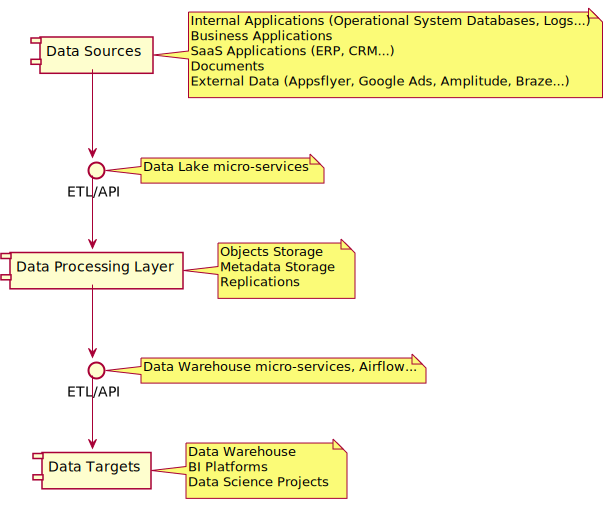
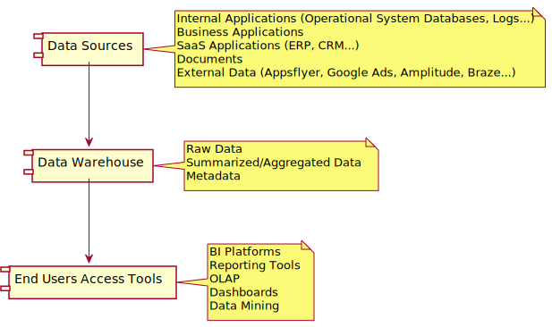
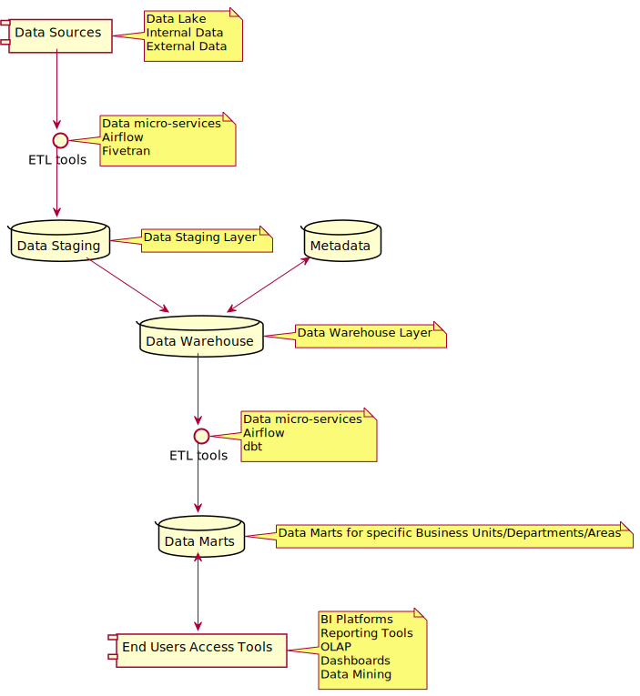
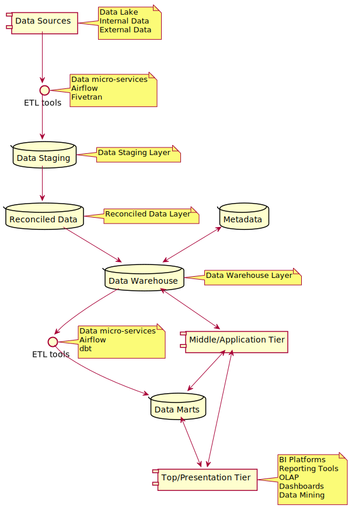
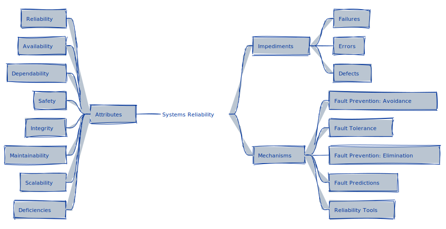
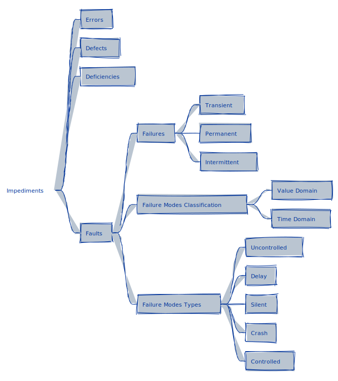
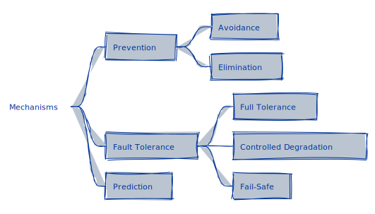
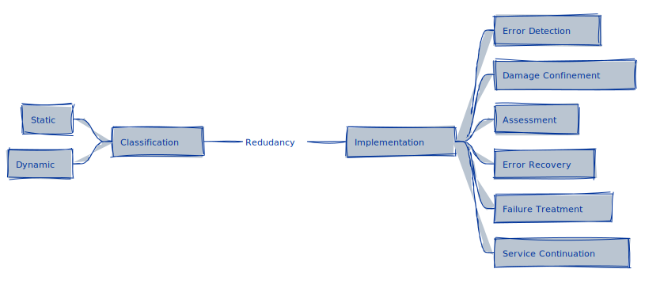
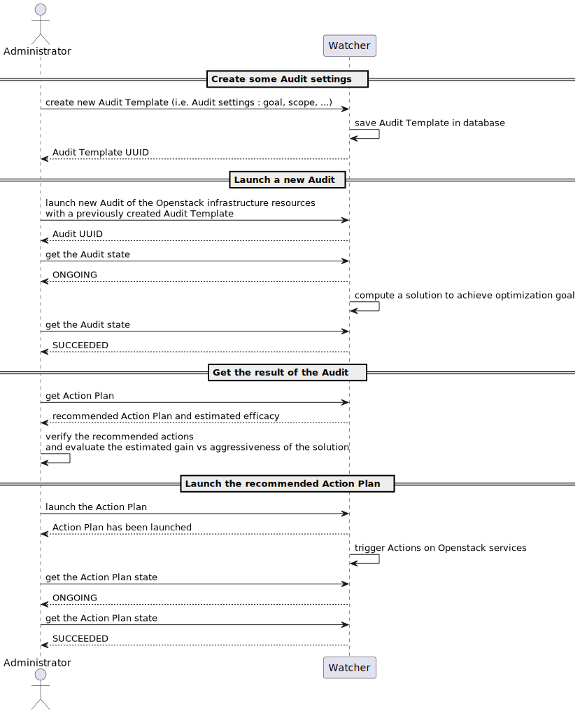
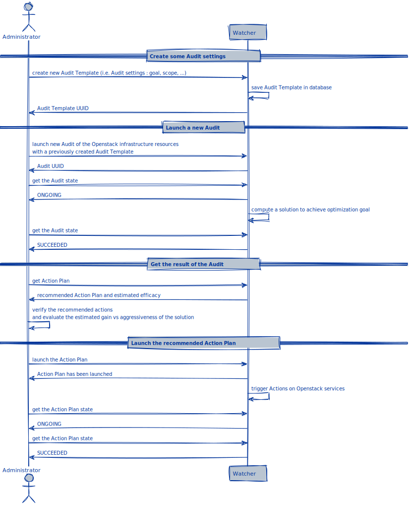

Data Reliability Engineering
Summary
Cover Title Summary Dedication Foreword Preface Author Objectives Structure
- I - Concepts
- Introduction to Systems
- Data Architecture
- Systems Reliability
- Impediments
- Attributes
- Mechanisms
- Fault Prevention: Avoidance
- Fault Tolerance
- Fault Prevention: Elimination
- Fault Prediction
- Reliability Tools
- Observability Tools
- Data Quality Automation Tools
- Version Control Systems
- Data Lineage Tools
- Workflow Orchestration Tools
- Data Transformation and Testing Tools
- Infrastructure as Code Tools
- Container Orchestration Tools
- Failure Reporting, Analysis, and Corrective Action System (FRACAS)
- Corrective Actions
- Reliability Block Diagrams
- Data Quality
- Data Reliability
- Processes
- Operations
- II - Use Cases
- III - Incorporating Data Reliability Engineering
- IV - Appendices
Epilogue Dictionary References Next Back Cover
Test: Images Test: Admonishes Test: Diagrams
Concepts
The first part of this book exposes the different concepts around the data reliability engineering subject. It's intended to be heavily technical, in contrast with the subsequent parts, crafted to explore practical use cases.
Introduction to Systems and Systems Reliability
These chapters explore the concepts of systems, reliability, and how to understand systems reliability, especially its impediments, attributes, and mechanisms to design and maintain reliable systems.
Data Architecture
This chapter explores in depth concepts of data architecture, including its sources, its storage (Data Lake, Data Warehouses, Data Marts), its application (OLAP servers, processing engines), and its presentation (dashboards, reports).
Data Quality
This chapter explores the concepts of data, quality, and data quality, to finally explore the concepts of data reliability. The goal is to understand these concepts in all aspects of the data: life cycle, design, modeling, governance, management, access, security, uses, legal frameworks, best practices, maturity, standards, etc.
Processes
This chapter explores, for a given system, the concept of data processes, data and information flow, workflows, orchestration, pipelines, ETL, and ELT.
Operations
This chapter explores the concept of SRE, DataOps, DevOps, Agile methodologies, CI/CD, and other methodologies to ensure reliable data operations.
Introduction to Systems
For the context of this book, a system is a collection of interrelated components working together towards a common goal, often to process, store, and manage data. These components can include hardware, software, databases, procedures, and people, all interacting in a structured way to achieve efficient and reliable data handling.
To better understand data reliability engineering, it's essential to understand a system from a technical and operational perspective. Technically, a system would include the architecture, technology, and protocols that ensure data integrity, availability, and consistency. Operationally, it involves the procedures and practices that maintain the system's performance and reliability over time.
When discussing data reliability, a system is the entire ecosystem supporting the data lifecycle, from creation and storage to retrieval and usage. A system includes considerations of redundancy, fault tolerance, backup procedures, security measures, and regular maintenance practices, all of which contribute to the system's overall reliability and the trustworthiness of its service.
Data Architecture
Data Architecture is about how the data is managed, from collection, transformations, distribution, and consumption.
It includes the models, policies, rules, and standards governing which data is collected and how it is stored, arranged, integrated, and put to use in data systems within the organization.
The data architecture aims to set standards for all data systems and the interaction between them. It also dictates and materializes the organization's understanding of its business in a Conceptual, Logical, and Physical level.
The Zachman Framework for enterprise architecture understands the data architecture in five layers:
- Scope/Contextual: subjects and architectural standards important for the business.
- Business/Conceptual: business entities, their attributes, and associations.
- System/Logical: how entities are related.
- Technology/Physical: representation of a data design as implemented in a database management system.
- Detailed Representations: databases.
Conceptual Layer (CDM)
Represents all Business Entities.
The Conceptual Data Model (CDM) consists of the Business Entities, like User, Branch, and Product. The business entities (or business objects) carry attributes (name, identifiers, timestamps, etc.), and associations (relationships) with other business entities. The complete set of business entities represents the business relationships.
From a data architecture perspective, these business entities are represented in a Conceptual Schema, which consists of a map of concepts (business entities) and their relationships in a database, normally in a Data Structure Diagram (DSD). It may also include Enterprise Data Modelling (EDM) outputs like entity–relationship diagrams (ERDs), XML schemas (XSD), and an enterprise-wide data dictionary.
The conceptual schema describes the semantics of an organization and represents a series of assertions about its nature. It describes the objects of significance (business entities) the organization is interested in collecting information, their characteristics (attributes), and the associations between each pair of objects of significance (relationships). Please note that the conceptual schema is not the actual database design, and is represented in different abstraction layers.
Examples:
- Each ORDER must be from one and only one USER.
- Each ORDER contains one or more PRODUCTS.
- Each ORDER contains products from one or more BRANCHES.
Logical Layer (LDM)
Represents the logic and how the entities are related.
The Logical Data Model (LDM), also known as the Domain Model, represents the abstract structure of a domain of information, expressed independently of a particular database management product or storage technology (physical data model), but in terms of data structures such as relational tables and columns, object-oriented classes, or XML tags.
Once validated and approved, the logical data model can become the basis of a physical data model and form the design of a database.
Physical Layer (PDM)
The representation of a data design as implemented, or intended to be implemented, in a database management system.
The Physical Data Model (PDM) typically derives from a logical data model (LDM), though it may be reverse-engineered from a given database implementation. A complete physical data model will include all the database artifacts required to create relationships between tables or to achieve performance goals, such as indexes, constraint definitions, linking tables, partitioned tables, or clusters.
CDM vs. LDM vs. PDM
Data Constructs
- Conceptual Data Model (CDM): uses general high-level data constructs from which Architectural Descriptions are created in non-technical terms.
- Logical Data Model (LDM): includes entities (tables), attributes (columns/fields), and relationships (keys). Is independent of technology (platform, DBMS).
- Physical Data Model (PDM): includes tables, columns, keys, data types, validation rules, database triggers, stored procedures, domains, and access constraints as primary keys and indices for fast data access.
Naming Conventions
- Conceptual Data Model (CDM): uses non-technical names, so that executives and managers at all levels can understand the data basis of Architectural Description.
- Logical Data Model (LDM): uses business names for entities & attributes.
- Physical Data Model (PDM): uses more defined and less generic specific names for tables and columns, such as abbreviated column names, limited by the database management system (DBMS) and any company-defined standards.
Modern Data Architecture
A modern approach to data architecture, extensively adopted by StartUps, reduces, restricts, or understands the data architecture as the implementation of a Data Warehouse, a Data Lake + Data Warehouse, or a Data Lakehouse architecture, consisting of the data sources plus two or three tiers:
- Bottom/Data Tier: data warehouse server with functional gateway (ODBC, JDBC, etc.). It may also include the data lake.
- Middle/Application Tier: houses the business logic used to process user inputs (OLAP Servers, Snowflake, Amazon Redshift, Databricks Data Lakehouse Platform, Apache Spark, etc.).
- Top/Presentation Tier: front-end tools (Power BI, Tableau, etc.).
Data Lake
A Data Lake is a data repository for storing large amounts of Structured, Semi-Structured, and Unstructured data.
It is a repository for storing all types of data in its native format without fixed limits on account size or file. The Data Lake stores a high data quantity to increase native integration and analytic performance. The Data Lake democratizes data and provides a cost-effective way of storing all organization data for later processing.
- Data Lake vs Data Warehouse
- Goals
- Data Lake Architecture
- Key Components of Data Lake Architecture
- Other Architecture Approaches
Data Lake vs Data Warehouse
A Data Warehouse is a repository that exclusively keeps pre-processed data from a Data Lake and many databases.
Data Warehouses store data in a hierarchical format using files and folders. This is not the case with a Data Lake, as it has a flat architecture. In a Data Lake, every data element is identified by a unique identifier and a set of metadata information.
Goals
Building and maintaining a Data Lake has five main goals: unifying the data, full query access, performance and scalability, progression, and costs.
Unification: Data Lake is a perfect solution to accumulate all the data from distinct data sources (ERP, CRM, logs, data partners data, internally generated data) in one place. The Data Lake architecture makes it easier for companies to get a holistic view of data and generate insights from it.
Full Query Access: storing data in Data Lakes allows full access to data that can be directly used by BI tools to pull data whenever needed. The ELT process is a flexible, reliable, and fast way to load data into Data Lake and then use it with other tools.
Performance and Scalability: Data Lake Architecture supports fast query processing. It enables users to perform ad hoc analytical queries independent of the production environment. Data Lake provides faster querying and makes it easier to scale up and down. The Data Lake offers business agility.
Progression: getting data in one place is a necessary step before progressing to other stages because loading data from one source makes it easier to work with BI tools. Data Lake helps you make data cleaner and error-free data that has less repetition.
Costs: S3 repositories are a cost-efficient storage of large volumes of data.
Data Lake Architecture
Data Lake Architecture Framework.
Data Lakes are often structured in zones or layers models. These models define in which processing degrees (raw, cleansed, aggregated) data are available in the data lake, and how they are governed (regarding access rights, data quality, and responsibilities).
Zones are similar to the layers in data warehousing, but data may not move through all zones or even move back.
Layers
Data Lake Layers.
The following data lake model approach is structured in layers:
- Ingestion Layer
- Distillation Layer
- Processing Layer
- Insights Layer
- Unified Operations Layer
The Raw Data entering the Data Lake consists of the organization's internal data (Operational Systems), especially relational data from databases, as well as streaming and batch data from data partners.
In the other extreme, representing the data leaving the Data Lake, the Business Systems, consists of databases, the Data Warehouse, dashboards, reports, and external data connections.
The first three layers constitute the medallion architecture, which is a data design pattern used to logically organize data in a Data Lake, with the goal of incrementally and progressively improving the structure and quality of data as it flows through each layer of the architecture (from Bronze ⇒ Silver ⇒ Gold layer tables). Medallion architectures are sometimes also referred to as "multi-hop" architectures.
You can see more details regarding this architecture approach in the article1 "Evolution of Data Warehouses to Data Lakes for Enterprise Business Intelligence".
Ingestion Layer (Bronze)
The purpose of the Ingestion Layer of the Data Lake Architecture is to ingest raw data into the Data Lake. There is no data modification in this layer. This is where we land all the data from external source systems.
The table structures in this layer correspond to the source system table structures "as-is," along with any additional metadata columns that capture the load date/time, process ID, etc. The focus in this layer is quick Change Data Capture and the ability to provide a historical archive of source (cold storage), data lineage, auditability, and reprocessing if needed without rereading the data from the source system.
The layer can ingest raw data in real-time or in batches, which is in turn organized into a logical folder structure. The Ingestion Layer can pull data from different external sources, like social media platforms.
Distillation Layer (Silver)
The purpose of the Distillation Layer of the Data Lake Architecture is to convert the data stored in the Ingestion (Bronze) Layer into a Structured format for analytics.
The data is matched, denormalized, merged, conformed, cleansed, and derived "just enough" so that the Silver layer can provide an "Enterprise view" of all its key business entities, concepts, and transactions (for example, master customers, stores, non-duplicated transactions, and cross-reference tables). The data in this layer becomes uniform in terms of format, encoding, and data type (parquet).
The Silver layer brings the data from different sources into an Enterprise view and enables self-service analytics for ad-hoc reporting, advanced analytics, and ML. It serves as a source for Departmental Analysts, Data Engineers, and Data Scientists to further create projects and analyses to answer business problems via enterprise and departmental data projects in the Gold Layer.
In the lakehouse data engineering paradigm (of which we’re extending to the Data Lake), typically the ELT methodology is followed vs. ETL - which means only minimal or "just enough" transformations and data cleansing rules are applied while loading the Silver layer. Speed and agility to ingest and deliver the data in the data lake are prioritized, and a lot of project-specific complex transformations and business rules are applied while loading the data from the Silver to Gold layer. From a data modeling perspective, the Silver Layer has more 3rd-Normal Form-like data models. Data Vault-like, write-performant data models can be used in this layer.
Processing Layer (Gold)
This layer of the Data Lake Architecture executes user queries and advanced analytical tools on the Structured Data.
The processes can be run in batch, in real-time, or interactively. It is the layer that implements the business logic and analytical applications consume the data. It is also known as the Trusted, Gold, or Production-Ready Layer.
It is typically organized in consumption-ready "project-specific" databases. The Gold layer is for reporting and uses more de-normalized and read-optimized data models with fewer joins. The final layer of data transformations and data quality rules are applied here. The Final presentation layer of projects such as Customer Analytics, Product Quality Analytics, Inventory Analytics, Customer Segmentation, Product Recommendations, Marking/Sales Analytics, etc. fit in this layer. We see a lot of Kimball's style star schema-based data models or Inmon's style Data marts fit.
Often, the Data Marts (and Data Warehouse data) from the traditional RDBMS technology stack are ingested into the Gold layer.
Insights Layer
This layer of the Data Lake Architecture acts as the query interface, or the output interface, of the Data Lake.
It uses SQL and NoSQL queries to request or fetch data from the Data Lake. The queries are normally executed by company users who need access to the data. Once the data is fetched from the Data Lake, it is the same layer that displays it to the user for viewing.
Some examples include Amazon QuickSight, an AWS native BI tool and allows users to connect with software-as-a-service (SaaS) applications such as Salesforce or ServiceNow, third-party databases such as MySQL, Postgres, and SQL Server, as well as native AWS services including Amazon Athena, an interactive query service that allows them to analyze unstructured data in Amazon S3 data lakes using standard SQL queries. While QuickSight doesn’t connect directly to the data lake, integration with Amazon Athena allows BI users to query data inside the lake without having to move data or build an ETL pipeline.
Unified Operations Layer
This layer governs system management and monitoring.
It includes auditing and proficiency management, data management, workflow management. AWS data lake environments and monitoring tools and best practices are described in this article2 from AWS.
Zones
Zone Reference Model for Enterprise-Grade Data Lake Management - Data Flow.
The following data lake approach is explored by the University of Stuttgart and Bosch GmbH3, and is known as Zone Reference Model for Enterprise-Grade Data Lake Management. It consists of:
- Landing Zone
- Raw Zone
- Harmonized Zone
- Distilled Zone
- Delivery Zone
- Explorative Zone
PlantUML rendering error: PlantUML did not generate an image, did you forget the @startuml, @enduml block (java -jar /usr/share/plantuml/plantuml.jar -tsvg -nometadata /tmp/.tmpTX3b6j/b510a51550cb2a65e78ebfbb460618d52bd15e92.puml)?
Zone Reference Model for Enterprise-Grade Data Lake Management - Meta-model for zones - Attributes.
Regarding how a zone interacts with other zones and the outside world, we have:
- Zone receives data from another Zone
- Zone forwards data to another Zone
- Zone imports data from a Data Source
- Zone exports data to the Data Sink
All zones contain a protected part. This part is encrypted and secured, and stores data that need extensive protection (for example, PII, personal data). Data wander from the protected part of one zone to the protected part of the next zone. They may only leave the protected part after being desensitized (for example, by anonymization). Data in this part are subject to strict access controls and governance. The protected part shares all other characteristics with the rest of the zone it is in.
Landing Zone
The Landing Zone is the first zone of the data lake. Data are ingested in batches or in data streams from the sources.
The Landing Zone is beneficial when the requirements of the ingested data and those of the Raw Zone diverge. For example, data might need to be ingested at a vast rate due to its volume and velocity. If the technical implementation of the Raw Zone cannot provide this high ingestion rate, a Landing Zone can function as a mediator in between: data are ingested at a high rate into the Landing Zone, and then are forwarded to the Raw Zone as batches. Examples of data coming to the Landing zone include data streamed by Kafka, Amazon Kinesis, Amazon SQS, RabbitMQ, Apache Spark, etc.
For the data characteristics, data ingested into the Landing Zone remains mostly raw. Their granularity remains raw, just like in the source systems. The schema of the data is not changed; they can simply be copied in their source system format. However, their syntax might be changed. Basic transformations are allowed upon ingestion into the Landing Zone, such as adjusting the character set of strings or transforming timestamps into a common format. In addition, data may be masked or anonymized to comply with legal regulations. Aside from these changes, the semantics of the data remains the same as in the source systems.
Raw Zone
All data in the data lake is available in mostly raw format in the Raw Zone. Only basic transformations (see Landing Zone) are applied to the data. If the Landing Zone is omitted, these transformations are performed in the Raw Zone.
Differently from the Landing Zone, the Raw Zone stores data persistently. In general, data should neither be manipulated nor deleted from the Raw Zone. This zone persists (when possible) the original data type (JSON, CSV, XML).
Harmonized Zone
The Harmonized Zone is the place where master data are accessible for analysis.
A subset of the data stored in the Raw Zone is passed to the Harmonized Zone in a demand-based manner. It is important to note that these data are not deleted from the Raw Zone. Instead, the Harmonized Zone contains a copy of or a view of the data in the Raw Zone. The Harmonized Zone is also the place where master data are accessible for analysis. As these data are crucial for enterprises, master data management is of high importance in the data lake. Thus, they should exclusively be accessed after being cleansed.
The data characteristics in this zone differ greatly from those in the Raw Zone. Data schema and syntax change when compared to the source data. Data from different source systems are integrated into a consolidated schema, regardless of their structure. The data syntax is also consolidated in the Harmonized Zone: when data from multiple source systems are merged, data types have to be adapted.
The Harmonized Zone aims to provide a harmonized and consolidated view of data. To this end, the Harmonized Zone uses a standardized modeling approach (dimensional modeling or Data Vault) in which all of the enterprise’s data are modeled. The files in this zone facilitate the ingestion (parquet).
Distilled Zone
Prepares data for processing and facilitates ingestion.
In contrast to the Raw and Harmonized Zone, where the focus is to quickly make data available for use, the Distilled Zone focuses on increasing the efficiency of following analyses by preparing the data accordingly. The granularity of the data may be changed (for example, data may be aggregated for the calculation of KPIs). Complex processing is applied, changing the data’s semantics, but is too extensive for the Landing Zone, Raw Zone, and Harmonized Zone However, the schema might also change slightly, depending on the supported use case (for example, fields to enrich the data could be added). The files in this zone facilitate the ingestion (parquet).
Explorative Zone
The Explorative Zone is the place where data scientists can play with and flexibly use the data.
Data scientists can use and explore data in the data lake in any way they desire, except for sensitive data. These data are only usable according to strict rules. Granularity, schema, syntax, and semantics may be changed in any way necessary for analyses.
Delivery Zone
In the Delivery Zone, small subsets of data are tailored to specific usage and applications.
This does not only include analytical use cases, such as reporting and OLAP, but also operational use cases. This zone thus provides functionality similar to data marts and operational data stores in data warehousing. Data from this zone may be forwarded to external data sinks.
The Delivery Zone especially supports users with little knowledge on data analytics. Data have to be easily findable and importable into various analytics tools. As for the modeling approach, data are available in whatever format supports the intended use case best, for example, dimensional modeling for OLAP, or flat tables for operational use.
Zones Comparisom
| Landing | Raw | Harmonized | Distilled | Explorative | Delivery | |
| Granularity | Raw | Raw | Raw | Aggregated | Any | Any |
| Schema | Any | Any | Consolidated | Consolidated, Enriched | Any | Any |
| Syntax | Basic transformations | Basic transformations | Consolidated | Consolidated | Any | Any |
| Semantics | Mostly unchanged, unless needed for compliance | Mostly unchanged, unless needed for compliance | Mostly unchanged, unless needed for compliance | Complex processing | Any | Any |
| Governed | True | True | True | True | False | True |
| Historized | False | True | True | True | N/A | N/A |
| Persistent | False | True | True | True | False | True |
| Has Protected Part | True | True | True | True | True | True |
| Use Case Dependent | False | False | False | True | True | True |
| User Groups | Systems, Processes | Data Scientists, Systems, Processes | Data Scientists, Systems, Processes | Data Scientists, Domain Experts, Systems, Processes | Data Scientists | Anyone |
| Modelling Approach | Any | Any | Standardized | Standardized | Any | Any |
Zone Reference Model for Enterprise-Grade Data Lake Management - Zones comparison.
Sandbox
Also known as the Analytics Sandbox, it provides data scientists and advanced analysts with a place for data exploration.
An Analytics Sandbox is a separate environment that is part of the overall data lake architecture, meaning that it is a centralized environment meant to be used by multiple users and is maintained with the support of IT. Some key characteristics of this layer:
- The environment is controlled by the analyst
- Allows them to install and use the data tools of their choice
- Allows them to manage the scheduling and processing of the data assets
- Enables analysts to explore and experiment with internal and external data
- Can hold and process large amounts of data efficiently from many different data sources; big data (unstructured), transactional data (structured), web data, social media data, documents, etc.
There are many advantages to having an Analytics Sandbox as part of your data architecture. The most important is that it decreases the amount of time that it takes a business to gain knowledge and insight from their data. It does this by providing an on-demand/always-ready environment that allows analysts to quickly dive into and process large amounts of data and prototype their solutions without kicking off a big BI project. In other words, it enables agile BI by empowering your advanced users.
Another major benefit to the business and IT team is that by giving the business a place to prototype their data solutions it allows the business to figure out what they want on their own without involving IT. When they decide that a solution is adding business value, it becomes a good candidate for something that should be productized and built into the Data Warehouse process at some point. This saves both teams a lot of time and effort.
Maturity Stages
The implementation of a Data Lake solution consists of some main maturity stages.
- Handle and ingest data at scale
- Building the analytical muscle
- Data Warehouse and Data Lake working in unison
- Enterprise capability
Handle and Ingest data at scale
This stage consists of improving the ability to transform and analyze data.
Building the analytical muscle
This stage involves improving the ability to transform and analyze data.
In this stage, the company starts acquiring more data and building applications. In this stage, the capabilities of the Data Warehouse and the Data Lake are used together.
Data Warehouse and Data Lake work in unison
This step involves getting data and analytics into the hands of as many people as possible.
In this stage, the Data Lake and the Data Warehouse start to work in a union. Both lay their part in analytics.
Enterprise capability in the lake
In this maturity stage of the data lake, enterprise capabilities are added to the Data Lake.
It includes the adoption of information governance, information lifecycle management capabilities, and Metadata management.
Key Components of Data Lake Architecture

Key Components of Data Lake Architecture.
Data Ingestion
Data Ingestion allows connectors to get data from different data sources and load it into the Data Lake.
Data Ingestion supports:
- All types of Structured, Semi-Structured, and Unstructured data.
- Multiple ingestions like Batch, Real-Time, and One-time load.
- Many types of data sources like Databases, Webservers, Emails, and FTP.
Data Storage
Data storage should be scalable, offer cost-effective storage, and allow fast access to data exploration. It should support various data formats.
Data Governance
Data governance is a process of managing the availability, usability, security, and integrity of data used in an organization.
Security
Security needs to be implemented in every layer of the Data Lake. It starts with Storage, Unearthing, and Consumption. The basic need is to stop access for unauthorized users. It should support different tools to access data with easy-to-navigate GUI and Dashboards.
Authentication, Accounting, Authorization, and Data Protection are some important features of Data Lake security.
Data Quality
Data quality is an essential component of Data Lake architecture. Data is used to exact business value. Extracting insights from poor-quality data will lead to poor-quality insights.
Data Discovery
Data Discovery is another important stage before you can begin preparing data or analysis. In this stage, tagging technique is used to express the data understanding, by organizing and interpreting the data ingested in the Data Lake.
Data Auditing
Data auditing helps to evaluate risk and compliance.
The main Data auditing tasks are:
- Tracking changes to important dataset elements
- Captures how/when/who changes to these elements.
Data Lineage
This component deals with the data’s origins. It mainly deals with where it movers over time and what happens to it. It eases error corrections in a data analytics process from origin to destination.
Data Exploration
It is the beginning stage of data analysis. It helps to identify the right dataset is vital before starting Data Exploration.
All given components need to work together to play an important part in Data Lake building easily evolving and exploring the environment.
Other Architecture Approaches
Data Lake Lambda Architecture for Smart Grids Big Data Analytics: relies on Lambda architecture that is capable of performing parallel batch and real-time operations on distributed data. See the article. Also, see a brief explanation of the Lambda Architecture in this article.
A. A. Munshi and Y. A. -R. I. Mohamed, "Data Lake Lambda Architecture for Smart Grids Big Data Analytics," in IEEE Access, vol. 6, pp. 40463-40471, 2018, doi: 10.1109/ACCESS.2018.2858256.
Ajit Singh, "Architecture of Data Lake", International Journal of Scientific Research in Computer Science, Engineering and Information Technology (IJSRCSEIT), ISSN : 2456-3307, Volume 5 Issue 2, pp. 411-414, March-April 2019. Available at doi: https://doi.org/10.32628/CSEIT1952121
1: Prakash, S. S. (2020). Evolution of Data Warehouses to Data Lakes for Enterprise Business Intelligence. Evolution, 8(4).
2: The article discuss data lake optimizations using AWS products, like CloudWatch, Macie, CloudTrail, and S3 Intelligent-Tiering.
3: C. Giebler, C. Gröger, E. Hoos, H. Schwarz and B. Mitschang, "A Zone Reference Model for Enterprise-Grade Data Lake Management," 2020 IEEE 24th International Enterprise Distributed Object Computing Conference (EDOC), Eindhoven, Netherlands, 2020, pp. 57-66, doi: 10.1109/EDOC49727.2020.00017.
Data Warehouse
A Data Warehouse (DWH), also known as Enterprise Data Warehouse (EDW), is a central repository of information that can be analyzed to make more informed decisions.
Data flows into a data warehouse from Data Lake, transactional systems, relational databases, and other sources, typically on a regular cadence. Business analysts, data engineers, data scientists, and decision-makers access the data through Business Intelligence (BI) tools, SQL clients, and other analytics applications.
- Goals
- Data Warehouse Architecture
- Data Modeling Methodologies
- Maturity Stages
- Key Components of a Data Warehouse
Goals
When implementing a data warehouse, the main goals are to achieve consistency, enable data-driven decision-making and improvement, and maintain data Single Source of Truth.
Consistency: to maintain a uniform format for all collected data, making it easier for corporate decision-makers to analyze and share data insights with their colleagues. Standardizing data from different sources also reduces the risk of error in interpretation and improves overall accuracy.
Decision-making: successful business leaders develop data-driven strategies and rarely make decisions without consulting the facts. Data warehousing improves the speed and efficiency of accessing different data sets and makes it easier for corporate decision-makers to derive insights that will guide the business and marketing strategies that set them apart from their competitors.
Improving: allow business leaders to quickly access the organization's historical activities and evaluate initiatives that have been successful — or unsuccessful — in the past. This allows executives to see where they can adjust their strategy to decrease costs, maximize efficiency, and increase business results.
Single Source of Truth: the whole organization would benefit from having a single source of truth, especially when there are multiple data sources to a common business dimension.
Data Warehouse Architecture

Data Warehouse Solution.
There are several data warehouse architecture approaches available. Data warehouses would have in common some key components:
Data Sources
In most architecture approaches, it’s the Source Layer, or Data Source Layer, and consists of all the data sources the Warehouse Layer will consume.
Operational System: is a method used in data warehousing to refer to a system that is used to process the day-to-day transactions of an organization. Physically, it will normally refer to the databases the organization applications and micro-services create.
Flat Files System: is a system of files in which transactional data is stored, and every file in the system must have a different name.
Warehouse
In most architecture approaches, it’s the Warehouse Layer, or Data Warehouse Layer, and consists of all the data stored in the RDBMS database with available gateway access (ODBC, JDBC, etc.). It also contains the metadata, some degree of data summarization, and business logic applied, which differentiate a DWH database from a Production database.
Metadata
Metadata is the road map to a data warehouse, it defines the warehouse objects and acts as a directory. This directory helps the decision support system to locate the contents of a data warehouse.
It normally contains:
- A description of the Data Warehouse structure, including the warehouse schema, dimensions, hierarchies, data mart locations, contents, etc.
- Operational metadata, which usually describes the currency level of the stored data (for example, active, archived, or purged), and warehouse monitoring information (for example, usage statistics, error reports, audit, etc).
- System performance data, which includes indices, is used to improve data access and retrieval performance.
- Information about the mapping from operational databases, which provides source RDBMSs and their contents, cleaning and transformation rules, etc.
- Summarization algorithms, predefined queries, and reports business data, which include business terms and definitions, ownership information, etc.
Metadata management tool examples are Datahub, Open Metadata, and Amundsen.
Summarized Data
The summarized data is the area of the data warehouse that maintains all the predefined lightly and highly summarized (aggregated) data. The main goal is to speed up query performance, and the summarized records are updated continuously as new information is loaded into the warehouse.
End-User Access Tools
The main purpose of a data warehouse is to provide information to the business for strategic decision-making. These end-users interact with the warehouse using end-client access tools.
Examples of some of the end-user access tools can be:
- Reporting and Query Tools
- Application Development Tools
- Executive Information Systems Tools
- Online Analytical Processing Tools
- Data Mining Tools
Two-Tier vs Three-Tier Architecture
The data warehouse will normally be designed in a Two-Tier or a Three-Tier architecture approach. The details of which one will be explored in the chapter Data Warehouse Tier Architecture.
In short, the tiers are:
- Bottom/Data Tier: data warehouse server with functional gateway (ODBC, JDBC, etc.).
- Middle/Application Tier: houses the business logic used to process user inputs. Examples: OLAP Servers, Snowflake, Apache Redshift, Databricks Data Lakehouse Platform, Apache Spark.
- Top/Presentation Tier: front-end tools.
Data Modeling Methodologies
Being one of the most important topics of data warehouse design and architecture, the data modeling methodology choosing process is arduous and polemic and will impact the whole design and implementation of the data warehouse solution.
Especially for startups, the first versions or iterations of a data solution (implemented before the organization even starts discussing the implementation of a data warehouse solution) will be very similar to a Kimball (or Bottom-up) methodology approach, though not planned explicitly as such. This means the data marts (or the data to be accessed by the first BI tools adopted in the organization) are first formed based on the business requirements.
There are lots of advantages and disadvantages of priming this approach over a top-down approach (or any of the hybrid or alternative methodologies).
See all the details of the different data modeling methodologies in the chapter Data Modeling. See also the implementation of a three-tier data warehouse architecture in the paper{{Tangkawarow, I. R. H. T., Runtuwene, J. P. A., Sangkop, F. I., & Ngantung, L. V. F. (2018, February). Three Tier-Level Architecture Data Warehouse Design of Civil Servant Data in Minahasa Regency. In IOP Conference Series: Materials Science and Engineering (Vol. 306, No. 1, p. 012061). IOP Publishing.}} "Three Tier-Level Architecture Data Warehouse Design of Civil Servant Data in Minahasa Regency".
Maturity Stages
#TODO
Key Components of a Data Warehouse
Data Ingestion: Allows connectors to get data from different data sources and load it into the Data Warehouse. The data will normally come from the Data Lake and External Sources connection (Fivetran), through multiple ETLs (Airflow, services, apps, ETL tools and platforms, etc.).
Data Storage: The data is stored in the data warehouse database, a relational database (RDBMS), like Postgres.
Data Governance: This is a process of managing the availability, usability, security, and integrity of data used in an organization.
Security: It needs to be implemented in every layer of the Data Warehouse. It includes setting up the data warehouse read-only by default and setting up custom User Groups. It also includes access to the databases (VPCs, VPNs, Whitelisting, etc.), strong and active DevOps monitoring, and the enforcing of best practices in all levels of the data warehouse environment (data ingestion, data marts consumption, ETLs design, etc.).
Data Quality: It is an essential component of Data Warehouse architecture. Data is used to exact business value. Extracting insights from poor-quality data will lead to poor-quality insights.
Data Discovery: This is another important stage before you can begin preparing data or analysis. All this relies on good metadata and data modeling.
Data Auditing: It helps to evaluate risk and compliance. Two major Data auditing tasks are tracking changes to the key dataset.
- Tracking changes to important dataset elements.
- Captures how/when/who changes to these elements.
Data Lineage: It deals with data’s origins. It mainly deals with where it movers over time and what happens to it. It eases error corrections in a data analytics process from origin to destination. Some data modeling techniques may facilitate lineage in comparison to others (Vault vs Kimball vs Inmon).
Data Exploration: This is the beginning stage of data analysis. It helps to identify the right dataset, vital before starting Data Exploration. All given components need to work together to play an important part in Data Warehouse building to easily evolve and explore the environment.
Tier Architecture
Two-Tier Architecture

Two-Tier Data Warehouse Architecture.
Data Source Layer: A data warehouse system uses a heterogeneous source of data. That data is stored initially in the organization's relational databases or legacy databases, or it may come from an information system outside the organization's walls.
Data Staging Layer: The data stored in the source should be extracted, cleansed to remove inconsistencies and fill gaps, and integrated to merge heterogeneous sources into one standard schema. The ETLs can combine heterogeneous schemata, extract, transform, cleanse, validate, filter, and load source data into a data warehouse. Note that this can be achieved in two ways:
- Having the Distillation Layer (Silver) in the Data Lake as the Data Staging Layer.
- Creating a separate database within the Data Warehouse, or a separate database schema. Following the principle that all the data in the data warehouse should be cleaned and have high-quality standards, a separate database should be preferred.
Data Warehouse Layer: The information is saved to one logically centralized individual repository: a data warehouse. The data warehouse can be directly accessed, but it can also be used as a source for creating data marts, which partially replicate data warehouse contents and are designed for specific enterprise departments. Metadata repositories store information on sources, access procedures, data staging, users, data mart schema, and so on.
Analysis Layer: In this layer, integrated data is efficiently, and flexibly accessed to issue reports, dynamically analyze information, and simulate hypothetical business scenarios. It should feature aggregated information navigators, complex query optimizers, and customer-friendly GUIs.
Three-Tier Architecture

Three-Tier Data Warehouse Architecture.
As the name of the architecture suggests, it consists of three tiers (levels):
- Bottom/Data Tier: data warehouse server with functional gateway (ODBC, JDBC, etc.).
- Middle/Application Tier: houses the business logic used to process user inputs. Examples: OLAP Servers, Snowflake, Apache Redshift, Databricks Data Lakehouse Platform, Apache Spark.
- Top/Presentation Tier: front-end tools.
The Bottom and Top tiers were already discussed in detail in the previous section, so we only have left to cover, the implementation of the Middle Tier, very important to enable fast querying of the data warehouse. It is important to note the solutions to the middle tier are often referred to as the Data Warehouse itself, but they’re only the Application tier/level in a complete data warehouse solution (It’s like saying Snowflake is the DWH when it’s just one part of the complete DWH solution).
Reconciled Layer
The Reconciled Layer sits between the source data and the data warehouse. The main advantage of the reconciled layer is that it creates a standard reference data model for the whole company. At the same time, it separates the problems of source data extraction and integration from those of the data warehouse population. In some cases, the reconciled layer is also directly used to accomplish better operational tasks, such as producing daily reports that cannot be satisfactorily prepared using the corporate applications or generating data flows to feed external processes periodically to benefit from cleaning and integration.
This architecture is especially useful for extensive, enterprise-wide systems. A disadvantage of this structure is the extra file storage space used through the redundant reconciled layer. It also makes the analytical tools a little further away from being real-time.
Please note that a reconciled layer could be part of the Data Warehouse, or the Data Lake (see Harmonized Zone, in the Data Lake concepts chapter).
Middle/Application Tier
Houses the business logic used to process user inputs. Example: OLAP Servers, Snowflake, Apache Redshift, Databricks Data Lakehouse Platform.
See details in the chapter Data Warehouse Middle/Application Tier
Data Warehouse Middle/Application Tier
Houses the business logic used to process user inputs.
One could argue that OLAP is dead, at least in the traditional format (solutions like Mondrian), and cloud/modern solutions should be applied to accompany business fast demand for data.
Given this book aims to explore business scenarios mostly common to startups, in this sense, given cost restrictions, solutions like Apache Kylin seem to be a better approach (details below). When costs are less restricted, and/or data demands increase, other solutions like AWS Redshift, Snowflake, and Databricks Lakehouse are preferred/recommended.
Snowflake
AWS Redshift
#TODO
Snowflake vs AWS Redshift
Databricks Lakehouse Platform
It combines the ACID transactions and data governance of data warehouses with the flexibility and cost-efficiency of data lakes to enable business intelligence (BI) and machine learning (ML) on all data.
Data Lakehouse vs. Data Warehouse vs Data Lake
Data in the data warehouse is easy to use, but harder to store. The opposite is true for the data lake: it’s easy to ingest and store data, but a pain to consume and query.
The data lakehouse has a layer design, with a warehouse layer on top of a data lake. This architecture, which enables combining structured and unstructured data, makes it efficient for business intelligence and business analysis. Data lakehouses provide structured storage for some types of data and unstructured storage for others while keeping all data in one place.
OLAP Servers
Relational OLAP Servers (ROLAP)
They use a relational or extended-relational DBMS to save and handle warehouse data, and OLAP middleware to provide missing pieces. They work primarily from the data that resides in a relational database, where the base data and dimension tables are stored as relational tables. This model permits the multidimensional analysis of data.
This technique relies on manipulating the data stored in the relational database to give the presence of traditional OLAP's slicing and dicing functionality.
Advantages
Can handle large amounts of information: the data size limitation of ROLAP technology depends on the data size of the underlying RDBMS. So, ROLAP itself does not restrict the data amount.
RDBMS already comes with a lot of features. So ROLAP technologies, (works on top of the RDBMS) can control these functionalities.
Disadvantages
Performance can be slow: each ROLAP report is a SQL query (or multiple SQL queries) in the relational database. Query times can be prolonged if the underlying data size is large.
Limited by SQL functionalities: ROLAP technology relies on developing SQL statements to query the relational database, and SQL statements do not suit all needs.
Multidimensional OLAP Servers (MOLAP)
It is based on a native logical model that directly supports multidimensional data and operations. Data are stored physically in multidimensional arrays, and positional techniques are used to access them.
One of the significant distinctions between MOLAP and ROLAP is that data are summarized and stored in an optimized format in a multidimensional cube, instead of in a relational database. In the MOLAP model, data are structured into proprietary formats by the client's reporting requirements with the calculations pre-generated on the cubes.
Advantages
Excellent Performance: a MOLAP cube is built for fast information retrieval, and is optimal for slicing and dicing operations.
Can perform complex calculations: all evaluations have been pre-generated when the cube is created. Hence, complex calculations are not only possible, but they return quickly.
Disadvantages
Limited in the amount of information it can handle: Because all calculations are performed when the cube is built, it is not possible to contain a large amount of data in the cube itself.
Hybrid OLAP Servers (HOLAP)
It incorporates the best features of MOLAP and ROLAP into a single architecture. It saves more substantial quantities of detailed data in the relational tables while the aggregations are stored in the pre-calculated cubes. HOLAP also can drill through from the cube down to the relational tables for delineated data.
Advantages
- It provides the benefits of both MOLAP and ROLAP.
- It provides fast access at all levels of aggregation.
- It balances the disk space requirement, as it only stores the aggregate information on the OLAP server and the detail record remains in the relational database. So no duplicate copy of the detail record is maintained.
Disadvantages
HOLAP architecture is very complicated because it supports both MOLAP and ROLAP servers.
OLAP Servers options
Apache Kylin
Only supports MOLAP and Offline data storage modes. It supports both SQL and MDX queries, has RESTful API capabilities (also ODBC, and JDBC), and can be integrated/connected with Tableau (also Redash, Superset, Zeppelin, Qlik, and Excel).
It supports Real-time processing, partitioning, usage-based optimizations, load balancing, and clustering. It supports LDAP, SAML, and Kerberos authentication.
Mondrian OLAP Server
Only supports ROLAP data storage modes. It supports MDX queries but not SQL and has REST API capabilities. Does not natively connect with Tableau, but queries can be performed via Java APIs. It supports real-time processing and partitioning.
Data Modelling
Kimball/Bottom-Up
The design of the Data Marts comes from the business requirements.
The primary data sources are then evaluated, and ETL tools are used to fetch data from several sources and load it into a staging area of the relational database server. Once data is uploaded in the data warehouse staging area, the next phase includes loading data into a dimensional data warehouse model that is denormalized by nature. This model partitions data into the fact and dimension tables. Kimball dimensional modeling allows users to construct several star schemas to fulfill various reporting needs.
Kimball Approach to Data Warehouse Lifecycle.
Advantages
Fast to construct (quick initial phase): it is fast to construct as no normalization is involved, which means swift execution of the initial phase of the data warehousing design process.
Simplified queries: in a star schema, most data operators can easily comprehend it because of its denormalized structure, which simplifies querying and analysis.
Simplified business management: the data warehouse system footprint is trivial because it focuses on individual business areas and processes rather than the whole company. So, it takes less space in the database, simplifying system management.
Fast data retrieval: as data is segregated into fact tables and dimensions.
Smaller teams: a smaller team of designers and planners is sufficient for data warehouse management because data source systems are stable, and the data warehouse is process-oriented. Also, query optimization is straightforward, predictable, and controllable.
Deeper insights: it allows business intelligence tools to deeper across several star schemas and generates reliable insights.
Disadvantages
No Single Source of Truth: Data isn’t entirely integrated before reporting, so the idea of a single source of truth is lost.
Too prone to data irregularities: this is because, in the denormalization technique, redundant data is added to database tables.
Too difficult and expensive to add new columns: performance issues may occur due to the addition of columns in the fact table, as these tables are quite in-depth. The addition of new columns can expand the fact table dimensions, affecting its performance.
Can't respond (well) to business changes: it is too difficult to alter the models.
Not BI-friendly: as it is business process-oriented, instead of focusing on the company as a whole, it cannot handle all the BI reporting requirements.
Inconsistent dimensional view: this model is not as strong as the top-down approach as the dimensional view of data marts is not as consistent as it is in the Inmon approach.
In brief, the Kimball approach has a low start-up cost**, is faster to deliver the first phase of the data warehouse design, and is faster to release to production (first version), but is suitable for Tactical business decision support requirements (versus Strategic), and addresses individual business requirements (vs Enterprise-wide). Another important topic that derives from this methodology approach is the Data Warehouse Bus Architecture.
Inmon/Top-Down
Subject-oriented, nonvolatile, integrated, time-variant collection of data in support of management’s decisions.
On the other hand, Bill Inmon, the father of data warehousing, came up with the concept of developing a data warehouse that identifies the main subject areas and entities the enterprise works with, such as customers, products, vendors, etc. Inmon’s definition of a data warehouse is that it is a “subject-oriented, nonvolatile, integrated, time-variant collection of data in support of management’s decisions”.
The model then creates a thorough, logical model for every primary entity (Business Entities). For instance, a logical model is constructed for products with all the attributes associated with that entity. This logical model could include many entities, including all the details, aspects, relationships, dependencies, and affiliations.
The Inmon design approach uses the normalized form for building entity structure, avoiding data redundancy as much as possible. This results in clearly identifying business requirements and preventing any data update irregularities. Moreover, the advantage of this top-down approach in database design is that it is robust to business changes and contains a dimensional perspective of data across data mart.
Next, the physical model is constructed, which follows the normalized structure. This Inmon model creates a Single Source of Truth for the whole business to consume. Data loading becomes less complex due to the normalized structure of the model. However, using this arrangement for querying is challenging as it includes numerous tables and links.
This Inmon data warehouse methodology proposes constructing data marts separately for each division, such as finance, marketing sales, etc. All the data entering the data warehouse is integrated. The data warehouse acts as a single data source for various data marts to ensure integrity and consistency across the enterprise.
Advantages
Single Source of Truth: the data warehouse acts as a unified source of truth for the entire business, where all data is integrated.
Very low data redundancy: there’s less possibility of data update irregularities, making the data warehouse ETL processes more straightforward and less susceptible to failure.
Great flexibility: it’s easier to update the data warehouse in case there’s any change in the business requirements or source data.
BI-friendly: It can handle diverse company-wide reporting requirements.
Disadvantages
Increasing complexity: it increases as multiple tables are added to the data model with time.
Skilled Human Resources: resources skilled in data warehouse data modeling are required, which can be expensive and challenging to find.
Slow setup: the preliminary setup and delivery are time-consuming.
Expert management: this approach requires experts to manage a data warehouse effectively.
In brief, the Inmon has a high start-up cost**, requires more time to be in production and meet business needs (very large projects with a very broad scope), and requires a bigger team of specialists, but is more suitable for systems and business changes**, better integrates with the whole organization, favors Strategic business decision support requirements (vs Tactical), and facilitates Business Intelligence development.
Hybrid
In a hybrid model, the data warehouse is built using the Inmon model, and on top of the integrated data warehouse, the business process-oriented data marts are built using the star schema for reporting.
The hybrid approach provides a Single Source of Truth for the data marts, creating highly flexible solutions from a BI point of view.
Based on the Hub and Spoke Architecture, the hybrid design methodology can also make use of Operational Data Stores (ODS), integrating and cleaning data from multiple data sources. The information is then parsed into the actual Data Warehouse.
Hybrid methods will normally keep the data in the 3rd normal form, reducing redundancy. Although a normal relational database is not efficient for BI reports. Data marts for specific reports can then be built on top of the data warehouse solution.
When the data is denormalized, all the data available is pulled (as advocated by Inmon) while using a denormalized design (as advocated by Kimball). One example is the Carry Forward method.
Another hybrid methodology is the Data Vault, discussed below.
Example of a Hybrid Methodology approach.
Vault
The Vault Data Modelling is a hybrid design, consisting of the best-of-breed practices from both 3rd normal form and star schema.
It is not a true 3rd normal form and breaks some of the rules that 3NF dictates. It is a top-down architecture with a bottom-up design, geared to be strictly a data warehouse. It is not geared to be end-user accessible, which when built, still requires the user of a data mart or star-schema-based release for business purposes.
Data Vault data modeling breaks data into a small number of standard components – the most common of which are **Hubs, Links, and Satellites.
Hubs are entities of interest to the business. They contain just a distinct list of business keys and metadata about when each key was first loaded and from where.
Links connect Hubs and may record a transaction, composition, or other type of relationship between hubs. They contain details of the hubs involved (as foreign keys) and metadata about when the link was first loaded and from where.
Satellites connect to Hubs or Links. They are Point in Time: so we can ask and answer the question, "What did we know when?". Satellites contain data about their parent Hub or Link and metadata about when the data was loaded, from where, and a business effectivity date.
The data model of the data warehouse is constructed using these components. These are:
Standard: each component is always constructed the same way.
Simple: easy to understand, and with a little practice, easy to apply to model your system.
Connected: hubs only connect to links and satellites, links only connect to hubs and satellites, and satellites only connect to hubs or links.
Data Vault has staging, vault, and mart layers. Star schemas live in the mart layer, each star schema exposes a subset of the vault for a particular group of users. Typically, hubs and their satellites form dimensions, and links and their satellites form facts.
A Data Vault complements the Data Lake and is a solution for organizations that need to integrate and add structure to the data held in the Data Lake.
Example of Data Vault 2.0 Modelling Methodology approach.
Bus Architecture
A bus architecture is composed of a set of tightly integrated data marts that get their power from conformed dimensions and fact tables. A conformed dimension is defined and implemented one time so that it means the same thing everywhere it's used.
A dimension table is the "lookup" table of a dimensional model. It contains textual data that decodes an identifier in associated fact tables. A conformed dimension is defined and implemented one time and used throughout the multiple-star schemas that make up the enterprise data mart. Dimensions define the who, what, where, when, why, and how of a situation, and are laid out for the benefit of business users.
To conform to a dimension, every stakeholder must agree on a common definition for the dimension, so that the dimension means the same thing no matter where it’s used.
#TODO: continue from https://www.itprotoday.com/sql-server/data-warehouse-bus-architecture
#TODO. Inflow, Upflow, Downflow, Outflow, and Meta flow.
Slowly Changing Dimensions (SCD)
Slowly Changing Dimensions (SCDs) are concepts in data warehousing used to manage and track changes in dimension data over time. Dimensions in data warehousing refer to descriptive attributes related to business entities, such as products, customers, or geographical locations, which can change over time. Managing these changes accurately is crucial for historical reporting, trend analysis, and decision-making.
Type 0: Fixed Dimension
No changes are allowed. The dimension data is static, and any updates to the source data are ignored.
Suitable for data that doesn't change, such as historical data, fixed identifiers, or regulatory codes.
Type 1: Overwrite
Updates overwrite existing records, with no history of previous values being kept. This approach is simple but sacrifices historical accuracy.
Appropriate when historical data isn't necessary for analysis, or for correcting minor errors in dimension attributes.
Type 2: Add New Row
This approach involves adding a new row with the updated values while retaining the old rows to preserve history. Typically, attributes like "valid from," "valid to," and "current indicator" are used to manage the versioning of records.
Essential for detailed historical tracking where it's important to know the state of the dimension at any point in time, such as tracking address changes for a customer.
Type 3: Add New Attribute
Involves adding new attributes to store the current and previous values of the changed dimension. It's limited in historical tracking as it usually only keeps the last change.
Useful when only the most recent historical data is needed, such as tracking the previous and current manager of an employee.
Type 4: History Table
Separates the current data from historical data by maintaining a current table (similar to Type 1) and a separate history table (similar to Type 2) to track changes over time.
Beneficial for performance optimization, as it keeps the main dimension table smaller and more efficient for queries, while still allowing historical analysis.
Hybrid: Combination of Types
Combines features from different types to suit specific needs. A common hybrid approach is using Type 2 with a current indicator flag or combining Type 2 for historical tracking with Type 1 attributes for frequently changing attributes where history isn't needed.
A good fit for complex scenarios where different attributes of the dimension require different types of change management. For example, storing a complete history of address changes (Type 2) while only keeping the current phone number (Type 1).
Considerations
-
Data Volume: SCD Type 2 and Type 4 can significantly increase data volume due to the historical records they generate.
-
Query Complexity: SCD Type 2 and hybrids can introduce complexity into queries, as they require filtering for current or specific historical records.
-
Performance: Type 1 and Type 0 are generally more performant for queries due to the lack of versioning but at the cost of historical accuracy.
In practice, the choice of SCD type depends on the specific business requirements, the importance of historical accuracy, query performance needs, and the complexity that the organization can manage. It's not uncommon for a single data warehouse to employ multiple SCD types across different dimensions based on these considerations.
Operational Data Stores (ODS) & Data Operational Stores (DOS)
The terms "Operational Data Stores" (ODS) and "Data Operational Stores" (DOS) are often used interchangeably in the industry, but they can represent slightly different concepts depending on the context in which they are used. Here's a breakdown of the differences based on common interpretations:
Operational Data Stores (ODS)
-
Purpose: An ODS is primarily designed for integrating data from multiple sources to provide a unified and current view of operational data. It's optimized for routine, operational reporting and queries that require up-to-the-minute data.
-
Data Freshness: The data in an ODS is near real-time and reflects the most current state of business operations. It's commonly used for operational reporting and day-to-day decision-making.
-
Data Integration and Cleansing: An ODS often involves data integration, cleansing, and consolidation processes to ensure data quality and consistency across different systems.
-
Usage: Used by business users and analysts for operational reporting, customer service inquiries, and as an interim store for data that will be loaded into a data warehouse for historical analysis.
Data Operational Stores (DOS)
-
Purpose: DOS can sometimes refer to the broader category of storage systems used for operational purposes, including databases that support online transaction processing (OLTP) systems.
-
Data Freshness: While also dealing with current data, DOS in this context might not necessarily integrate data from multiple sources. Each DOS might be dedicated to a specific application or operational system.
-
Data Integration and Cleansing: A DOS might not always include data cleansing and integration functionalities. It may store data as it is generated or captured by operational systems.
-
Usage: Used by applications and operational systems for immediate transaction processing, such as order processing systems, inventory management systems, and other OLTP systems.
Key Differences
-
Integration: ODS typically integrates data from multiple sources and provides a unified view, whereas DOS might refer to individual operational systems or databases optimized for specific applications.
-
Data Processing: ODS may include more sophisticated data processing capabilities, such as data cleansing and transformation, to ensure data quality and consistency. DOS, in the broader sense, may focus on efficiently handling transactions and queries for specific operational processes.
-
Use Case: ODS is more closely aligned with operational reporting and analytics, providing a comprehensive view of business operations for decision-making. DOS, when referred to as individual operational databases, supports the immediate transactional needs of specific applications.
In practice, the distinction between ODS and DOS can be subtle and depends on the organizational context and specific architecture. Some organizations might use the term DOS to describe what is traditionally known as an ODS, especially when emphasizing the operational aspect of the data store.
Operational Data Stores (ODS)
Operational Data Stores (ODS) are centralized databases designed to integrate data from multiple sources for additional operations such as reporting, analysis, and operational support. The ODS is optimized for fast query performance and near real-time analysis, making it a critical component for day-to-day business operations.
Goals
-
Data Integration: ODS serves as an intermediary between transactional databases and analytical data warehouses, integrating data from various sources into a unified format for operational reporting and decision-making.
-
Real-Time or Near Real-Time Analysis: Unlike data warehouses that are optimized for historical data analysis, ODS provides access to current or near real-time data, supporting operational decision-making and reporting.
-
Improved Data Quality: Data passing through an ODS is cleansed and transformed, improving overall data quality and consistency across the organization.
-
Reduced Load on Transactional Systems: By offloading queries from transactional systems to an ODS, organizations can ensure that their operational systems remain efficient and responsive.
ODS Uses in Modern Data Architecture
In contemporary data architectures, ODS coexist with data lakes and data warehouses, each serving distinct purposes:
-
Complementing Data Warehouses: While data warehouses store historical, aggregated data for in-depth analysis, ODS provides a snapshot of current operational data, allowing for timely operational reporting and analysis.
-
Feeding Data Lakes and Warehouses: ODS can act as a source for data lakes and warehouses, where data is further processed, enriched, and stored for long-term analysis and machine learning applications.
-
Operational Analytics: Modern data architectures often include specialized analytical tools that directly query the ODS for operational reporting, dashboarding, and alerting, enabling faster decision-making.
Modern Use Cases of ODS
-
Customer 360 View: ODS is used to aggregate data from various customer touchpoints, providing a comprehensive view of customer interactions and behavior in near real-time.
-
Operational Reporting: Financial institutions, e-commerce platforms, and other businesses use ODS for operational reports that require the most current data, such as daily sales reports or inventory levels.
-
Data Quality Monitoring: Organizations use ODS to monitor data quality, ensuring that operational processes are based on accurate and consistent data.
-
Compliance and Auditing: An ODS can store detailed transactional data required for regulatory compliance and auditing purposes, providing easy access to current and historical operational data.
Technologies for ODS
-
Relational Databases: Traditional relational databases like Oracle, SQL Server, and MySQL are commonly used for ODS due to their ACID compliance and robust query capabilities.
-
In-Memory Databases: Technologies like SAP HANA and Redis are used for ODS implementations requiring high-speed data access and processing.
-
Cloud-Based Solutions: Cloud services like AWS RDS, Azure SQL Database, and Google Cloud SQL offer managed database services suitable for hosting an ODS, providing scalability and high availability.
In the landscape of modern data architecture, ODS plays a vital role in bridging the gap between raw operational data and analytical insights. By providing timely, integrated, and cleansed data, an ODS enhances operational efficiency and decision-making, complementing the deeper, historical insights derived from data lakes and warehouses.
Data Operational Stores (DOS)
Data operational stores (DOS) are specialized databases designed to support operational applications with real-time, transactional data requirements. Unlike analytical data stores, such as data warehouses and data lakes that are optimized for large-scale querying and analysis, DOS is optimized for high-performance, transactional workloads where speed and efficiency of read/write operations are critical.
Goals
-
Real-Time Operations: DOS are used in scenarios where applications need immediate access to current, transactional data, such as e-commerce platforms, online banking systems, and other customer-facing applications.
-
High Transaction Throughput: They are designed to handle a high volume of transactions per second, making them suitable for operational systems where data is frequently updated or accessed.
-
Low Latency: DOSs provide low-latency access to data, which is essential for applications that require instantaneous responses, such as payment processing systems.
-
Application Integration: They often serve as a backend for operational applications, providing a centralized store for application data that can be easily accessed and manipulated by various services.
DOS Uses in Modern Data Architecture
In modern data architectures, DOSs coexist with data lakes and data warehouses as part of a broader data ecosystem. While data lakes and data warehouses are used for storing and analyzing large volumes of historical data, DOSs are used for operational applications that need real-time access to current data. The interaction between these components might look like this:
-
Data Ingestion: Data generated by operational activities in the DOS can be ingested into data lakes and data warehouses for long-term storage, historical analysis, and reporting.
-
Data Enrichment: Data from data lakes or warehouses can be used to enrich the operational data in the DOS, providing additional context or insights to support operational decision-making.
-
Hybrid Processing: Some modern architectures use hybrid processing models where transactional and analytical workloads coexist, leveraging technologies like HTAP (Hybrid Transactional/Analytical Processing) systems.
Examples of Data Operational Stores
-
Relational Databases: Traditional relational databases like MySQL, PostgreSQL, and Oracle Database often serve as operational stores, offering ACID (Atomicity, Consistency, Isolation, Durability) properties essential for transactional data integrity.
-
NoSQL Databases: NoSQL databases like MongoDB, Cassandra, and Couchbase are used for operational stores, especially when dealing with unstructured data, needs for horizontal scalability, or specific data models like key-value, document, or columnar stores.
-
NewSQL Databases: Systems like Google Spanner and CockroachDB combine the scalability of NoSQL systems with the ACID guarantees of traditional relational databases, making them suitable for distributed operational stores.
In summary, data operational stores are a critical component of modern data architecture, particularly for applications requiring real-time data access and high transactional throughput. They complement data lakes and data warehouses by providing a layer optimized for operational activities while enabling seamless data flow and integration across the data ecosystem.
DOS vs. Microservices Databases (Backend)
Databases used by microservices in a backend architecture can be seen as a specialized form of Data Operational Stores (DOS), tailored to the specific requirements of a microservices architecture. These databases share the operational focus of traditional DOS, aimed at supporting real-time or near-real-time data access and transaction processing. However, there are notable distinctions rooted in the architectural principles and data management strategies of microservices:
-
Service Autonomy: Microservices architectures advocate for a database-per-service model, where each microservice's database is dedicated solely to that service's functionality. This encapsulation ensures service autonomy, a principle that diverges from traditional DOS, which might aggregate and integrate data from various operational systems to provide a unified view.
-
Data Isolation: In line with microservices principles, these databases prioritize data isolation, limiting the scope of data to the boundaries of each service. This approach contrasts with DOS's objective of integrating data from multiple sources for comprehensive operational reporting and analytics.
-
Integration and Duplication: Data integration in a microservices ecosystem is commonly handled through APIs, events, or messaging systems, respecting the decoupled nature of services. This method differs from DOS, where data integration occurs at the storage level. Moreover, microservices architectures may intentionally duplicate data across services to maintain decoupling, a practice generally minimized in DOS to ensure data consistency.
-
Operational Reporting: While traditional DOS is often used for operational reporting and analysis across integrated data sets, microservices databases are typically not designed for this purpose. Their role is more focused on supporting the specific operational needs of individual services rather than providing a cross-functional operational data view.
The operational databases within a microservices architecture can be viewed as a variant of DOS, with a narrower scope aligned with the microservice they support. The key distinction lies in the microservices' emphasis on service autonomy, data encapsulation, and decentralized data management, which contrasts with the broader, integrative purpose of traditional DOS in providing a unified operational data view. This nuanced understanding bridges the conceptual gap between microservices databases and DOS, highlighting their shared operational focus while acknowledging their architectural and functional differences.
In modern architectures, both play crucial roles, with microservices' databases ensuring service independence and a DOS enhancing organizational-wide data accessibility and decision-making.
Systems Reliability
The reliability of a system is the property that allows the system's service to be justifiably qualified as reliable. It measures how the system conforms to the complete, consistent, comprehensible, and unambiguous specification of its behavior.
This chapter introduces the concepts of reliability and safety explored by Alan Burns and Andy Wellings in their book1 "Real-Time Systems and Programming Languages: ADA 95, Real-Time Java, and Real-Time POSIX." These concepts, developed by different industries mainly between the 60s and 90s, and the concepts of Site Reliability Engineering (SRE), developed from the 2000s onwards, in addition to complementing it with reliability concepts worked on in other engineering fields (mechanical, industrial, etc.), as well as contextualizing it with concepts currently worked on in the software and computer systems industry.
I divided this chapter into three parts, each exploring one of these concepts:
Impediments prevent a system from functioning perfectly or are a consequence of it. This chapter covers impediment classification, including Failures, Errors, and Defects.
Attributes are the ways and measures by which the quality of a reliable service can be estimated.
This chapter addresses system reliability mechanisms by internalizing and adopting best practices or applying specific methodologies, architectures, or tools. This chapter aims to create a data system reliability framework that engineers can adopt from earlier implementation phases, such as the design phase.

1: Alan Burns and Andrew J. Wellings. 2001. Real-Time Systems and Programming Languages: ADA 95, Real-Time Java, and Real-Time POSIX (3rd. ed.). Addison-Wesley Longman Publishing Co., Inc., USA.
Impediments

Failures, Errors, and Faults
Failures result from unexpected internal problems that a system eventually exhibits in its external behavior. These problems are called errors, and their mechanical or algorithmic causes are called faults. When a system's behavior deviates from its specifications, it is said to have a failure, or the system has failed.
Systems are composed of components, each of which can be considered a system. Thus, a failure in one system can induce a fault in another, which may result in an error and a potential failure of this system. This failure can continue and affect any related system, and so on.
A faulty system component will produce an error under specific circumstances during the system's lifetime. A system is the sum of external and internal states regarding state transitions.
An external state not specified in the system's behavior will be considered a failure. The system consists of many components (each with its many states), all contributing to its external behavior. The combination of these components' states is called the system's internal state. An unspecified internal state is considered an error, and the component that produced the illegal state transition is said to be faulty.
The three types of failures:
- Transient failures: Begin at a specific time, remain in the system for some time, and then disappear.
- Permanent failures: Begin at a certain point and stay in the system until they are repaired.
- Intermittent failures: These are transient failures that occur sporadically.
Failure Modes
A system can fail in many ways. A designer may design the system assuming a finite number of failure modes. However, the system may fail in ways that were not anticipated.
We can classify the failure modes of the services that a system provides, which are:
- Value failures (Value Domain): The value associated with the service is incorrect.
- Timing failure (Time Domain): The service is completed at the wrong time.
- Arbitrary failure: A combination of value and timing failures.
Failures in the value domain are classified into:
- Boundary Error (Constraint Error): The value is outside the expected range of values, including errors in data typing.
- Wrong value: The incorrect value is within the correct range of values.
Failures in the time domain can cause the service to be delivered:
- Too early (premature): the service is delivered before it is required.
- Too late (delayed or performance error): the service is delivered after it is required.
- Infinitely late (omission failure): the service is never delivered.
- Unexpected (commission failure or improvisation): the service is delivered without being expected.
In general, we can assume the modes in which a system can fail:
- Uncontrolled failure: A system that produces arbitrary errors in value and time domains (including improvisation errors).
- Delay failure: A system that produces correct services in the value domain but suffers from timing delays
- Silent failure: A system that produces correct services in value and time domains until it fails. The only possible failure is omission, and when it occurs, all subsequent services will also suffer from omission failures.
- Crash failure: A system presenting all the properties of a silent failure but allowing other systems to detect it has entered the state of silent failure.
- Controlled failure: A system that fails in a specified and controlled manner.
A system consistently producing the correct services is classified as failure-free.
Attributes
Reliability
Reliability is the probability R(t) that the system will continue functioning at the end of the process.
The time t is measured in continuous working hours between diagnostics. The constant failure rate λ is measured in failures/hour. The useful life of a system component is the constant region (on a logarithmic scale) of the curve between the component's age and its failure rate. The region of the graph before equilibrium is the burn-in phase, and the region where the failure rate starts to increase is the end-of-life phase. Thus, we have R(t) = exp(-λt).
Availability
Availability is the measure of the frequency of incorrect service periods.
Dependability
Continuity of service delivery.
It is a measure (probability) of the success with which the system conforms to the definitive specification of its behavior.
Safety
Safety is the absence of conditions that can cause damage and the propagation of catastrophic damage in production.
However, as this definition can classify virtually any process as unsafe, we often consider the term mishap.
A Mishap is an unplanned event or sequence of events that can produce catastrophic damage.
Despite its similarity to the definition of Dependability, there is a crucial difference in emphasis: Dependability is the measure of success with which the system conforms to the specification of its behavior, typically in terms of probability, while Safety is the improbability of conditions leading to a mishap occurring, regardless of whether the intended function is performed.
Integrity
Integrity is the absence of conditions that can lead to inappropriate alterations of data in production.
Confidentiality
Confidentiality is the absence of unauthorized data access.
Maintainability
Maintainability is the ability to undergo repairs and evolve.
Scalability
Scalability is the ability to adapt to business needs.
Deficiencies
Deficiencies are circumstances that cause or are a product of unreliability.
Mechanisms

- Fault Prevention: Avoidance
- Fault Tolerance
- Fault Prevention: Elimination
- Fault Predictions
- Reliability Tools
Fault Prevention: Avoidance
There are two phases in fault prevention: avoidance and elimination.
Avoidance aims to limit the introduction of potentially defective data and objects during the execution of the process.
Such as:
- The use of validated and clean information sources, when possible.
- The implementation of data cleaning and validation processes for raw data.
- The validation of table and column availability within databases.
- The introduction of branch operators for effective data management.
- Implementing rigorous code review processes to maintain a clean and secure codebase.
- Adopting standardized coding practices and safe coding guidelines to minimize errors and security vulnerabilities.
- The utilization of automated testing frameworks for continuous testing (unit, integration, system) throughout the development cycle.
- Configuration management tools and practices are applied to oversee changes in software and hardware, ensuring all modifications are authorized and tested.
- The engagement in detailed requirement analysis and system design reviews to affirm the system's resilience against potential faults, including modeling and simulation tools.
- Incorporating fail-safe and fail-soft designs to maintain system safety in case of failure, including redundancy strategies for critical components.
Fault Tolerance
Given the limitations in fault prevention, especially as data and processes frequently change, it becomes necessary to resort to fault tolerance.
There are different levels of fault tolerance:
- Full tolerance: there is no management of adverse or unwanted conditions; the process does not adapt to internal or external values.
- Controlled degradation (or graceful degradation): notifications are triggered in the presence of faults, and if they are significant enough to interrupt the task flow (thresholds, non-existence, or unavailability of data), branch operators will select the subsequent tasks.
- Fail-safe: detected faults are significant enough to determine that the process should not occur; a short-circuit or circuit breaker operator cancels the execution of subsequent tasks, stakeholders are notified, and if there is no automatic process to deal with the problem, the data team can take actions such as rerunning the processes that generate the necessary inputs or escalating the case.
The design of fault-tolerant processes assumes:
- The task algorithms have been correctly designed.
- All possible failure modes of the components are known.
- All possible interactions between the process and its environment have been considered.
Redundancy
All available fault techniques include adding external elements to the system to detect and recover from faults. These elements are redundant in the sense that they are not necessary for the system's normal operation; this is called protective redundancy. The goal of tolerance is to minimize redundancy while maximizing reliability, always under system complexity and size constraints. Care must be taken when designing fault-tolerant systems, as components increase the complexity and maintenance of the entire system, which can in itself lead to less reliable systems.

Systems Redundancy is classified into static and dynamic. Static redundancy, or masking, involves using redundant components to hide the effects of faults. Dynamic redundancy is redundancy within a component that makes it indicate, implicitly or explicitly, that the output is erroneous; another component must provide recovery. This fault tolerance technique has four phases:
- Error detection: no fault tolerance action will be taken until an error has been detected.
- Damage confinement and assessment: when an error is detected, the extent of the system that has been corrupted and its scope must be estimated (error diagnosis).
- Error recovery: one of the most critical aspects of fault tolerance. Error recovery techniques should direct the corrupted system to a state from which it can continue its normal operation (perhaps with functional degradation).
- Failure treatment and service continuation: an error is a failure symptom; although the damage might have been repaired, the failure still exists, and therefore, the error may recur unless some form of maintenance is performed.
1. Error Detection
The effectiveness of a fault-tolerant system depends on the effectiveness of error detection.
Error detection is classified into:
- Environmental detections: Errors are detected in the application's environment and handled by exceptions.
- Application detection: Errors are identified in the application itself.
- Reverse checks: Applied in components with an isomorphic relationship (one-to-one) between input and output. This method calculates an input value from the output value, which is then compared with the original. Inexact comparison techniques must be adopted when dealing with real numbers.
- Rationality checks: Based on the design and construction knowledge of the system. They verify that the state of the data or the value of an object is reasonable based on its intended use.
2. Damage Confinement and Assessment
There will always be a time magnitude between the occurrence of a defect and the detection of the error, making it essential to assess any damage that may have occurred in this time interval.
Although the type of error detected can help evaluate the damage - when performing the error handling routine - erroneous information could have been disseminated through the system and its environment. Thus, damage assessment is directly related to the precautions taken by the system designer for damage confinement. Damage confinement refers to structuring the system in such a way as to minimize the damage caused by a faulty component.
Modular decomposition and atomic actions are two main techniques for structuring systems to facilitate damage confinement. Modular decomposition means that systems should be broken down into components, each represented by one or more modules. The interaction of the components occurs through well-defined interfaces, and the internal details of the modules are hidden and not directly accessible from the outside. This structuring makes it more difficult for an error in one component to propagate to another.
Modular decomposition provides a static structure, while atomic actions structure the system dynamically. An action is said to be atomic if there are no interactions between the activity and the system during the action. These actions move the system from one consistent state to another and restrict information flow between components.
3. Error Recovery
Error recovery procedures begin once the detected error state and its possible damages have been assessed. This phase is the most important within fault tolerance techniques, which must transform an erroneous state of the system into another from which it can continue its normal operation, perhaps with some service degradation.
Forward recovery and backward recovery are the most common error recovery strategies. The forward error recovery attempts to continue from the erroneous state by making selective corrections to the system's state, including protecting any aspect of the controlled environment that could be put at risk or damaged by the failure.
The backward recovery strategy consists of restoring the system to a safe state before the one in which the error occurred and then executing an alternative section of the task. This section will have the same functionality as the section that produced the defect but using a different algorithm. It is expected that this alternative will not produce the same defect as the previous version so that it will rely on the designer's knowledge of the possible failure modes of this component.
The designer must be clear about the service degradation levels, considering the services and processes that depend on it. Error recovery is part of the Corrective Action and Preventive Action processes (CAPA).
4. Failure Treatment and Continued Service
An error is a manifestation of a defect, and although the error recovery phase may have brought the system to an error-free state, the error can recur. Therefore, the final phase of fault tolerance is to eradicate the failure from the system so that normal service can continue.
Fault Prevention: Elimination
The second phase of fault prevention is fault elimination. This phase typically involves procedures to find and eliminate the causes of errors.
Although techniques such as code reviews (e.g. linters) and local debugging are used, peer reviews and exhaustive testing with various combinations of input states and environments are not always carried out.
QA testing cannot verify that output values are compatible with the business and its applications, so it usually focuses on time-related failure modes (such as timeouts) and defects. Unfortunately, system testing cannot be exhaustive and eliminate all potential faults, mainly due to:
-
Tests are used to demonstrate the presence of faults, not their absence.
-
The difficulty of performing tests in production. Testing failures in production are akin to live combat, meaning the consequences of errors can directly impact the business, leading to potentially poor decisions. For example, an incorrect calculation of a KPI can lead to erroneous actions and decrease the business's confidence in the data processes.
-
Errors introduced during the system requirements stage may not manifest until the system is operational. For example, a DAG (Directed Acyclic Graph) is scheduled to run when the data source is not yet available or complete. For this specific example, sensors might be implemented to only continue the execution when the data source is available or fail if not available within a particular timeframe (timeout).
Failure Prediction
Accurate and rapid prediction of failures allows those of us maintaining processes to ensure higher service availability. Unfortunately, failure prediction is much more complex than detection.
To predict a failure, it must be identified and classified. Failures must also be predictable, meaning there are system (and component) state changes that lead to failure, or the failure occurs regularly following some pattern. Both cases can be translated into time series prediction problems, and sensor and log data can be used to train prediction models.
The collected data will hardly be ready for use by prediction models, so one or more preprocessing tasks must be carried out:
- Data synchronization: metrics collected by various agents must be aligned in time.
- Data cleaning: removing unnecessary data and generating missing data (e.g., interpolation).
- Data normalization: metric values are normalized to make magnitudes comparable.
- Feature selection: relevant metrics are identified for use in the models.
Once the data is preprocessed, it will be used in two pipelines: a training pipeline and an inference pipeline. The training pipeline uses bulk data to train the model to be made available to the inference pipeline. The inference results will indicate the presence or absence of specific types of failures in the monitored metric sample.
Reliability Tools
Many tools, patterns, techniques, and ideas help with reliability engineering, especially when discussing keeping data systems reliable. In this section, we'll look at some of these. You'll find more information about them in the appendices of this book. We won't go into every detail here because we'll use real-life examples in the Use Cases chapter to show how these tools work in practice.
Some tools we'll talk about come from different areas of engineering, like software, mechanical, or industrial engineering. These tools might be used sparingly in data reliability engineering, mainly because the data industry has developed tools that fit what it needs better. But, looking at these different tools can give us new ideas for making data systems more reliable.
In this section:
Observability tools are crucial for monitoring, logging, and tracing data systems to understand their behavior and identify issues early. DataDog is highly adopted.
Data quality automation tools are essential for maintaining high data quality, which is fundamental to data reliability. Great Expectations and dbt are viable options in this category.
Version control systems are vital for tracking changes in data pipelines, configurations, and codebases to ensure consistency and facilitate collaboration. Git-based solutions are the go-to options for most scenarios, except for data versioning control or database versioning.
Data lineage is essential for understanding the flow of data through systems, which is critical to diagnosing issues and ensuring data integrity. Metadata Management Systems offer a complete solution for it.
Workflow orchestration tools are central to managing data pipelines and dependencies, ensuring data tasks are executed reliably and efficiently. Apache Airflow is the most commonly employed tool.
Data transformation and testing tools are critical for ensuring that data processing logic is correct and data remains accurate and consistent through transformations. The options are endless and available for the most diverse data stacks, from libraries for many programming languages to open-source platforms to fully managed enterprise platforms.
Infrastructure as Code (IaC) tools are fundamental for managing infrastructure reliably and consistently, enabling scalable and repeatable environments. Hashicorp Terraform is hugely used today, but many open-source alternatives exist.
Container orchestration tools are essential for managing containerized applications, supporting scalability, and ensuring consistent environments. Most cloud providers offer exclusive solutions, but many cloud-agnostic options are available.
FRACAS is a valuable system for systematically addressing and learning from failures to improve system reliability. Traditional engineering industries commonly implement this system, but it is rare in software and data engineering, especially for startups and small companies.
In data engineering, Corrective Actions are about fixing problems and improving processes and systems for long-term reliability and efficiency. The Corrective Action and Preventive Action Process (CAPA) is an example of a process implementing Corrective Actions.
RBDs help visualize and analyze the reliability of complex systems and their components. Traditional engineering industries often adopt it, especially for critical systems like automotive, aerospace, military, and medical machines.
In the appendices:
Chaos engineering tools are helpful for proactively identifying potential points of failure by intentionally introducing chaos into systems.
The High Availability principle consists of strategies and practices to ensure that systems and data are accessible when needed, minimizing downtime.
Concepts and practices that go beyond resilience, ensuring systems improve in response to stressors and challenges.
The Bulkhead Pattern is an architectural pattern for isolating and preventing failures from cascading through systems.
The Cold Standby is a redundancy strategy where backup systems are kept on standby and are only activated when the primary system fails.
Identifying and mitigating SPOFs is critical to prevent entire system failures due to the failure of a single component.
GRDHL is a proactive approach to identifying and managing potential system hazards.
Having critical components on hand can be helpful in quickly addressing hardware failures.
Measures to ensure data and systems remain available, including backups, redundancy, and failover systems.
Observability and Data Observability Tools
In the context of software and systems, observability refers to the ability to infer the internal states of a system based on its external outputs. It extends beyond monitoring by capturing what's going wrong and providing insights into why it's happening.
Data Observability specifically applies observability principles to data and data systems. It involves monitoring the health of the data flowing through systems, identifying anomalies, pipeline failures, and schema changes, and ensuring data quality and reliability.
Justifications
Data observability is crucial for businesses that rely heavily on data-driven decision-making processes. It ensures that data quality and consistency are maintained across pipelines. Secondly, it reduces downtime by enabling users to quickly identify and resolve data issues. Finally, it enhances trust in data by providing transparency into data lineage, health, and usage.
What They Solve
Data observability tools are designed to address common issues with data, including data downtime, which occurs when data is missing, erroneous, or otherwise unusable. These tools can also help detect schema changes that may break downstream analytics and identify data drifts and anomalies that can lead to incorrect analytics. Data observability tools can also optimize data pipelines and improve resource utilization, leading to more efficient data processing.
Challenges
Implementing data observability can be challenging due to the vast volume and variety of data, which makes comprehensive observability difficult. Integrating observability tools with existing data systems and workflows can also be daunting; balancing observability overhead with system performance is critical.
Methods
Data observability is achieved through:
- Monitoring: Tracking key metrics and logs to understand the system's health.
- Tracing: Following data through its entire lifecycle to understand its flow and transformations.
- Alerting: Setting up real-time notifications for anomalies or issues detected in the data.
Data Observability Tools
Several tools and platforms provide data observability capabilities, ranging from open-source projects to commercial solutions. They include:
- Prometheus & Grafana: Often used together, Prometheus is used for metrics collection, and Grafana is used for visualization; they can monitor data systems' performance and health.
- Elastic Stack (ELK): Elasticsearch for search and data analytics, Logstash for data processing, and Kibana for data visualization offer a powerful stack for observability.
- Apache Airflow: While primarily a workflow orchestration tool, Airflow provides extensive logging and monitoring capabilities for data pipelines. Airflow can be set up to send metrics to StatsD or OpenTelemetry.
- DataDog: Offers a SaaS-based monitoring platform with capabilities for monitoring cloud-scale applications, including data pipelines. DataDog dashboards and metrics can be deployed using Terraform.
- Monte Carlo: A data observability platform that uses machine learning to identify, evaluate, and remedy data reliability issues across data products.
Many contemporary data tools, including ELT and ETL platforms, support exporting metrics to StatsD and OpenTelemetry. Numerous tools (e.g., Airbyte) allow Prometheus integration within their Kubernetes deployment configurations.
Data Quality Automation Tools
Tools like Great Expectations or Deequ allow data engineers to define and automate data quality checks within data pipelines. By continuously testing data for anomalies, inconsistencies, or deviations from defined quality rules, these tools help maintain high data quality standards.
This topic will be explored in depth in the chapter on Data Quality, and there will be many use cases and examples throughout the book. Additionally, I recommend using some tools, platforms, and libraries that might help automate and test data quality, including:
An open-source tool that enables data analysts and engineers to transform data in their warehouses more effectively by defining data models, testing data quality, and documenting data.
An open-source tool that allows data teams to write tests for their data, ensuring it meets defined expectations for quality.
An open-source library built on top of Apache Spark for defining 'unit tests' for data, which allows for large-scale data quality verification.
An open-source framework for scanning, validating, and monitoring data quality, ensuring datasets meet quality standards.
Other options, which I haven't personally tried but frequently appear in online rankings, including those from enterprise-level solutions:
-
Talend Data Catalog & Data Fabric: These tools offer comprehensive data quality management, including discovery, cleansing, enrichment, and monitoring to ensure data integrity.
-
SAS Data Quality: A suite of tools by SAS that helps cleanse, monitor, and enhance the quality of data within an organization.
-
SAP Master Data Governance: A platform that provides centralized governance for master data, ensuring compliance, data quality, and consistency across business processes.
-
Oracle Cloud Infrastructure Data Catalog: A metadata management service that helps organize, find, access, and govern data using a comprehensive data catalog.
-
Ataccama ONE Platform: A comprehensive data management platform offering data quality, governance, and stewardship capabilities to ensure data is accurate and usable.
-
First Eigen: A data quality management tool that provides analytics and monitoring to maintain high data quality standards across systems.
-
BigEye: A monitoring platform designed for data engineers, providing automated data quality checks to ensure real-time data reliability.
-
Data Ladder: A data quality software that provides cleansing, matching, deduplication, and enrichment features to improve data quality.
-
DQLabs Data Quality Platform: An AI-driven platform for managing data quality, offering features like profiling, cataloging, and anomaly detection.
-
Precisely Trillium Quality: A data quality solution that offers profiling, cleansing, matching, and enrichment capabilities to ensure high-quality data.
-
Syniti Master Data Management: A solution to maintain and synchronize high-quality master data across the organizational ecosystem.
Version Control Systems for Data
Version Control Systems (VCS) are essential tools in software development, enabling developers to track and manage changes to code over time. Regarding data, the concept of version control is equally important but can be more complex due to the data's dynamic and voluminous nature.
Importance of Version Control for Data
In data projects, changes are often made to the code, such as data transformation scripts or analysis models, as well as to the data itself. Version control for data is a crucial process that ensures every change made to datasets and data processing scripts is tracked, documented, and reversible. This process is vital for three main reasons:
- Reproducibility: Version control for data ensures that data analyses can be reproduced over time, even as data and code change.
- Collaboration: It facilitates collaboration among data professionals by managing changes from multiple contributors without conflict.
- Auditability: Version control for data provides a historical record of data and code changes, essential for satisfying audit requirements, especially in regulated industries.
Version Control Systems Adapted for Data
While traditional VCS tools like Git are widely used for code, adapting them for data poses challenges due to many datasets' size and binary format. However, several tools and practices have been developed to address these challenges:
-
Data Versioning Tools: Tools like DVC (Data Version Control) and Pachyderm offer functionalities designed explicitly for data versioning. They allow data scientists and engineers to track versions of data and models, often storing metadata and changes in a Git repository while keeping large datasets in dedicated storage.
-
Data Catalogs with Versioning Features: Some data catalog tools provide versioning capabilities and tracking changes to data definitions, schemas, and metadata, which is crucial for understanding how data evolves.
-
Database Versioning: Techniques like event sourcing and ledger databases can be used to maintain a historical record of data changes directly within databases, allowing for versioning at the data storage level.
Best Practices for Data Version Control
Implementing version control for data involves several best practices:
- Automate Versioning: Automate the tracking of changes to data and code as much as possible to ensure consistency and completeness of the version history.
- Separate Code and Data: Store code in a traditional VCS like Git and use data versioning tools to manage datasets, linking them with code versions.
- Use Lightweight References: Store lightweight references or metadata in the version control system for large datasets and keep the actual data in suitable storage solutions to avoid performance issues.
- Maintain Clear Documentation: Document changes comprehensively, including the rationale for changes and their impact on analyses or models.
Challenges
- Data Size and Format: Large datasets and binary data formats can be challenging to manage with traditional VCS tools.
- Performance: Versioning large datasets can impact the performance of version control operations and require significant storage space.
- Complex Dependencies: Data projects often involve complex dependencies between datasets, code, and computational environments, which can complicate versioning.
Version control systems for data are evolving to address the unique needs of data projects, enabling more reliable, collaborative, and auditable data workflows. As the field matures, adopting version control practices tailored for data will become an increasingly critical aspect of data reliability engineering.
Data Lineage Tools
Data lineage tools are essential in comprehending the flow and lifecycle of data within an organization. They track data from its origin through various transformations until it reaches its final form, providing visibility into how data is created, modified, and consumed. These tools are crucial in diagnosing and correcting errors, ensuring that data is reliable and trustworthy.
Importance of Data Lineage
Data lineage is vital for several reasons:
-
Transparency: It offers a clear view of how data moves and transforms across systems, essential for debugging, auditing, and understanding complex data ecosystems.
-
Compliance: In many regulated industries, understanding the origin and transformations of data is necessary to meet compliance requirements regarding data handling and privacy.
-
Data Quality: By tracing data back to its sources, organizations can identify and address issues at their root, improving overall data quality.
-
Impact Analysis: Data lineage allows organizations to assess the potential impact of changes in data sources or processing logic on downstream systems and reports.
Key Features of Data Lineage Tools
Effective data lineage tools typically offer the following capabilities:
-
Automated Lineage Capture: They automatically track data flows and transformations across various platforms and tools, from databases and data lakes to ETL processes and business intelligence reports.
-
Visualization: These tools provide graphical representations of data flows, making understanding complex relationships and dependencies easier.
-
Integration with Data Ecosystem: They integrate with various data sources, processing engines, and analytics tools to ensure comprehensive lineage tracking.
-
Metadata Management: Beyond just tracking data flow, these tools manage metadata, including data definitions, schemas, and usage information, enriching the lineage information.
Popular Data Lineage Tools and Metadata Management Systems
- Apache Atlas: An open-source tool designed for scalable governance and metadata management, providing rich lineage visualization and tracking.
- Informatica Enterprise Data Catalog: A commercial solution offering advanced lineage tracking, metadata management, discovery, and analytics.
- Collibra Data Governance Center: A data governance platform with comprehensive data lineage tracking to help organizations understand their data's journey.
- DataHub: An open-source metadata and lineage platform aggregating metadata, lineage, and usage information across various data ecosystems.
- Amundsen: An open-source data discovery and metadata platform initially developed by Lyft, which includes data lineage visualization among its features.
- Alation Data Catalog: A data catalog tool that provides metadata management, data discovery, and lineage visualization to improve data literacy across organizations.
- Google Cloud Data Catalog: A fully managed and scalable metadata management service that offers discovery, understanding, and governance of data assets in Google Cloud.
Best Practices for Implementing Data Lineage
-
Start with Critical Data Elements: Focus lineage efforts on the most critical data elements, expanding coverage over time.
-
Ensure Cross-Team Collaboration: Data lineage impacts multiple teams, from data engineers to business analysts. Collaboration ensures that lineage information meets the needs of all stakeholders.
-
Leverage Automation: Automate the capture and updating of lineage information as much as possible to keep it accurate and up-to-date without excessive manual effort.
-
Integrate with Data Governance: Data lineage should be an integral part of broader data governance initiatives, ensuring alignment with data quality, privacy, and compliance efforts.
Data lineage tools are indispensable for maintaining transparency, ensuring compliance, enhancing data quality, and facilitating impact analysis in complex data environments. As data ecosystems continue to grow in complexity, the role of data lineage in ensuring data reliability and trustworthiness becomes increasingly essential.
Metadata Management Systems
Metadata management systems are specialized tools designed to handle metadata - data about data. Metadata includes details like data source, structure, content, usage, and policies, providing context that helps users understand and work with actual data.
Importance of Metadata Management
Effective metadata management is crucial for:
-
Data Understanding: It helps users comprehend the structure, origins, and meaning of data, essential for accurate analysis and decision-making.
-
Data Governance: Metadata is foundational for implementing data governance policies, including data privacy, quality, and security standards.
-
Searchability and Discoverability: By tagging and cataloging data assets with metadata, these systems make finding and accessing relevant data across large and complex data landscapes easier.
-
Compliance: Metadata management supports compliance with regulatory requirements by documenting data lineage, privacy labels, and access controls.
Key Features of Metadata Management Systems
These systems typically offer:
-
Metadata Repository: A centralized storage for collecting, storing, and managing metadata from various data sources and tools.
-
Metadata Harvesting and Integration: Automated tools for extracting metadata from databases, data lakes, ETL tools, and BI platforms, ensuring a comprehensive metadata inventory.
-
Data Cataloging: Features to organize and categorize data assets, making it easier for users to search and find the necessary data.
-
Lineage and Impact Analysis: Visualization of data lineage, showing how data flows and transforms, and analysis tools to assess the impact of changes in data structures or sources.
Best Practices for Metadata Management
-
Standardize Metadata: Develop a standardized approach to metadata across the organization to ensure consistency and interoperability.
-
Encourage User Participation: Engage users from various departments to contribute to and maintain metadata, ensuring it remains relevant and up-to-date.
-
Integrate with Existing Tools: Metadata management systems should integrate seamlessly with existing data tools and platforms to automate metadata collection and utilization.
-
Focus on Usability: The system should be user-friendly, enabling non-technical users to quickly search, understand, and leverage metadata in their daily tasks.
Metadata management systems are essential for making data more understandable, usable, and governable. They play a pivotal role in modern data ecosystems by enhancing data discovery, ensuring compliance, and facilitating effective data governance and analytics.
Workflow Orchestration Tools
Workflow orchestration tools are software solutions designed to automate and manage complex data workflows across various systems and environments. These tools help coordinate and execute multiple interdependent tasks, ensuring they run in the correct order, are completed successfully, and recover gracefully from failures, improving the reliability of data processing workflows.
Importance of Workflow Orchestration
Effective workflow orchestration is critical for the following:
-
Efficiency: Automating routine data tasks reduces manual effort and speeds up data processes.
-
Reliability: Orchestrators ensure tasks are executed consistently, handle failures and retries, and maintain the integrity of data workflows.
-
Scalability: As data operations grow, orchestration tools help manage increasing volumes of tasks and complexity without linear increases in manual oversight.
-
Visibility: Most orchestrators provide monitoring and logging features, giving insights into workflow performance and issues.
Key Features of Workflow Orchestration Tools
These tools typically offer:
- Task Scheduling: Ability to schedule tasks based on time or event triggers.
- Dependency Management: Managing task dependencies to ensure they execute in the correct sequence.
- Error Handling and Retry Logic: Automated handling of task failures, including retries and alerting.
- Resource Management: Allocating and managing resources required for tasks, ensuring optimal utilization.
- Monitoring and Logging: Tracking the progress and performance of workflows and logging activity for audit and troubleshooting.
Popular Workflow Orchestration Tools
There are several workflow orchestration tools, each with unique features:
- Apache Airflow: An open-source platform designed to programmatically author, schedule, and monitor workflows with a rich user interface and extensive integration capabilities.
- Luigi: Developed by Spotify, Luigi is a Python-based tool that can manage complex pipelines of batch jobs, handle dependency resolution, manage workflows, and visualize workflows.
- Apache NiFi: Provides an easy-to-use, web-based interface for designing, controlling, and monitoring data flows. It supports data routing, transformation, and system mediation logic.
- Prefect: A newer tool that simplifies the automation and monitoring of data workflows, strongly emphasizing error handling and recovery.
- AWS Step Functions: A serverless orchestrator that makes it easy to sequence AWS Lambda functions and multiple AWS services into business-critical applications through a visual interface.
- Argo: A Kubernetes-native workflow orchestration tool that enables the definition and execution of complex, parallel workflows directly within a Kubernetes cluster, making it ideal for containerized jobs and applications.
Best Practices for Workflow Orchestration
-
Modular Design: Break down workflows into modular, reusable tasks to simplify maintenance and scaling.
-
Comprehensive Testing: Thoroughly test workflows and individual tasks to ensure they handle data correctly and recover from failures as expected.
-
Documentation: Maintain clear documentation for workflows, including task purposes, dependencies, and parameters, to support collaboration and troubleshooting.
-
Security and Compliance: Ensure that orchestration tools and workflows comply with data security and privacy standards relevant to your organization.
Workflow orchestration tools are essential for building efficient, reliable, scalable data processes. They enable organizations to automate complex data workflows, providing the foundation for advanced data operations and analytics.
DAGs
Directed Acyclic Graphs (DAGs) are used extensively in computing and data processing to model tasks and their dependencies. In a DAG, nodes represent tasks, and directed edges represent dependencies between these tasks, indicating the order in which tasks must be executed. The "acyclic" part means that there are no cycles in the graph, ensuring that you can't return to a task once it's completed, which helps prevent infinite loops in workflows. DAGs are particularly useful in workflow orchestration tools for defining complex data processing pipelines, where specific tasks must be completed before others can begin, allowing for efficient scheduling and parallel execution of non-dependent tasks.
Apache Airflow
Airflow is designed for authoring, scheduling, and monitoring workflows programmatically. It enables data engineers to define, execute, and manage complex data pipelines, ensuring that data tasks are executed in the correct order, adhering to dependencies, and handling retries and failures gracefully. By providing robust scheduling and monitoring capabilities for data workflows, Airflow plays a pivotal role in maintaining the reliability and consistency of data processing operations.
Apache Airflow contributes significantly to data reliability through its robust workflow orchestration capabilities. Here's how Airflow enhances the reliability of data processes:
Scheduled and Automated Workflows
Airflow allows for the scheduling of complex data workflows, ensuring that data processing tasks are executed at the right time and in the correct order. This automation reduces the risk of human error and ensures that critical data processes, such as ETL jobs, data validation, and reporting, are run consistently and reliably.
Dependency Management
Airflow's ability to define dependencies between tasks means that data workflows are executed in a manner that respects the logical sequence of data processing steps, ensuring that upstream failures are appropriately handled before proceeding with downstream tasks and maintaining the integrity and reliability of the data pipeline.
Retries and Failure Handling
Airflow provides built-in mechanisms for retrying failed tasks and alerting when issues occur. This resilience in the face of failures helps to ensure that temporary issues, such as network outages or transient system failures, do not lead to incomplete or incorrect data processing, thereby enhancing data reliability.
Extensive Monitoring and Logging
With Airflow's comprehensive monitoring and logging capabilities, data engineers can quickly identify and diagnose issues within their data pipelines. This visibility is crucial for maintaining high data quality and reliability, as it allows for prompt intervention and resolution of problems that could compromise data integrity.
Dynamic Pipeline Generation
Airflow supports dynamic pipeline generation, allowing workflows that adapt to changing data or business requirements. This flexibility ensures that data processes remain relevant and reliable, even as the underlying data or the processing needs evolve.
Scalability
Airflow's architecture supports scaling up to handle large volumes of data and complex workflows. This scalability ensures that as data volumes grow, the data processing pipelines can continue to operate efficiently and reliably without degradation in performance.
By orchestrating data workflows with these capabilities, Airflow plays a critical role in ensuring that data processes are reliable, efficient, and aligned with business needs, making it an essential tool in the data engineer's toolkit for maintaining data reliability.
Data Transformation Tools
Data transformation is a critical process in data workflows, which involves converting data from one format, structure, or value to another. This is done to ensure that the data is in the proper form for analysis, reporting, or further processing and to maintain data quality, integrity, and compatibility across different systems and platforms.
This chapter will explore various tools specifically designed to facilitate data transformation. These tools range from open-source projects to commercial solutions, each with unique features, capabilities, and use cases. Some of the tools we will be discussing include:
- dbt (Data Build Tool): An open-source tool that enables data analysts and engineers to transform data in their warehouses by writing modular SQL queries.
- Apache NiFi: A robust, scalable data ingestion and distribution system designed to automate data flow between systems.
- Apache Camel: An open-source integration framework that provides a rule-based routing and mediation engine.
- Talend Open Studio: A robust suite of open-source tools for data integration, quality, and management.
- Apache Flink: An open-source stream processing framework for high-performance, scalable, and accurate data processing.
- Singer: An open-source standard for writing scripts that move data between databases, web APIs, and files.
- Airbyte: An open-source data integration platform that standardizes data movement and collection.
- PipelineWise: A data pipeline framework created by TransferWise that automates data replication from various sources into data warehouses.
- Meltano: An open-source platform for the whole data lifecycle, including extraction, loading, and transformation (ELT).
- Luigi: An open-source Python framework for building complex pipelines of batch jobs.
- Bonobo: A lightweight Python ETL framework for transforming data in data processing pipelines.
- Spring Batch: A comprehensive lightweight framework designed to develop batch applications crucial for daily operations.
- AWS DataWrangler: A tool for cleaning and transforming data for more straightforward analysis.
- AWS Database Migration Service: A managed migration and replication service that helps move your database and analytics workloads to AWS quickly, securely, and with minimal downtime and zero data loss.
Each tool offers distinct advantages and may better suit specific scenarios, from simple data transformations in small projects to handling complex data workflows in large-scale enterprise environments. In this chapter, we'll delve into the features, use cases, and considerations for selecting and implementing these data transformation tools, equipping you with the knowledge to choose the right tool for your data projects.
dbt (Data Build Tool)
Data Build Tool (dbt) specializes in managing, testing, and documenting data transformations within modern data warehouses. dbt enables data engineers and analysts to write scalable, maintainable SQL code for transforming raw data into structured and reliable datasets suitable for analysis, thereby crucial in maintaining and enhancing data reliability.
It plays a significant role in enhancing data reliability within modern data engineering practices. It is a command-line tool that enables data analysts and engineers to transform data in their warehouses more effectively by writing, testing, and deploying SQL queries. Here's how dbt contributes to data reliability:
Version Control and Collaboration
dbt encourages using version control systems like Git for managing transformation scripts, which enhances collaboration among team members and maintains a historical record of changes. This practice ensures consistency and reliability in data transformations as changes are tracked, reviewed, and documented.
Testing and Validation
dbt allows for the implementation of data tests that automatically validate the quality and integrity of the transformed data. These tests can include not-null checks, uniqueness tests, referential integrity checks among tables, and custom business logic validations. By catching issues early in the data transformation stage, dbt helps prevent the propagation of errors downstream, thereby improving the reliability of the data used for reporting and analytics.
Data Documentation
With dbt, data documentation is treated as a first-class citizen. dbt generates documentation for the data models, including descriptions of tables and columns and the relationships between different models. This documentation is crucial for understanding the data transformations and ensuring that all stakeholders have a clear and accurate view of the data, its sources, and transformations, which is essential for data reliability.
Data Lineage
dbt generates a visual representation of data lineage, showing how different data models are connected and how data flows through the transformations. This visibility into data lineage helps in understanding the impact of changes, troubleshooting issues, ensuring that data transformations are reliable, and maintaining the integrity of the data throughout the pipeline.
Incremental Processing
dbt supports incremental data processing, allowing more efficient transformations by only processing new or changed data since the last run. This approach reduces the likelihood of processing errors due to handling smaller volumes of data at a time and ensures that the data remains up-to-date and reliable.
Modular and Reusable Code
Modular and reusable SQL code is encouraged by dbt, which helps to prevent redundancy and potential errors in data transformation scripts. Standardization of common logic and reuse of macros and packages across projects further enhances the reliability of data transformations.
By incorporating these features and best practices into the data transformation process, dbt plays a vital role in ensuring data accuracy, consistency, and reliability. This is critical for making well-informed business decisions and maintaining trust in data systems.
Infrastructure as Code (IaC) Tools
IaC tools like Terraform allow data engineers to define and manage infrastructure using code, ensuring that data environments are reproducible, consistent, and maintainable. This reduces the risk of environment-related inconsistencies and errors.
Infrastructure as Code (IaC) is a crucial practice in DevOps and cloud computing that involves managing and provisioning computing infrastructure through machine-readable definition files rather than physical hardware configuration or interactive configuration tools. IaC enables developers and IT operations teams to automatically manage, monitor, and provision resources through code, which can be versioned and reused, ensuring consistency and efficiency across environments. Key IaC Tools:
- HashiCorp Terraform: An open-source tool that allows you to define cloud and on-premises resources in human-readable configuration files that can be versioned and reused.
- Spacelift: Provides continuous integration and delivery (CI/CD) for infrastructure as code, with support for Terraform, CloudFormation, and Pulumi, integrating version control systems for automation.
- OpenTofu: Previously named OpenTF, OpenTofu is a fork of Terraform that is open-source, community-driven, and managed by the Linux Foundation.
- Terragrunt: A thin wrapper for Terraform that provides extra tools for working with multiple Terraform modules, enhancing Terraform's capabilities for managing complex configurations.
- Pulumi: Allows you to create, deploy, and manage infrastructure on any cloud using familiar programming languages, offering an alternative to declarative configuration languages.
- AWS CloudFormation: Provides a common language for describing and provisioning all the infrastructure resources in AWS cloud environments.
- Azure Resource Manager (ARM): Enables you to provision and manage Azure resources using declarative JSON templates.
- Google Cloud Deployment Manager (CDM): Automates creating and managing Google Cloud resources using template or configuration files.
- Kubernetes Operators: Extend Kubernetes' capabilities by automating the deployment and management of complex applications on Kubernetes.
- Crossplane: An open-source Kubernetes add-on that extends clusters to manage and provision infrastructure from multiple cloud providers and services using Kubernetes API.
- Ansible: An open-source tool focusing on simplicity and ease of use for automating software provisioning, configuration management, and application deployment.
- Chef (Progress Chef): Provides a way to define infrastructure as code, automating how infrastructure is configured, deployed, and managed across your network, regardless of its size.
- SpectralOps: Aims at securing infrastructure as code by identifying and mitigating risks in configuration files.
- Puppet: Enables the automatic management of your infrastructure's configuration, ensuring consistency and reliability across your systems.
- HashiCorp Vagrant: Provides a simple and easy-to-use command-line client for managing environments, along with a configuration file for automating the setup of virtual machines.
- Brainboard: Offers a visual interface for designing cloud architectures and generating infrastructure as code, simplifying cloud infrastructure provisioning.
IaC has become a cornerstone of modern infrastructure management, allowing for the rapid, consistent, and safe deployment of environments. By treating infrastructure as code, organizations can streamline the setup and maintenance of their infrastructure, reduce errors, and increase reproducibility across development, testing, and production environments.
Container Orchestration Tools
Container orchestration tools are essential in managing the lifecycles of containers, especially in large, dynamic environments. They automate containerized applications' deployment, scaling, networking, and management, ensuring that the infrastructure supporting data-driven applications is reliable, scalable, and efficient.
In data reliability engineering, container orchestration tools facilitate the consistent deployment and operation of data pipelines, databases, and analytics tools within containers, enhancing the reliability and availability of data services.
Main Container Orchestration Tools:
- Kubernetes: An open-source platform that has become the de facto standard for container orchestration, offering powerful capabilities for automating deployment, scaling, and operations of application containers across clusters of hosts.
- OpenShift: Based on Kubernetes, OpenShift adds features such as developer and operational-centric tools and extended security to streamline the development, deployment, and management of containerized applications.
- HashiCorp Nomad: A simple yet flexible orchestrator that handles containerized applications and supports non-containerized applications, providing unified workflow automation across different environments.
- Docker Swarm: Docker's native clustering and orchestration tool, designed for simplicity and ease of use, enabling the management of Docker containers as a single, virtual Docker engine.
- Rancher: An open-source platform for managing Kubernetes in production, providing a complete container management platform that simplifies the deployment and operation of Kubernetes.
- Apache Mesos: A high-performance, flexible resource manager designed to facilitate the efficient sharing and isolation of resources in a distributed environment, often used with Marathon for container orchestration.
- Google Kubernetes Engine (GKE): A managed environment in Google Cloud Platform for deploying, managing, and scaling containerized applications using Kubernetes.
- Google Cloud Run: A managed platform that automatically scales stateless containers and abstracts infrastructure management, focusing on simplicity and developer productivity.
- AWS Elastic Kubernetes Service (EKS): A managed Kubernetes service that simplifies running Kubernetes applications on AWS without installing or operating Kubernetes control plane instances.
- AWS Elastic Container Service (ECS): A highly scalable, fast container management service that makes it easy to run, stop, and manage Docker containers.
- AWS Fargate: A serverless compute engine for containers that work with Amazon ECS and EKS, eliminating the need to manage servers or clusters.
- Azure Kubernetes Service (AKS): A managed Kubernetes service in Azure that simplifies Kubernetes's deployment, management, and operations.
- Azure Managed OpenShift Service: Offers an enterprise-grade Kubernetes platform managed by Microsoft and Red Hat, providing a more secure and compliant environment.
- Azure Container Instances: A service providing the fastest and most straightforward way to run a container in Azure without having to manage any virtual machines or adopt a higher-level service.
- Digital Ocean Kubernetes Service: A simple and cost-effective way to deploy, manage, and scale containerized applications in the cloud with Kubernetes.
- Linode Kubernetes Engine: A fully managed container orchestration engine for deploying and managing containerized applications and workloads.
By leveraging these tools, data reliability engineers can ensure that data-centric applications and services are robust, resilient to failures, and capable of handling fluctuating workloads. This is crucial for maintaining high data quality and availability in modern data ecosystems.
Workflow Orchestration Tools & Kubernetes Operators
Using workflow orchestration tools like Apache Airflow to trigger tasks inside containers managed by Kubernetes, rather than processing and transforming data locally, offers several advantages:
-
Scalability: Containers can be easily scaled up or down in Kubernetes based on the workload, meaning that as data processing demands increase, the system can dynamically allocate more resources to maintain performance, which is more challenging with local processing.
-
Resource Efficiency: Kubernetes optimizes underlying resources, ensuring containers use only the resources they need, leading to more efficient resource utilization compared to running processes locally, where resource allocation might not be as finely tuned.
-
Isolation: Running tasks in containers ensures that each task operates in its isolated environment. This isolation reduces the risk of conflicts between dependencies of different tasks and improves security by limiting the scope of access for each task.
-
Consistency: Containers package not only the application but also its dependencies, ensuring consistency across development, testing, and production environments. This consistency reduces the "it works on my machine" problem that can arise with local processing.
-
Portability: Containers can run on any system that supports Docker and Kubernetes, making it easy to move workloads between different environments, from local development machines to cloud providers, without needing to reconfigure or adapt the processing tasks.
-
Fault Tolerance and High Availability: Kubernetes provides built-in health checking, failover, and self-healing mechanisms. If a containerized task fails, Kubernetes can automatically restart it, ensuring higher availability than local processing, where failures might require manual intervention.
-
Declarative Configuration and Automation: Kubernetes and Airflow support declarative configurations, allowing you to define your workflows and infrastructure as code. This approach facilitates automation and versioning, making deploying, replicating, and managing complex data pipelines easier.
-
Continuous Integration and Continuous Deployment (CI/CD): Integrating containers in CI/CD pipelines is straightforward, enabling automated testing and deployment of data processing tasks. This seamless integration supports more agile and responsive development practices.
Failure Reporting, Analysis, and Corrective Action System (FRACAS)
FRACAS is a defined system or process for reporting, classifying, and analyzing failures and planning corrective actions for such shortcomings. Keeping a history of analyses and actions taken is part of the process.
The FRACAS process is cyclical and follows the adapted FRACAS Kaizen Loop:
- Failure Mode Analysis: Analysis of failure modes.
- Failure Codes Creation: Creation of failure codes or the methodology for classifying them.
- Work Order History Analysis: Analysis of the history of tickets sent to the data team.
- Root Cause Analysis: Analysis of root causes.
- Strategy Adjustment: Strategy adjustment.
Implementation
Implementing this process involves automating the analysis of data process logs, commits, pull requests, and tickets. In the context of data reliability engineering, implementing it involves establishing a structured approach to systematically identifying, analyzing, and resolving data-related failures.
Here's how it can be adapted and adopted:
- Failure Identification
-
Automated Monitoring: Use observability and monitoring tools to detect anomalies, failures, or performance issues in data pipelines, databases, or data processing tasks automatically. Configure all data tools to collect and send metrics.
-
Alerting Mechanisms: Set up alerts to notify relevant teams or individuals when potential data issues are detected, ensuring prompt attention.
- Reporting
-
Centralized Reporting Platform: Implement a system to report, document, and track all identified issues. This platform should capture details about the failure, including when it occurred, its impact, and any immediate observations.
-
User Reporting: Encourage users and stakeholders to report data discrepancies or issues, providing a clear and straightforward mechanism.
- Analysis
-
Root Cause Analysis: For each reported failure, conduct a thorough analysis to determine the underlying cause. This might involve reviewing data logs, pipeline configurations, or recent changes to the data systems.
-
Collaboration: Involve cross-functional teams in the analysis to gain diverse perspectives, especially when dealing with complex data ecosystems.
- Corrective Actions
-
Develop Solutions: Based on the root cause analysis, develop appropriate solutions to address the identified issues. This could range from fixing data quality errors to redesigning aspects of the data pipeline for greater resilience.
-
Implement Changes: Roll out the corrective measures, ensuring that changes are tested and monitored to confirm they effectively resolve the issue.
- Follow-Up
-
Verification: After implementing corrective actions, verify that the issue has been resolved and that the solution hasn't introduced new problems.
-
Documentation: Document the issue, the analysis process, the corrective action taken, and the implementation results for future reference.
- Continuous Improvement
-
Feedback Loop: Use insights gained from FRACAS to identify areas for improvement in data processes and systems, aiming to prevent similar issues from occurring in the future.
-
Training and Knowledge Sharing: Share lessons learned from failure analyses and corrective actions with the broader team to build a continuous learning and improvement culture.
Notes on Failure Identification and Reporting Steps
These steps can be done through automated monitoring tools that alert the team to issues such as failed ETL jobs, discrepancies in data validation checks, or performance bottlenecks.
Notes on Analysis Steps
Once a failure is reported, it is analyzed to understand its nature, scope, and impact. This involves digging into logs, reviewing the data processing steps where the failure occurred, and identifying the specific point of failure. The analysis aims to classify the failure (e.g., data corruption, process failure, infrastructure issue) and understand the underlying reasons for the failure.
Notes on Corrective Action Steps
Based on the analysis, corrective actions are determined and implemented to fix the immediate issue. This could involve rerunning a failed job with corrected parameters, fixing a bug in the data transformation logic, or updating data validation rules to catch similar issues in the future.
Notes on Follow-Up Steps
All steps of the FRACAS process, from initial failure reporting to final corrective actions and system improvements, are documented. This documentation serves as a knowledge base for the data engineering team, helping them understand common failure modes, effective corrective actions, and best practices for designing more reliable data systems.
Notes on Continuous Improvement Steps
Beyond immediate corrective actions, FRACAS also focuses on systemic improvements to prevent similar failures from occurring. This could involve redesigning parts of the data pipeline for greater resilience, adding additional checks and balances in data validation, improving data quality monitoring, or enhancing the infrastructure for better performance and reliability.
FRACAS is an iterative process. The learnings from each incident are fed back into the data engineering processes, leading to continuous improvement in data pipeline reliability and efficiency. Over time, this reduces the incidence of failures and improves the overall quality and trustworthiness of the data.
Tools and Integration
Integrate FRACAS with existing data management and DevOps tools to streamline the workflow. This integration can range from linking FRACAS with project management tools to automating specific steps in the process using scripts or bots.
Implementing FRACAS in data reliability engineering helps resolve data issues more effectively and contributes to building a more reliable, resilient, and high-quality data infrastructure over time.
Use Case
Although complete use cases will be explored in the book's next section, here's a small use case to understand the implementation and importance of FRACAS.
Background:
A mature startup, "PaTech," has a complex data ecosystem with Airflow orchestrating ELT jobs via Airbyte, ETL processes through dbt models deployed in Kubernetes, and various data quality and observability tools like DataDog in place. Hundreds of engineers access the company's data lake and warehouse, while its data marts serve thousands of employees across all departments.
Challenge:
Despite having advanced tools and processes, DataTech Innovations faces recurring data issues affecting data quality and availability, leading to decision-making delays and decreased trust in data systems.
FRACAS Implementation
-
Failure Identification: An anomaly detected by DataDog in the data warehouse triggers an alert. The issue involves a significant discrepancy in sales data reported by the ETL process, impacting downstream data marts and reports.
-
Initial Reporting: The alert automatically generates a Jira ticket, categorizing the issue as a high-priority data quality incident. The ticket includes initial diagnostic information from DataDog and Airflow logs.
-
Data Collection and Analysis: The data reliability engineering team, using logs from Airflow and Airbyte, identifies that a recent schema change in the source CRM system wasn't reflected in the ELT job, leading to incomplete sales data extraction.
-
Root Cause Analysis (RCA): Further investigation reveals that the change notification from the CRM team was overlooked due to a communication gap, preventing the necessary adjustments in the ELT job.
-
Corrective Actions:
- Immediate: The ELT job is temporarily halted, and the schema change is manually incorporated to restore the integrity of the sales data. The corrected data is re-processed, and the affected data marts and reports are updated.
- Systemic: The team implements a new protocol for schema change notifications, including automated alerts and a checklist in the Airflow job deployment process to verify source system schemas.
- Preventive Measures:
- Introducing automated schema detection and validation in Airbyte to flag discrepancies before data extraction.
- Establishing a cross-functional data schema change committee to ensure all schema changes are reviewed and communicated effectively across teams.
-
Documentation and Knowledge Sharing: The incident, RCA, corrective, and preventive measures are documented in the company's knowledge base. A company-wide presentation is conducted to share learnings, emphasizing the importance of communication and automated checks in preventing similar incidents.
-
Monitoring and Review: DataDog alerts are fine-tuned to detect similar anomalies more effectively. The effectiveness of the new schema change protocol and automated checks are monitored over the next quarter to ensure no repeat incidents.
Outcome
By implementing FRACAS, PaTech resolves the immediate data discrepancy issue and strengthens its data reliability framework, reducing the likelihood of similar failures. The incident fosters a culture of continuous improvement and cross-departmental collaboration, enhancing overall data trustworthiness and decision-making efficiency across the organization.
Final Thoughts
By applying FRACAS, data teams can move from reactive problem-solving to a proactive stance on improving data systems' reliability and efficiency, ultimately supporting better decision-making and operational performance across the organization.
Corrective Actions
Corrective Action and Preventive Action Process (CAPA) & Corrective Action Process (CAP)
As part of the Corrective Action and Preventive Action Process (CAPA), the Corrective Action Process (CAP) aims to identify failures, determine their root causes, and take corrective actions. This process also involves implementing preventive measures to avoid the recurrence of the same failure for the same reasons. You can find the complete definition in ISO 9001.
Different tools and techniques are used for their application in various industries, such as PDCA (Plan, Do, Check, Act), DMAIC (Define, Measure, Analyze, Improve, Control), 8D, etc. Typically, any tool, technique, or methodology is summarized in ISO 9001 in seven "steps":
- Define the problem. This step involves confirming the problem is real and identifying the Who, What, When, Where, and Why. This step should be automated as much as possible, with the failure detected through sensors.
- Define the scope. It involves measuring the problem to be solved, knowing its frequency, which processes or tasks it affects, and which stakeholders are impacted. For data processes, many scope details should already be known from the design of the processes and tasks, and the frequency can be determined from observability and FRACAS processes.
- Containment actions. These are specific measures adopted for the shortest possible time while working on a definitive solution to the failure. Such measures should already be designed in advance for each task or sub-task. The selection of measures should be automated, or if not, they should be implemented immediately.
- Root cause identification. A clear, precise, and comprehensive failure diagnosis. Its documentation is part of the FRACAS.
- Corrective action planning. Plan corrective actions based explicitly on the root cause.
- Implementation of corrective actions. This involves the final implementation of corrective actions in the process, which should automatically be available when similar failures occur.
- Follow-up on results. Documentation, communication, complete FRACAS.
Corrective Actions in data engineering involve identifying, addressing, and mitigating the root causes of identified problems within data processes and systems to prevent their recurrence. This systematic approach is crucial for maintaining the integrity, reliability, and efficiency of data operations. Here's how Corrective Actions can be applied in data engineering:
Identification of Issues
The first step in the Corrective Action process is accurately identifying issues within data systems. This could range from data quality problems, pipeline failures, and performance bottlenecks to security vulnerabilities. Automated monitoring tools, data quality frameworks, and alerting systems are vital in early detection.
Root Cause Analysis (RCA)
Once an issue is identified, a thorough Root Cause Analysis is conducted to understand the underlying cause of the problem. Techniques such as the Five Whys, fishbone diagrams, or Pareto analysis can be employed. For instance, if a data pipeline fails frequently due to specific data format inconsistencies, RCA would seek to uncover why these inconsistencies occur.
Planning Corrective Actions
Based on the RCA findings, a corrective action plan is developed. This plan outlines the steps needed to address the root cause of the problem. In the data pipeline example, if the root cause is incorrect data formatting at the source, a corrective action could involve, for example, implementing stricter data validation checks at the data ingestion stage.
Implementation of Corrective Actions
The planned corrective actions are then implemented. This might involve modifying data validation rules, updating ETL scripts, enhancing data quality checks, or even redesigning parts of the data pipeline for better error handling and resilience.
Verification and Monitoring
After the corrective actions are implemented, verifying their effectiveness in resolving the issue and monitoring the system for unintended consequences is crucial. This could involve running test cases, monitoring data pipeline runs for a certain period, or employing data quality dashboards to ensure the issue does not recur.
Documentation and Knowledge Sharing
All steps taken, from issue identification to implementing corrective actions and their outcomes, should be thoroughly documented. This documentation is a knowledge base for future reference and helps share learnings across the data engineering team and organization. It contributes to building a culture of continuous improvement.
Preventive Measures
Beyond addressing the immediate issue, the insights gained during the corrective action process can inform preventive measures to avoid similar problems. This might include revising data handling policies, enhancing training for data engineers, or adopting new tools and technologies for better data management.
In data engineering, Corrective Actions are about fixing problems and improving processes and systems for long-term reliability and efficiency. By systematically addressing the root causes of issues, data teams can enhance the quality, security, and performance of their data infrastructure, supporting better decision-making and operational outcomes across the organization.
Reliability Block Diagrams
Reliability Block Diagrams (RBD) are a method for diagramming and identifying how the reliability of components (or subsystems) R(t) contributes to the success or failure of a redundancy. This method can be used to design and optimize components and select redundancies, aiming to lower failure rates.
An RBD is a series of connected blocks (in series, parallel, or a combination thereof), indicating redundant components, the type of redundancy, and their respective failure rates.
The diagram displays the components that failed and the ones that did not. If it is possible to identify a path between the beginning and end of the process with components that did not fail, it can be concluded that the process can be successfully executed.
Each RBD should include statements listing all relationships between components, i.e., what conditions led to using one component over another in the process execution.
RBD Implementation in Data Engineering
RBDs can be particularly useful in data engineering to ensure the reliability and availability of data pipelines and storage systems. Here's how RBDs could be applied in the context of data engineering:
Designing Data Pipelines
Data pipelines include stages like data collection, processing, transformation, and loading (ETL processes). An RBD can represent each stage as a block, with connections illustrating the data flow. This helps identify critical components whose failure could disrupt the entire pipeline, allowing engineers to implement redundancy or failovers specifically for those components.
Infrastructure Reliability
In data engineering, the infrastructure includes databases, servers, network components, and storage systems. An RBD can help visualize the relationship between these components and their impact on overall system reliability. For example, a database cluster might be set up with redundancy to ensure that the failure of a single node doesn't result in data loss or downtime, represented in an RBD by parallel blocks for each redundant component.
Dependency Analysis
RBDs can help data engineers understand how different data sources and processes depend on each other. For instance, if a data pipeline relies on multiple external APIs or data sources, the RBD can illustrate these dependencies, highlighting potential points of failure if one of the external sources becomes unreliable.
Optimizing Redundancies
By using RBDs, data engineers can identify areas where redundancies are necessary to maintain data availability and system performance. This is crucial for critical systems where data must be available at all times. For example, in a data replication strategy, the RBD can help determine the number of replicas needed to achieve the desired level of reliability.
Failure Mode Analysis
RBDs allow for the identification of single points of failure within the system. Understanding how individual components contribute to the overall system reliability enables data engineers to prioritize efforts in mitigating risks, such as adding backups, introducing data validation steps, or improving error-handling mechanisms.
Scalability and Maintenance Planning
As data systems scale, RBDs can be updated to reflect new components and dependencies, helping engineers plan for maintenance and scalability while minimizing the impact on reliability. This foresight ensures the system can grow without compromising performance or data integrity. In summary, Reliability Block Diagrams offer a systematic approach for data engineers to design, analyze, and optimize data systems for reliability. By visualizing component dependencies and identifying critical points of failure, RBDs facilitate informed decision-making to enhance system robustness and ensure continuous data availability.
In summary, Reliability Block Diagrams offer a systematic approach for data engineers to design, analyze, and optimize data systems for reliability. By visualizing component dependencies and identifying critical points of failure, RBDs facilitate informed decision-making to enhance system robustness and ensure continuous data availability.
RBD Implementation in Data Reliability Engineering
While data engineering primarily uses Reliability Block Diagrams (RBDs) to design and detail the individual tasks within data pipelines, data reliability engineering adopts RBDs to assess and enhance the overall system's robustness. In the data reliability context, RBDs extend beyond the pipeline to encompass the entire data ecosystem, including data sources, storage, and processing components, focusing on how these elements collectively contribute to the system's reliability and pinpointing potential vulnerabilities that could impact data integrity and availability.
Component Identification
Start by identifying all critical components of your data ecosystem that contribute to the overall reliability of data services. This includes data ingestion mechanisms, transformation processes (like ETL/ELT jobs), data storage systems (databases, data lakes, data warehouses), data processing applications, and data access layers.
Diagram Construction
Construct the RBD by representing each identified component as a block. The arrangement of these blocks should reflect the logical relationship and dependencies between components, with connections indicating the data flow. For example, an ETL job block might be connected to both a source database block and a data warehouse block, showing the data flow from source to target.
Reliability Representation
Assign reliability values to each block based on historical performance data, such as uptime, failure rates, or mean time between failures (MTBF). These values can be derived from monitoring and logging tools, past incident reports, or vendor specifications for managed services.
Analysis
Use the RBD to analyze the overall system reliability. This can involve calculating the reliability of serial and parallel configurations within the diagram. The system's reliability is the product of the individual reliabilities for serial configurations (where components depend on each other). For parallel configurations (where components can compensate for each other's failure), the system's reliability is enhanced and requires a different calculation approach.
Identification of Weak Points
The RBD can help identify system parts that significantly impact overall reliability. Components with lower reliability values or critical single points of failure become evident, guiding where improvements or redundancies are needed.
Redundancy Planning
Based on the analysis, plan for redundancy and fault tolerance in critical components. For example, if a data storage system is identified as a weak point, consider introducing replication or a failover system to enhance reliability.
Continuous Improvement
As the data system evolves, continuously update the RBD to reflect changes and improvements. Regularly revisiting the RBD can help maintain an up-to-date understanding of the system's reliability and make informed decisions about further enhancements.
Example Use Case
Imagine a data platform where raw data is ingested from various sources into a data lake, processed through a series of transformation jobs in Apache Spark, and then loaded into a data warehouse for analytics. An RBD for this platform would include blocks for each data source, the data lake, Spark jobs, and the data warehouse. By analyzing the RBD, the data reliability engineering team might find that the transformation jobs are a reliability bottleneck. To address this, they could introduce redundancy by parallelizing the Spark jobs across multiple clusters, thereby enhancing the overall reliability of the data platform.
Example Diagram

Reliability Block Diagrams offer a systematic approach to understanding and improving the reliability of data systems, making them a valuable tool in the arsenal of data reliability engineering.
Data Quality
Data quality refers to how well-suited data is for its intended use, focusing on aspects like accuracy, completeness, and consistency. In data reliability engineering, data quality is crucial because it ensures that the data systems an organization relies on are dependable and can support accurate decision-making and efficient operations.
For those interested in data reliability engineering, understanding data quality is essential. High-quality data leads to reliable systems that businesses can trust for their critical operations and strategic decisions. This chapter will dive into the practical side of maintaining and improving data quality, making it a key skill set for data professionals.
We'll cover important topics like master data management, which helps keep data consistent across the organization, and data governance, ensuring data remains accurate and secure. We'll also look at different data quality models that provide frameworks for assessing and improving data quality. These topics are geared towards giving you actionable insights and tools to enhance the reliability of your data systems.
The goal of this chapter is to bridge the gap between theoretical data quality concepts and their practical application in data reliability engineering, providing actionable insights for improving data systems' robustness and dependability and introducing a variety of data quality models, standards, and best practices, enabling data professionals to assess, monitor, and enhance the quality of data within their organizations, thus contributing to overall system reliability.
The topics in this chapter on Data Quality are based on ideas from the book "Calidad de Datos" (Data Quality) by Ismael Caballero Muñoz-Reja and others. The book is published by "Ediciones de la U" and "Ra-Ma". We chose to follow this book's approach to make sure we cover data quality thoroughly and in a way that's useful for Data Reliability Engineering. This way, we're using trusted information from experts to help you understand data quality clearly and systematically.
As a very special note, this chapter mentions a lot the term Data Reliability, which is not the same as Data Reliability Engineering. Data reliability refers to the trustworthiness and dependability of data, while data reliability engineering is the practice of designing, implementing, and maintaining systems and processes to ensure data remains reliable. Both terms were oversimplified here, but both will be explored further in the book.
This chapter is divided into five parts:
This section explains how governance, data management, and data quality management differ and work together, highlighting their importance in aligning with ISO/IEC 38500 standards to meet organizational goals and manage data risks efficiently. We'll also explore the concept of data lifecycle.
Master data is the core information an organization uses across its systems, and master data management is the process of organizing, securing, and maintaining this information to ensure it's accurate and consistent. This section explores entities resolution, master data architecture, maturity models, and standards.
Here we'll explore various frameworks and models that guide how organizations can systematically improve the handling and quality of their data. Including DAMA DMBOK, Aiken's Model, Data Management Maturity Model (DMM), Gartner's Model, Total Quality Data Management (TQDM), Data Management Capability Assessment Model (DCAM), and the Model for Assessing Data Management (MAMD).
Data Quality Models are fundamental frameworks that define, measure, and evaluate the quality of data within an organization. Here we'll explore various criteria, known as dimensions, that help evaluate and enhance the quality of organizational data.
Final Thoughts on Data Quality
This section emphasizes that good data quality, covering aspects like accuracy and completeness, is essential for data reliability and underlies trustworthy business decisions, with a focus on proactive measures to ensure data integrity during integration, influenced by solid data architecture and metadata management.
Foundations of Data Quality
Data Lifecycle
DAMA
The Data Management Association International (DAMA) provides a comprehensive framework for understanding and managing the data lifecycle within organizations. This lifecycle encompasses all stages through which data passes, from its initial creation or capture to its eventual archiving or deletion. DAMA emphasizes the importance of managing each stage with best practices to ensure the overall quality and reliability of data.
POSMAD Data Flow Model
The POSMAD model, which stands for Plan, Obtain, Store, Maintain, Apply, and Dispose, offers a structured approach to managing the data lifecycle:
-
Plan: Define the objectives and requirements for data collection, including what data is needed, for what purpose, and how it will be managed throughout its lifecycle.
-
Obtain: Acquire data from various sources, ensuring that the data collection methods maintain the integrity and quality of the data.
-
Store: Securely store the data in a manner that maintains its accuracy, accessibility, and compliance with any regulatory requirements.
-
Maintain: Regularly update and cleanse the data to ensure it remains accurate, relevant, and of high quality over time.
-
Apply: Utilize the data in analyses, decision-making processes, or operational workflows, applying it in a way that maximizes its value and utility.
-
Dispose: When data is no longer needed or has reached the end of its useful life, it should be securely archived or destroyed per data governance policies and regulatory requirements.
Understanding and managing the data lifecycle is crucial for data teams to ensure that the data they work with is accurate, timely, and relevant. Each stage of the POSMAD model presents opportunities to enhance data quality and mitigate risks associated with data mismanagement. For instance, during the "Maintain" stage, data teams can implement quality checks and balances to correct any inaccuracies, ensuring the data's reliability for downstream applications.
The data lifecycle directly influences the design and structure of an organization's data architecture. Data architecture must accommodate the requirements of each lifecycle stage, providing the necessary infrastructure, tools, and processes to support data collection, storage, maintenance, and usage. For example, the "Store" stage necessitates a robust data storage solution that can handle the volume, velocity, and variety of data, while ensuring its accessibility and security.
The management of the data lifecycle, as outlined by DAMA and the POSMAD model, is inherently tied to data reliability. Each stage of the lifecycle offers a checkpoint for ensuring data quality and integrity, which are foundational to data reliability. By adhering to best practices throughout the data lifecycle, data teams can significantly reduce the risk of data errors, inconsistencies, and losses, thereby enhancing the overall reliability of data systems and the insights derived from them.
In summary, a thorough understanding and management of the data lifecycle, from the perspective of DAMA and the POSMAD model, are essential for maintaining data quality and reliability. It ensures that data remains a valuable asset for the organization, supporting informed decision-making and efficient operations.
COBIT
The data lifecycle according to the COBIT (Control Objectives for Information and Related Technologies) framework involves a structured approach to managing and governing information and technology in an enterprise. COBIT's perspective on the data lifecycle focuses on governance and management practices that ensure data integrity, security, and availability throughout its lifecycle stages. While COBIT does not explicitly define a "data lifecycle" in the same way as DAMA's POSMAD model, its principles and processes can be applied across various stages of data management to enhance data quality and reliability.
Data Lifecycle Stages in the Context of COBIT:
-
Identification and Classification: In this initial stage, data is identified, classified, and categorized based on its importance, sensitivity, and relevance to the business objectives. COBIT emphasizes the need for clear governance structures and policies to manage data effectively from the outset.
-
Acquisition and Creation: Data acquisition and creation involve collecting data from various sources and generating new data. COBIT recommends implementing strong control measures and practices to ensure the accuracy, completeness, and reliability of the collected and created data.
-
Storage and Organization: Once data is acquired, it needs to be stored securely and organized efficiently. COBIT suggests designing and maintaining data storage solutions that ensure data integrity, confidentiality, and availability, aligning with the enterprise's information security policies.
-
Usage and Processing: Data is then used and processed for various business operations, decision-making, and analytics. COBIT advocates for robust IT processes and controls to manage data access, processing, and usage, ensuring that data is utilized effectively and responsibly within the organization.
-
Maintenance and Quality Assurance: Regular maintenance, including data cleansing, deduplication, and quality checks, is vital to preserve data quality. COBIT stresses continuous improvement and quality assurance practices to ensure that data remains accurate, relevant, and reliable over time.
-
Archiving and Retention: Data that is no longer actively used but needs to be retained for legal, regulatory, or historical reasons is archived. COBIT recommends establishing clear data retention policies and secure archiving solutions that comply with legal and regulatory requirements.
-
Disposal and Destruction: Finally, data that is no longer needed or has surpassed its retention period should be securely disposed of or destroyed. COBIT emphasizes the importance of secure data disposal practices to protect sensitive information and ensure compliance with data protection regulations.
For data teams, applying COBIT's governance and management frameworks to the data lifecycle ensures that data handling practices are aligned with broader enterprise governance objectives, enhancing data security, quality, and reliability. By adopting COBIT's principles, data teams can implement structured, standardized processes for managing data, reducing risks, and ensuring that data remains a reliable asset for informed decision-making.
In summary, COBIT's approach to the data lifecycle underscores the importance of governance, risk management, and compliance practices in every stage of data management. By integrating these practices, organizations can enhance the reliability and value of their data, supporting strategic objectives and operational efficiency.
Governance vs. Data Management vs. Data Quality Management
Understanding the distinctions between governance, data management, and data quality management is crucial for data teams to effectively organize their roles, responsibilities, and processes. Aligning these activities with the ISO/IEC 38500 standards can further ensure that data practices contribute positively to the organization's strategic objectives, manage risks associated with IT and data, and optimize the performance of data and IT resources.
By integrating these frameworks, organizations can create a cohesive and efficient approach to data handling that not only ensures high data quality but also aligns with broader governance goals and compliance requirements, thereby enhancing overall data reliability.
Governance
Data Governance refers to the overarching framework or system of decision rights and accountabilities regarding data and information assets within an organization. It involves setting policies, standards, and principles for data usage, security, and compliance, ensuring that data across the organization is managed as a valuable resource. Governance encompasses the strategies and policies that dictate how data is acquired, stored, accessed, and used, ensuring alignment with business objectives and regulatory requirements.
Data Management
Data Management is the implementation of architectures, policies, practices, and procedures that manage the information lifecycle needs of an enterprise. It's more tactical and operational compared to governance and involves the day-to-day activities and technical aspects of handling data, including data architecture, modeling, storage, security, and integration. Data management ensures that data is available, reliable, consistent, and accessible to meet the needs of the organization.
Data Quality Management
Data Quality Management (DQM) is a subset of data management focused specifically on maintaining high-quality data throughout the data lifecycle. It involves the processes, methodologies, and systems used to measure, monitor, and improve the quality of data. DQM covers various dimensions of data quality such as accuracy, completeness, consistency, reliability, and timeliness. It includes activities like data profiling, cleansing, validation, and enrichment to ensure that data meets the quality standards set by the organization.
ISO/IEC 38500 Family
The ISO/IEC 38500 family provides standards for corporate governance of information technology (IT). It offers guidance to those advising, informing, or assisting directors on the effective and acceptable use of IT within the organization. The ISO/IEC 38500 standards are designed to help organizations ensure that their IT investments are aligned with their business objectives, that IT risks are managed appropriately, and that the organization realizes the full potential of its IT resources.
Key Principles of ISO/IEC 38500:
- Responsibility: Everyone in the organization has some responsibility for IT, from top-level executives to end-users.
- Strategy: IT strategy should align with the organization's overall business strategy, supporting its goals and objectives.
- Acquisition: IT acquisitions should be made for valid reasons, with clear and transparent decision-making processes.
- Performance: IT should be used efficiently to deliver value to the organization, with its performance regularly monitored and evaluated.
- Conformance: IT usage should comply with all relevant laws, regulations, and internal policies.
- Human Behavior: IT policies and practices should respect the needs and rights of all stakeholders, including employees, customers, and partners.
Master Data
Master Data refers to the core data within an organization that is essential for its operations and decision-making processes. This data is non-transactional and represents the business's key entities such as customers, products, employees, suppliers, and more. Master data is characterized by its stability and consistency across the organization and is used across various systems, applications, and processes.
Master data is critical because it provides a common point of reference for the organization, ensuring that everyone is working with the same information. Consistency in master data across different business units and systems reduces ambiguity and errors, leading to more accurate analytics, reporting, and business intelligence.
Master Data Management (MDM)
Master Data Management (MDM) is a comprehensive method of defining, managing, and controlling master data entities, processes, policies, and governance to ensure that master data is consistent, accurate, and available throughout the organization. MDM involves the integration, cleansing, enrichment, and maintenance of master data across various systems and platforms within the enterprise.
Key Components of MDM:
- Data Governance: Establishing policies, standards, and procedures for managing master data, including data ownership, data quality standards, and data security.
- Data Stewardship: Assigning responsibility for managing, maintaining, and ensuring the quality of master data to specific roles within the organization.
- Data Integration: Aggregating and consolidating master data from disparate sources to create a single source of truth.
- Data Quality Management: Implementing processes and tools to ensure the accuracy, completeness, consistency, and timeliness of master data.
- Data Enrichment: Enhancing master data with additional attributes or corrections to increase its value to the organization.
Resolving Entities
Resolving entities in the context of Master Data and Master Data Management (MDM) is crucial for ensuring consistency, accuracy, and a single source of truth for core business entities such as customers, products, employees, suppliers, etc. Entity resolution involves identifying, linking, and merging records that refer to the same real-world entities across different systems and datasets.
Here's how entity resolution can be approached:
-
Identification: The first step involves identifying potential matches among entities across different systems or datasets. This can be challenging due to variations in data entry, abbreviations, misspellings, or incomplete records. Techniques Used: Pattern matching, fuzzy matching, and using algorithms that can handle variations and typos.
-
Deduplication: Deduplication involves removing duplicate records of the same entity within a single dataset or system. This step is crucial to prevent redundancy and ensure each entity is represented once. Techniques Used: Hashing, similarity scoring, and machine learning models to recognize duplicates even when data is not identical.
-
Linking: Linking is the process of associating related records across different datasets or systems that refer to the same real-world entity. This step creates a unified view of each entity. Techniques Used: Record linkage techniques, probabilistic matching, and reference matching where a common identifier or set of identifiers is used to link records.
-
Merging: Merging involves consolidating linked records into a single, comprehensive record that provides a complete view of the entity. Decisions must be made about which data elements to retain, merge, or discard. Techniques Used: Survivorship rules that define which attributes to keep (e.g., most recent, most complete, source-specific priorities).
-
Data Enrichment: After resolving and merging entities, data enrichment can be applied to enhance the master records with additional information from external sources, improving the depth and value of the master data. Techniques Used: Integrating third-party data, leveraging public datasets, and using APIs to fetch additional information.
-
Continuous Monitoring and Updating: Entity resolution is not a one-time task. Continuous monitoring and updating are necessary to accommodate new data, changes to existing entities, and evolving relationships among entities. Techniques Used: Implementing feedback loops, periodic reviews, and automated monitoring systems to identify and resolve new or changed entities.
Master Data Architecture
Master Data Architecture refers to the framework and models used to manage and organize an organization's master data, which typically includes core business entities like customers, products, employees, and suppliers. The architecture aims to ensure that master data is consistent, accurate, and available across the enterprise.
Key Components:
- Master Data Hub: A central repository where master data is consolidated, managed, and maintained. It ensures a single source of truth for master data entities across the organization.
- Data Integration Layer: Mechanisms for extracting, transforming, and loading (ETL) data from various source systems into the master data hub. This layer handles data cleansing, deduplication, and standardization.
- Data Governance Framework: Policies, standards, and procedures that govern how master data is collected, maintained, and utilized, ensuring data quality and compliance.
- Data Quality Services: Tools and processes for continuously monitoring and improving the quality of master data, including validation, enrichment, and error correction.
- Application Interfaces: APIs and services that enable other systems and applications within the organization to access and interact with the master data.
4 Variants of Master Data Architecture
Jochen and Weisbecker (2014) proposed four variants of master data architecture to address different organizational needs and data management strategies. Each variant offers a unique approach to handling master data, considering factors like centralization, data governance, and system integration. Here's a summary of each:
- Centralized Master Data Management
- Description: This architecture involves a single, centralized repository where all master data is stored and managed. It serves as the authoritative source for all master data across the organization.
- Advantages: Ensures consistency and uniformity of master data across the enterprise, simplifies governance, and reduces data redundancy.
- Challenges: Requires significant investment in a centralized system, can lead to bottlenecks, and may be less responsive to local or departmental needs.
- Decentralized Master Data Management
- Description: In this variant, master data is managed locally within different departments or business units without a central repository. Each unit maintains its master data.
- Advantages: Offers flexibility and allows departments to manage data according to their specific needs and processes, enabling quicker responses to local requirements.
- Challenges: Increases the risk of data inconsistencies across the organization, complicates data integration efforts, and makes enterprise-wide data governance more challenging.
- Registry Model
- Description: The registry model uses a centralized registry that stores references (links or keys) to master data but not the master data itself. The actual data remains in local systems.
- Advantages: Provides a unified view of where master data is located across the organization without centralizing the data itself, facilitating data integration and consistency checks.
- Challenges: Does not eliminate data redundancies and may require complex synchronization mechanisms to ensure data consistency across systems.
- Hub and Spoke Model
- Description: This architecture features a central hub where master data is consolidated, synchronized, and distributed to various "spoke" systems throughout the organization.
- Advantages: Balances centralization and decentralization by allowing data to be managed centrally while also supporting local system requirements. It facilitates data sharing and consistency.
- Challenges: Can be complex to implement and maintain, requiring robust integration and data synchronization capabilities between the hub and spoke systems.
Each of these master data architecture variants offers distinct benefits and poses unique challenges, making them suitable for different organizational contexts and data management objectives. The choice among these variants depends on factors such as the organization's size, complexity, data governance maturity, and specific business needs.
Information Architecture Principles
Information Architecture (IA) principles guide the design and organization of information to make it accessible and usable. In the context of master data management, these principles help ensure that master data is effectively organized and can support business needs.
Key Principles:
- Clarity and Understandability: Information should be presented clearly and understandably, with consistent terminology and categorization that aligns with business operations.
- Accessibility: Master data should be easily accessible to authorized users and systems, with appropriate interfaces and query capabilities.
- Scalability: The architecture should be able to accommodate growth in data volume, variety, and usage, ensuring that it can support future business requirements.
- Flexibility: The architecture should be flexible enough to adapt to changes in business processes, data models, and technology landscapes.
- Security and Privacy: Ensuring that master data is protected from unauthorized access and breaches and that it complies with data protection regulations.
- Integration: The architecture should facilitate the integration of master data with other business processes and systems, ensuring seamless data flow and interoperability.
- Data Quality Focus: A continual emphasis on maintaining and improving the quality of master data through validation, cleansing, and governance practices.
Master Data Management Maturity Models
Master Data Management (MDM) maturity models are frameworks that help organizations assess their current state of MDM practices and identify areas for improvement to achieve more effective management of their master data.
MDM maturity models typically outline a series of stages or levels through which an organization progresses as it improves its master data management capabilities. These models often start with an initial stage characterized by ad-hoc and uncoordinated master data efforts and progress through more sophisticated stages involving standardized processes, integrated systems, and eventually, optimized and business-aligned MDM practices.
The levels in an MDM maturity model might include:
- Initial/Ad-Hoc: Master data is managed in an uncoordinated way, often within siloed departments.
- Repeatable: Some processes are defined, and there might be local consistency within departments, but efforts are not yet standardized across the organization.
- Defined: Organization-wide standards and policies for MDM are established, leading to greater consistency and control.
- Managed: MDM processes are monitored and measured, and data quality is actively managed across the enterprise.
- Optimized: Continuous improvement processes are in place, and MDM is fully aligned with business strategy, driving value and innovation.
Loshin's MDM Maturity Model
David Loshin's MDM maturity model is particularly insightful because it not only outlines stages of maturity but also focuses on the alignment of MDM processes with business objectives, emphasizing the strategic role of master data in driving business success.
Loshin's model includes the following key stages:
- Awareness: The organization recognizes the importance of master data but lacks formal management practices.
- Concept/Definition: Initial efforts to define master data and understand its impact on business processes are undertaken.
- Construction and Integration: Systems and processes are developed for managing master data, with a focus on integrating MDM into existing IT infrastructure.
- Operationalization: MDM processes are put into operation, and the organization starts to see benefits in terms of data consistency and quality.
- Governance: Formal governance structures are established to ensure ongoing data quality, compliance, and alignment with business objectives.
- Optimization: The organization continuously improves its MDM practices, leveraging master data as a strategic asset to drive business innovation and value.
Loshin emphasizes the importance of not just the technical aspects of MDM but also the governance, organizational, and strategic components. The model encourages organizations to progress from merely managing data to leveraging it as a key factor in strategic decision-making and business process optimization.
ISO 8000
The ISO 8000 standard series is focused on data quality and master data management, providing guidelines and best practices to ensure that data is accurate, complete, and fit for use in various business contexts. This series covers a wide range of topics related to data quality, from terminology and principles to data provenance and master data exchange.
Let's explore some of the key parts of the ISO 8000 series relevant to Master Data and Data Quality:
ISO 8000-100: Data Quality Management Principles
This part of the ISO 8000 series outlines the foundational principles for managing data quality; establishing a framework for assessing, improving, and maintaining the quality of data within an organization.
ISO 8000-102: Data Quality Provenance
Focuses on the provenance of data, detailing how to document the source of data and its lineage. This is crucial for understanding the origins of data, assessing its reliability, and ensuring traceability.
ISO 8000-110: Syntax and Semantic Encoding
Addresses the importance of using standardized syntax and semantics to ensure that data is consistently understood and interpreted across different systems and stakeholders.
ISO 8000-115: Master Data: Exchange of characteristic data
Provides guidelines for the exchange of master data, particularly focusing on the characteristics of products and services. It emphasizes the standardization of data formats to facilitate accurate and efficient data exchange.
ISO 8000-116: Data Quality: Information and Data Quality Vocabulary
Defines a set of terms and definitions related to data and information quality, helping organizations to establish a common understanding of key concepts in data quality management.
ISO 8000-120: Master Data Quality: Prerequisites for data quality
Discusses the prerequisites for achieving high-quality master data, including the establishment of data governance, data quality metrics, and continuous monitoring processes.
ISO 8000-130: Data Quality Management: Process reference model
Introduces a process reference model for data quality management, outlining the key processes involved in establishing, implementing, maintaining, and improving data quality within an organization.
ISO 8000-140: Data Quality Management: Assessment and measurement
Focuses on the assessment and measurement of data quality, providing methodologies for evaluating data quality against defined criteria and metrics.
ISO 8000-150: Master Data Quality: Master data quality assessment framework
Offers a comprehensive framework for assessing the quality of master data, including methodologies for evaluating data against specific quality dimensions such as accuracy, completeness, and consistency.
ISO/IEC 22745
The ISO/IEC 22745 standard, titled "Industrial automation systems and integration — Open technical dictionaries and their application to master data," is a series of international standards developed to facilitate the exchange and understanding of product data. This standard is particularly significant in the context of industrial automation and integration, providing a framework for creating, managing, and deploying open technical dictionaries. These dictionaries ensure that product data is consistent, interoperable, and can be seamlessly exchanged between different systems and organizations, enhancing data quality and reliability across the supply chain.
ISO/IEC 22745 is crucial for organizations involved in manufacturing, supply chain management, and industrial automation because it standardizes the way product and service data is described, categorized, and exchanged. This standardization supports more efficient procurement processes, reduces the risk of misinterpretation of product data, and enhances interoperability between different IT systems and platforms. By implementing ISO/IEC 22745, organizations can improve the accuracy and reliability of their master data, leading to better decision-making and operational efficiencies.
Part 1: Overview and Fundamental Principles
Provides a general introduction to the standard, outlining its scope, objectives, and fundamental principles. It sets the foundation for the development and use of open technical dictionaries.
Part 2: Vocabulary
Establishes the terms and definitions used throughout the ISO/IEC 22745 series, ensuring a common understanding of key concepts related to open technical dictionaries and master data exchange.
Part 10: Exchange of characteristic data: Syntax and semantic encoding rules
Specifies the syntax and semantic encoding rules for exchanging characteristic data, ensuring that data exchanged between systems maintains its meaning and integrity.
Part 11: Methodology for the development and validation of open technical dictionaries
Details the methodology for developing and validating open technical dictionaries, including processes for creating, approving, and maintaining dictionary entries.
Part 13: Identification and referencing of requirements of product data
Focuses on the identification and referencing of product data requirements, providing guidelines for documenting and referencing product specifications and standards.
Part 14: Guidelines for the formulation of requests for master data
Provides guidelines for formulating requests for master data, ensuring that data requests are clear, structured, and capable of being fulfilled accurately.
Part 20: Presentation of characteristic data
Addresses the presentation of characteristic data, outlining how data should be formatted and displayed to ensure clarity and usability.
Part 30: Registration and publication of open technical dictionaries
Covers the registration and publication processes for open technical dictionaries, ensuring that dictionaries are accessible, authoritative, and maintained over time.
Part 35: Identification and referencing of terminology
Discusses the identification and referencing of terminology within open technical dictionaries, ensuring consistent use of terms and definitions.
Part 40: Master data repository
Describes the requirements and structure of a master data repository, a centralized system for storing and managing master data in accordance with the principles of ISO/IEC 22745.
MDM Tools Implementation Considerations
There are several MDM tools available, including SAP Master Data Governance (MDG), Informatica MDM, IBM InfoSphere MDM, Microsoft SQL Server Master Data Services (MDS), Oracle MDM, Talend MDM, ECCMA, PILOG, TIBCO MDM, Ataccama MDC, VisionWare Multivue MDM, and many others.
When implementing these master data tools, companies typically go through a series of steps including:
- Assessment: Evaluating the current state of master data, identifying key data domains, and understanding the data lifecycle.
- Strategy Development: Defining objectives, governance structures, and key performance indicators (KPIs) for the MDM initiative.
- Tool Selection: Choosing an MDM tool that aligns with the company's IT infrastructure, data domains, and business objectives.
- Integration: Integrating the MDM tool with existing systems and data sources to ensure seamless data flow and synchronization.
- Data Cleansing and Migration: Cleaning existing data to remove duplicates and inconsistencies before migrating it into the MDM system.
- Governance and Maintenance: Establishing ongoing data governance practices to maintain data quality, including monitoring, auditing, and updating data as needed.
Master data tools are essential for organizations to maintain a "single source of truth" for their critical business entities, enabling more informed decision-making, improved customer experiences, and streamlined operations.
Using a Commercial MDM Tool vs. Building an In-House MDM Service
Deciding between using a commercial Master Data Management (MDM) tool and building an in-house MDM service involves weighing various factors, including cost, scalability, customization, and maintenance. Each approach has its unique set of challenges, advantages, and disadvantages.
Using a Commercial MDM Tool
Pros:
- Speed of Deployment: Commercial MDM tools offer out-of-the-box solutions that can be quickly deployed, allowing organizations to benefit from improved data management in a shorter timeframe.
- Proven Reliability: These tools are developed by experienced vendors, and tested across diverse industries and scenarios, ensuring a level of reliability and robustness.
- Support and Updates: Vendors provide ongoing support, regular updates, and enhancements, which helps keep the MDM system current with the latest data management trends and technologies.
- Built-in Best Practices: Commercial tools often incorporate industry best practices in data governance, data quality, and data integration, reducing the learning curve and implementation risk.
- Scalability: Most commercial MDM solutions are designed to scale with the growth of the business, accommodating increasing data volumes and complexity without significant rework.
Cons:
- Cost: Licensing fees for commercial MDM tools can be substantial, especially for large enterprises or when scaling up, and there might be additional costs for support and customization.
- Limited Customization: While these tools offer configuration options, there may be limitations to how much they can be tailored to meet unique business requirements.
- Vendor Lock-in: Relying on a vendor's tool can lead to dependency, making it challenging to switch solutions or integrate with non-supported platforms and data sources in the future.
Challenges:
- Navigating complex licensing structures and ensuring the tool fits within the budget constraints.
- Integrating the MDM tool with legacy systems and diverse data sources.
Building an In-House MDM Service
Pros:
- Customization: Building an MDM service in-house allows for complete customization to the specific needs, processes, and data models of the organization.
- Integration: An in-house solution can be designed to integrate seamlessly with existing systems and data sources, providing a more cohesive data ecosystem.
- Control: Organizations maintain full control over the development, maintenance, and evolution of the MDM service, making it easier to adapt to changing business needs.
Cons:
- Resource Intensive: Developing an MDM service requires significant upfront investment in terms of time, skilled personnel, and infrastructure.
- Maintenance and Support: The organization is responsible for ongoing maintenance, updates, and support, which can divert resources from other critical IT functions or business initiatives.
- Risk of Obsolescence: Without continuous investment in keeping the MDM service up-to-date with the latest data management trends and technologies, there's a risk it could become obsolete.
- Longer Time to Value: Designing, developing, and deploying an in-house MDM solution can take considerably longer, delaying the realization of benefits.
Challenges:
- Ensuring the in-house team has the required expertise in data management best practices, technologies, and regulatory compliance.
- Balancing the ongoing resource requirements for development, maintenance, and upgrades of the MDM service.
When creating a Master Data Management (MDM) service, organizations need to consider various architectural options to best meet their business requirements, data governance policies, and technical landscape. These options range from centralized systems to more distributed approaches, each with its advantages and challenges. Here are some common MDM architecture options:
- Centralized MDM Architecture
- Description: A single, central MDM system serves as the authoritative source for all master data across the organization. All applications and systems that require master data integrate with this central repository.
- Pros: Ensures consistency and a single version of the truth for master data; simplifies governance and data quality management.
- Cons: Can create bottlenecks; may be less responsive to local or department-specific needs; single point of failure risk.
- Challenges: Requires significant upfront investment and effort to integrate disparate systems and data sources.
- Decentralized MDM Architecture
- Description: Master data is managed locally within different departments or business units, with no overarching central MDM system. Each unit maintains its master data according to its specific needs.
- Pros: Offers flexibility; allows departments to manage data according to their unique requirements; can be quicker to implement within individual departments.
- Cons: Risk of data inconsistencies and duplication across the organization; challenges in achieving a unified view of data; more complex data integration efforts.
- Challenges: Coordinating data governance and ensuring data quality across decentralized systems can be complex.
- Registry MDM Architecture
- Description: A centralized registry holds references (links or keys) to master data but not the master data itself. Actual data remains in source systems, and the registry provides a unified view.
- Pros: Reduces data redundancy; easier to implement than a fully centralized model; provides a unified view without moving data.
- Cons: Data quality and consistency must still be managed in each source system; requires robust integration and synchronization mechanisms.
- Challenges: Ensuring real-time synchronization and maintaining the accuracy of links or references in the registry.
- Hub and Spoke MDM Architecture
- Description: Combines elements of centralized and decentralized architectures. A central hub manages core master data, which is then synchronized with "spoke" systems where additional, local master data management may occur.
- Pros: Balances central control with flexibility for local departments; facilitates data sharing and consistency.
- Cons: Complexity in managing and synchronizing data between the hub and spokes; potential for data conflicts between central and local systems.
- Challenges: Designing effective synchronization and conflict resolution mechanisms; managing the scalability of the system.
- Federated MDM Architecture
- **Description: A federated approach integrates multiple MDM systems, each managing master data for specific domains (e.g., customers, products) or regions, without a single central system.
- Pros: Allows specialized management of different data domains; can accommodate different governance models; suitable for large, geographically dispersed organizations.
- Cons: Complex data integration and interoperability challenges; risk of inconsistencies between federated systems.
- Challenges: Ensuring seamless data integration and consistent governance across federated MDM systems.
- Multi-Domain MDM Architecture
- Description: A single MDM system is designed to manage multiple master data domains (e.g., customers, and products) within one platform, providing a unified approach to managing diverse data types.
- Pros: Simplifies the IT landscape; reduces integration complexity; offers a consistent approach to data governance and quality across domains.
- Cons: Requires a flexible and scalable MDM solution; may be challenging to meet the specific needs of each data domain within a single system.
- Challenges: Balancing the flexibility needed for different data domains with the desire for a unified MDM platform.
MDM Ownership
Responsibility for Master Data Management (MDM) within an organization can vary significantly depending on the company's size, structure, and how data-driven its operations are. Regardless of company size, MDM responsibilities must involve collaboration between IT departments (who understand the technical aspects of data management and integration) and business units (who understand the data's practical use and business implications). This collaborative approach ensures that MDM efforts are aligned with business objectives and that master data is both technically sound and relevant to business needs.
Small Companies
In smaller companies, MDM responsibilities might fall to a single individual or a small team. This could be the IT Manager, a Data Analyst, or even a Business Manager who has a good understanding of the company's data needs.
A startup with a lean team might have its CTO or a senior developer overseeing MDM as part of its broader responsibilities. They might focus on essential MDM tasks such as defining key data entities and ensuring data quality in critical systems like CRM and ERP.
Medium-sized Companies
As companies grow, they often establish dedicated roles or departments for data management. This might include a Data Manager, MDM Specialist, or a small Data Governance team.
A mid-sized retail company might have an MDM Specialist within the IT department responsible for coordinating master data across various systems like inventory management, customer databases, and supplier information. This role might work closely with department heads to ensure data consistency and quality.
Large Enterprises
In large enterprises, MDM is typically a significant function that involves multiple roles and departments. This can include a Chief Data Officer (CDO) at the strategic level, Data Stewards who oversee data quality and compliance in specific domains, and an MDM team that handles the day-to-day management of master data.
A multinational corporation, for example, might have a CDO responsible for the overall data strategy, including MDM. Under the CDO, there might be Data Stewards for different data domains (e.g., customer data, product data) and a dedicated MDM team that works on integrating, cleansing, and maintaining master data across global systems.
Industry-specific Considerations
- Healthcare: In a hospital or healthcare provider, the responsibility for MDM might fall to a Health Information Manager or a dedicated team within the medical records department, ensuring patient data accuracy across systems.
- Finance: In a bank or financial services firm, MDM might be overseen by a Chief Information Officer (CIO) or a specific data governance committee that ensures compliance with financial regulations and data consistency across customer accounts and transactions.
Master Data and the Data Warehouse
In a data warehouse, master data is often managed through dimension tables. These tables store attributes about the business entities and are used to filter, group, and label data in the warehouse, enabling comprehensive and consistent analytics.
A data warehouse is a centralized repository designed for query and analysis, integrating data from multiple sources into a consistent format. Master data is critical in a data warehouse to ensure consistency across various subject areas like sales, finance, and customer relations. Master data entities like customers, products, and employees provide a unified reference that ensures different data sources are aligned and can be analyzed together effectively.
Master Data and the Data Lake
Master data in a data lake context is used to tag and organize data, making it searchable and useful for specific business purposes. It can help in categorizing and relating different pieces of data within the lake, ensuring that users can find and interpret the data correctly.
A data lake is a more extensive repository that stores structured and unstructured data in its native format. While data lakes offer flexibility in handling vast amounts of diverse data, master data is essential for adding structure and meaning to this data, enabling effective analysis and utilization.
Master Data and Data Marts
Master data ensures that each data mart, whether for marketing, finance, or operations, uses a consistent definition and format for key business entities. This consistency is crucial for comparing and combining data across different parts of the organization.
Data marts are subsets of data warehouses designed to meet the needs of specific business units or departments. Master data is vital for data marts to ensure that the data presented is consistent with the enterprise's overall data strategy and with other departments' data marts.
Data Quality, Data Management, and Data Process Quality
These three pillars form the foundation upon which reliable, actionable insights are built, driving business strategies and operational efficiencies. This chapter delves into the core concepts and frameworks that govern these critical areas, exploring established models and methodologies designed to elevate an organization's data capabilities.
Data Quality: The Bedrock of Trustworthy Data
Data quality encompasses the characteristics that determine the reliability and effectiveness of data, including accuracy, completeness, consistency, timeliness, and relevance. High-quality data is indispensable for accurate analytics, reporting, and business intelligence, directly impacting strategic decisions and operational processes. The pursuit of data quality involves continuous monitoring, cleansing, and validation to ensure data integrity across the data lifecycle.
Data Management: The Framework for Data Excellence
Data management represents the overarching discipline that encompasses all the processes, policies, practices, and architectures involved in managing an organization's data assets. Effective data management ensures that data is accessible, secure, usable, and stored efficiently, facilitating its optimal use across the organization. It covers a wide array of functions, from data governance and data architecture to data security and storage, providing the structure within which data quality initiatives thrive.
Data Process Quality: Ensuring Operational Efficacy
Data process quality focuses on the efficiency, reliability, and effectiveness of the processes that create, manipulate, and utilize data. It involves optimizing data workflows; ensuring that data processing activities like collection, storage, transformation, and analysis are conducted in a manner that upholds data quality and meets business needs. High data process quality minimizes errors, reduces redundancies, and enhances the overall agility and responsiveness of data operations.
The synergy between data quality, data management, and data process quality is undeniable. Robust data management practices provide the foundation for maintaining high data quality, while the quality of data processes ensures that data management and data quality efforts are effectively implemented and sustained. Together, they form a cohesive system that ensures data is a reliable, strategic asset.
This chapter will explore key models and frameworks that guide organizations in enhancing these areas, including:
- DAMA DMBOK: A comprehensive guide to data management best practices.
- Aiken's Model: A framework for assessing and improving data process quality.
- Data Management Maturity Model (DMM): A model for evaluating and enhancing data management practices.
- Gartner's Model: Gartner's insights and methodologies for data management.
- TQDM (Total Quality Data Management): A holistic approach to integrating quality principles into data management.
- DCAM (Data Capability Assessment Model): A framework for assessing data management capabilities and maturity.
- MAMD Model: A model focusing on the maturity assessment of data management disciplines.
DAMA DMBOK
The Data Management Association International (DAMA) Data Management Body of Knowledge (DMBOK) is a comprehensive framework that provides standard industry guidelines and best practices for data management. It serves as a definitive guide for data professionals, outlining the processes, policies, and standards that should be implemented to manage data effectively across an organization. The DMBOK covers a wide range of data management areas, aiming to promote high standards of data quality, integrity, and security.
The DAMA Data Management Framework presents a structured approach to managing an organization's data assets, emphasizing the importance of data as a critical resource for business success. The framework is divided into several knowledge areas, each addressing a specific aspect of data management:
-
Data Governance: Establishing the policies, standards, and accountability for data management within an organization.
-
Data Architecture: Defining the structure, integration, and alignment of data assets with business goals.
-
Data Modeling and Design: Creating data models that ensure data quality and support business processes.
-
Data Storage and Operations: Managing the storage, maintenance, and support of data in various forms.
-
Data Security: Ensuring the confidentiality, integrity, and availability of data.
-
Data Integration and Interoperability: Enabling the seamless sharing and use of data across different systems and platforms.
-
Document and Content Management: Managing unstructured data, including documents and multimedia content.
-
Reference and Master Data: Managing key business entities and ensuring consistency across the enterprise.
-
Data Warehousing and Business Intelligence: Supporting decision-making through the aggregation, analysis, and presentation of data.
-
Metadata Management: Managing data about data, ensuring that data assets are easily discoverable and understandable.
-
Data Quality Management: Ensuring that data is accurate, complete, and reliable for business purposes. Some examples of how the framework can be applied across different industries:
-
Financial Services: Implementing the Data Governance and Data Security aspects of the DAMA DMBOK to ensure compliance with financial regulations (e.g., GDPR, CCPA, SOX). This includes establishing data governance policies, data stewardship roles, and security measures to protect sensitive financial information.
-
Healthcare: Applying the Data Quality Management and Metadata Management components of the framework to ensure the accuracy, completeness, and interoperability of patient data. This involves setting data quality standards, implementing data cleansing processes, and managing metadata to support electronic health records (EHR) systems.
-
Retail and E-commerce: Utilizing the Reference and Master Data, and Data Warehousing and Business Intelligence knowledge areas to manage product information and customer data across multiple channels. This includes standardizing product data, integrating customer data from various touchpoints, and leveraging BI tools for market analysis and personalized marketing.
-
Manufacturing: Leveraging the Data Integration and Interoperability and Data Modeling and Design parts of the DAMA DMBOK to streamline supply chain operations. This can involve creating data models that reflect the supply chain structure and implementing data integration solutions to ensure seamless data flow between suppliers, manufacturers, and distributors.
-
Public Sector: Adopting the Data Architecture and Document and Content Management aspects to manage public records, policy documents, and citizen data. This includes designing a data architecture that supports the accessibility and preservation of public records and implementing content management systems for document storage and retrieval.
-
*Across All Industries: Establishing a cross-functional data governance committee to oversee the implementation of the DAMA DMBOK framework across the organization. This committee would be responsible for defining data policies, setting data quality standards, and coordinating efforts to improve data management practices in line with the framework.
Maturity Model
The DAMA DMBOK also introduces a Maturity Model to help organizations assess their current data management capabilities and identify areas for improvement. The model outlines different levels of maturity, from initial/ad-hoc processes to optimized and managed data management practices. Organizations can use this model to benchmark their data management practices against industry standards, set realistic goals for improvement, and develop a roadmap for advancing their data management capabilities.
The model consists of 6 levels:
Level 0: Non-existent
Data management practices are absent or chaotic. There is no formal recognition of the value of data management, leading to inconsistent, unreliable data handling.
One example is a small startup with no dedicated data management policies or roles, where data is managed ad-hoc by whoever needs it. To advance to the next level of maturity, the company should recognize the value of structured data management and start developing basic data handling policies and procedures.
Level 1: Initial/Ad Hoc
Some data management activities occur, but they are informal and inconsistent. There's a lack of standardized processes, leading to inefficiencies and data quality issues.
One example is a growing business where individual departments manage their data independently, resulting in siloed and inconsistent data practices. To advance to the next maturity level, companies should begin to standardize data management practices across projects or teams and appoint individuals responsible for overseeing data quality and consistency.
Level 2: Repeatable
The organization has developed and applied data management practices that can be repeated across projects or teams. However, these practices may not yet be uniformly enforced or optimized.
One example is a medium-sized enterprise where certain departments have established successful data management routines that are recognized and beginning to be adopted by other parts of the organization. To advance to the next maturity level, companies should formalize data management practices into documented policies and procedures, ensuring consistency across the organization.
Level 3: Defined
Data management processes are documented, standardized, and integrated into daily operations across the organization. There's a clear understanding of roles and responsibilities related to data management.
One example is a large corporation with established data governance frameworks, clear data stewardship roles, and department-wide adherence to data management standards. To advance to the next maturity level, companies should implement metrics to evaluate the effectiveness of data management practices and introduce continuous improvement mechanisms.
Level 4: Managed
The organization monitors and measures compliance with data management standards. There's a focus on continuous improvement based on quantitative performance metrics.
One example is an enterprise with advanced data governance structures, where data management processes are regularly reviewed for efficiency and effectiveness, and improvements are data-driven. To advance to the next maturity level, companies should foster a culture of innovation in data management, experimenting with new technologies and methodologies to enhance data handling and usage.
Level 5: Optimizing
At this level, data management practices are continuously optimized through controlled experimentation and innovation. The organization adapts and evolves its data management capabilities to meet future needs and leverage new opportunities.
One example is a market-leading company that pioneers the use of cutting-edge data technologies and methodologies, setting industry standards for data management and leveraging data as a key competitive advantage. Once in this maturity level, companies should maintain a culture of continuous improvement, staying ahead of industry trends and regularly reassessing and refining data management practices.
Aiken's Model
Aiken's Model for Data Management Maturity provides a structured approach to assessing and improving an organization's data management capabilities
While both Aiken's Model and DAMA's DMBOK aim to enhance data management practices, they differ in scope and focus. DAMA's DMBOK provides a comprehensive framework covering a wide range of data management areas, from governance and architecture to data quality and security. Aiken's Model is more narrowly focused on the maturity progression of data management practices.
DAMA's DMBOK is broader, offering guidelines and best practices across various knowledge areas. Aiken's Model is specifically concerned with assessing and advancing the maturity of data management practices through a structured pathway.
DAMA's DMBOK serves as a reference guide for establishing robust data management practices across the organization. Aiken's Model provides a roadmap for maturing those practices over time, emphasizing continuous improvement.
Levels of Measurement in Aiken's Model
Aiken's Model typically outlines several levels of maturity for data management, from basic, ad-hoc practices to advanced, optimized processes. While the exact levels can vary based on the interpretation of Aiken's principles, a common approach includes:
Initial/Ad-Hoc
Data management is unstructured and reactive, with no formal policies or standards.
To advance to the next level, start by recognizing the importance of structured data management and initiate basic documentation of data processes.
Repeatable
Some data management practices are established and can be repeated across projects, but they are not yet standardized or consistently applied.
To advance to the next level, develop standardized data management policies and ensure they are applied across different teams and projects.
Defined
Data management processes are formally defined, documented, and integrated into regular business operations.
To advance to the next level, implement training programs to ensure all team members understand and adhere to established data management practices.
Managed
The organization regularly measures and evaluates the effectiveness of its data management practices, using metrics to guide improvements.
To advance to the next level, use insights from data management metrics to identify areas for process optimization and implement targeted improvements.
Optimized
Data management practices are continuously refined and enhanced through feedback loops and the adoption of new technologies and best practices.
To maintain this level, foster a culture of innovation within the data management team, encouraging experimentation with new tools and methodologies.
Implementing Aiken's Model
Implementing Aiken's Model involves a step-by-step approach to maturing an organization's data management practices:
- Assessment: Begin with a thorough assessment of current data management practices to identify the current maturity level.
- Goal Setting: Define clear, achievable goals for the next level of maturity, including specific improvements to be made.
- Policy Development: Develop or refine data management policies and standards to support the desired level of maturity.
- Training and Communication: Ensure that all relevant stakeholders are trained on new policies and practices and understand their roles in data management.
- Monitoring and Evaluation: Implement mechanisms to regularly monitor data management practices and measure their effectiveness against defined metrics.
- Continuous Improvement: Use feedback from monitoring and evaluation to continuously improve data management processes.
Let's now use three companies as examples: one small tech startup in the Initial phase, a medium-sized retail company in the Repeatable phase, and a multinational corporation in the Managed phase.
The small company, with a few dozen employees, has data scattered across various platforms (e.g., Google Sheets, Dropbox, a simple database). Data management practices are informal, leading to inefficiencies and data quality issues. They plan to advance by implementing the following steps:
- Assessment: The startup recognizes the need for structured data management to support growth.
- Goal Setting: Aim to reach the "Repeatable" level by establishing basic data management practices, such as centralized data storage and naming conventions.
- Implementation: The startup decides to consolidate data into a cloud-based platform, providing a single source of truth. They document simple, repeatable processes for data entry, update, and backup.
- Advancement: As these practices become embedded in daily operations, the startup plans to standardize data management policies and provide training to all team members.
The medium-sized retail company, with several hundred employees, has basic data management practices in place for customer and inventory data but lacks consistency across departments. Their plan is:
- Assessment: The company evaluates its data management practices and identifies inconsistencies in how customer data is handled across sales, marketing, and customer service departments.
- Goal Setting: Aim to reach the "Defined" level by creating a unified customer data management policy and integrating data systems.
- Implementation: The company develops a comprehensive data management policy, standardizing how customer data is collected, stored, and accessed. They implement a CRM system to centralize customer data and provide training to ensure compliance with the new policy.
- Advancement: With standardized data management practices in place, the company focuses on monitoring compliance and effectiveness, setting the stage for further optimization.
The multinational corporation, with thousands of employees, has well-established data management practices and uses advanced analytics for strategic decision-making. However, they seek to leverage data more innovatively to maintain a competitive edge. Their plan consists of:
- Assessment: The enterprise conducts a thorough review of its data management practices, looking for opportunities to leverage new technologies and methodologies.
- Goal Setting: Aim to reach the "Optimized" level by incorporating AI and machine learning into data processes for predictive analytics and enhanced decision-making.
- Implementation: The enterprise invests in AI and machine learning tools to analyze large datasets for insights. They initiate pilot projects in strategic business areas, applying advanced analytics to improve product development and customer engagement.
- Advancement: The successful integration of AI and machine learning sets a new standard for data management within the enterprise, driving continuous innovation and optimization of data processes.
SEI's Data Management Maturity Model (DMM)
The DMM model is particularly useful for organizations seeking a structured approach to assessing and improving their data management maturity, with clear categories and maturity levels.
While the SEI's DMM, DAMA DMBOK, and Aiken's Model all aim to improve data management practices, they have different focuses and structures. SEI's DMM offers a comprehensive and structured assessment model focusing on maturity levels across specific categories of data management. It is particularly useful for organizations looking to benchmark their data management capabilities and develop a roadmap for improvement.
The Data Management Maturity (DMM) Model developed by the Software Engineering Institute (SEI) provides a structured framework for assessing and improving an organization's data management practices. The model is organized into six categories, each focusing on a different aspect of data management:
- Data Governance: Focuses on establishing the policies, responsibilities, and processes to ensure effective data management and utilization across the organization. Example: A financial institution implements a data governance committee to oversee data policies, ensuring compliance with financial regulations and internal data standards.
- Data Quality: Focuses on ensuring the accuracy, completeness, and reliability of data throughout its lifecycle. Example: An e-commerce company develops automated data quality checks within its product information management system to ensure product descriptions and pricing are accurate and up-to-date.
- Data Operations: Focuses on managing the day-to-day activities involved in data collection, storage, maintenance, and archiving. Example: A healthcare provider standardizes its patient data entry processes across all clinics to streamline data collection and reduce errors.
- Platform and Architecture: Focuses on establishing the technical infrastructure and architecture to support data management needs. Example: A technology startup adopts cloud-based data storage solutions and microservices architecture to enhance scalability and data integration capabilities.
- Data Management Process: Focuses on defining and optimizing the processes involved in managing data, from creation to retirement. Example: A manufacturing company maps out its entire data flow, from raw material procurement data to production and sales data, optimizing each step for efficiency and accuracy.
- Supporting Processes: Focuses on implementing auxiliary processes that support core data management activities, such as security, privacy, and compliance. Example: An online retailer enhances its data encryption practices and implements stricter access controls to protect customer data and comply with privacy regulations.
DMM Model Maturity Levels
The DMM Model is structured around specific maturity levels that describe an organization's progression in data management capabilities, focusing on measurable improvements across various categories like Data Governance, Data Quality, and Data Operations. The levels typically range from:
- Ad Hoc: Data management practices are unstructured and inconsistent.
- Managed: Basic data management processes are in place but are department-specific.
- Standardized: Organization-wide data management standards and policies are established.
- Quantitatively Managed: Data management processes are measured and controlled.
- Optimizing: Continuous process improvement is embedded in data management practices.
DAMA DMBOK does not explicitly define maturity levels in the same structured manner as the DMM Model. Instead, it provides a comprehensive framework covering various knowledge areas essential for effective data management. Aiken's Model outlines a progression through which organizations can develop their data management practices. The comparative analysis for these models is as follows:
- Structure and Explicitness: The DMM Model provides a structured and explicit set of maturity levels, making it easier for organizations to benchmark their current state. In contrast, DAMA DMBOK focuses more on the breadth of knowledge areas, leaving maturity assessment more implicit. Aiken's Model offers a clear progression but is more focused on the journey of improving data management practices than on defining specific organizational capabilities at each level.
- Focus Areas: The DMM Model and Aiken's Model both emphasize the evolution of data management practices, but the DMM Model is more granular in its assessment across different data management categories. DAMA DMBOK, while not explicitly structured around maturity levels, covers a broader array of data management disciplines, providing a comprehensive framework that organizations can adapt to their maturity assessment processes.
- Application and Goals: Organizations looking for a detailed roadmap to improve their data management capabilities might lean towards the DMM Model or Aiken's Model for their structured approach to maturity. In contrast, those seeking to ensure comprehensive coverage of all data management areas might use DAMA DMBOK as a guiding framework, supplementing it with maturity concepts from the other models.
In practice, organizations might blend elements from each of these frameworks, using DAMA DMBOK's comprehensive knowledge areas as a foundation, Aiken's Model for understanding the staged progression of capabilities, and the DMM Model for specific benchmarks and metrics to gauge and advance their maturity in data management.
Gartner's Model for Enterprise Information Management (EIM)
Gartner's EIM model emphasizes the strategic use of information as an asset to drive business value and competitive advantage.
Gartner's model for Enterprise Information Management (EIM) provides a strategic framework for managing an organization's information assets. Unlike traditional data management models that often focus on the technical aspects of managing data, Gartner's EIM model emphasizes the strategic use of information as an asset to drive business value and competitive advantage. The model integrates data management practices with business strategy, aligning data and information initiatives with broader organizational goals.
Gartner's EIM model distinguishes itself from DAMA's DMBOK and the DMM model by its strong emphasis on aligning information management with business strategy and treating information as a strategic asset. While DAMA's DMBOK provides a comprehensive knowledge framework for data management and the DMM model offers a structured approach to assessing data management maturity, Gartner's EIM model focuses on the strategic integration of information management into business processes and decision-making, aiming to leverage data for competitive advantage.
Gartner's model is more strategic, emphasizing the role of information in achieving business objectives. In contrast, Aiken's model has a more operational focus, concentrating on improving the internal processes and capabilities of data management. Gartner's levels are explicitly aligned with the integration of data management into business strategy, whereas Aiken's stages are more about the maturity and sophistication of data management practices themselves. Gartner's model applies broadly to how an organization manages all its information assets in alignment with business goals, while Aiken's Model is more narrowly focused on the maturity of data management practices.
Maturity Levels in Gartner's EIM Model
Gartner's EIM model outlines several maturity levels, detailing an organization's progression from basic, uncoordinated information management to a mature, optimized, and strategically aligned EIM practice. While Gartner may update its model periodically, a typical progression might include:
- Awareness: The organization recognizes the importance of information management but lacks formal strategies and systems. Information is managed in silos, leading to inefficiencies.
- Reactive: The organization begins to address information management in response to specific problems or regulatory requirements. Efforts are project-based and lack cohesion.
- Proactive: There's a shift towards a more proactive approach to information management. The organization has started to implement standardized policies, tools, and governance structures across departments.
- Service-Oriented: Information management is centralized, and services are provided to the entire organization through a shared-service model. There is a focus on efficiency, quality, and supporting business objectives.
- Strategic: Information is fully integrated into business strategy. The organization leverages information as a strategic asset, driving innovation, customer value, and competitive differentiation.
Metrics for Assessing EIM Maturity
To gauge progress and effectiveness at each maturity level, Gartner suggests using a range of metrics that can include, but are not limited to:
- Data Quality Metrics: Accuracy, completeness, consistency, and timeliness of data.
- Governance Metrics: Compliance rates with data policies, number of data stewards, and governance initiatives in place.
- Usage and Adoption Metrics: The extent of EIM tool adoption across the organization, user satisfaction scores, and the integration of EIM practices into daily operations.
- Business Impact Metrics: The measurable impact of EIM on business outcomes, such as increased revenue, cost savings, improved customer satisfaction, and reduced risk.
Advancing Through the Levels
Progressing from one maturity level to the next in Gartner's EIM model involves:
- Strategic Alignment: Ensuring that information management strategies are aligned with business goals and objectives.
- Governance and Leadership: Establishing strong governance structures and leadership to guide EIM initiatives.
- Technology and Tools: Implementing and integrating the right technologies and tools to support effective information management.
- Culture and Collaboration: Fostering a culture that values information as an asset and promotes collaboration across departments.
- Continuous Improvement: Regularly reviewing and refining EIM practices to adapt to changing business needs and technological advancements.
Total Quality Data Management (TQDM)
Total Quality Data Management (TQDM) is an approach that integrates the principles of Total Quality Management (TQM) into data management practices. TQDM emphasizes continuous improvement, customer (user) satisfaction, and the involvement of all members of an organization in enhancing the quality of data. This approach recognizes data as a critical asset that directly impacts decision-making, operational efficiency, and customer satisfaction.
Compared to traditional data management approaches, TQDM is more holistic and continuous. While traditional data management might focus on specific projects or initiatives to improve data quality, TQDM integrates quality into every aspect of data management, making it an ongoing priority. TQDM's emphasis on user satisfaction, process improvement, and employee involvement also distinguishes it from more technologically focused data management strategies.
Key Principles of TQDM
Customer Focus: Just as TQM focuses on customer satisfaction, TQDM emphasizes meeting or exceeding the data needs of internal and external users. Understanding and addressing the data requirements of business users, customers, and partners is central to TQDM.
Continuous Improvement: TQDM adopts the principle of Kaizen, or continuous improvement, applying it to data processes. It involves regularly assessing and enhancing data collection, storage, management, and analysis processes to improve data quality and utility.
Process-Oriented Approach: Data quality is seen as the result of quality data management processes. TQDM focuses on optimizing these processes to ensure they are efficient, effective, and capable of producing high-quality data.
Employee Involvement: TQDM encourages the involvement of employees across the organization in data quality initiatives. Data quality is seen as a shared responsibility, with training and empowerment provided to employees to contribute to data management efforts.
Fact-Based Decision Making: Decisions within a TQDM framework are made based on data and analysis, emphasizing the importance of accurate, reliable data for strategic and operational decision-making.
Implementing TQDM
Implementing TQDM involves several steps, including:
- Assessing Data Quality Needs: Identifying the critical data elements and understanding the data quality requirements from the perspective of different data users.
- Defining Data Quality Metrics: Establishing clear, measurable indicators of data quality, such as accuracy, completeness, timeliness, and relevance.
- Improving Data Processes: Analyzing and optimizing data-related processes, from data collection and entry to storage, maintenance, and usage, to enhance quality.
- Training and Empowerment: Providing employees with the knowledge and tools they need to contribute to data quality and making them stakeholders in data management.
- Monitoring and Feedback: Establishing systems for ongoing monitoring of data quality and processes, and creating feedback loops for continuous improvement.
Benefits of TQDM
- Improved Data Quality: By focusing on the processes that create and manage data, TQDM helps ensure higher data quality across the organization.
- Enhanced Decision Making: Better data quality leads to more informed decision-making at all levels of the organization.
- Increased User Satisfaction: Addressing the data needs and requirements of users increases satisfaction and trust in the organization's data assets.
- Operational Efficiency: Optimized data processes reduce redundancies and errors, leading to more efficient operations.
Data Management Capability Assessment Model (DCAM)
The Data Management Capability Assessment Model (DCAM) is a comprehensive framework developed by the EDM Council, a global association created to elevate the practice of data management. DCAM provides a structured approach for assessing and improving data management practices, focusing on the capabilities necessary to establish a sustainable data management program. It's designed to help organizations benchmark their data management practices against industry standards and identify areas for improvement.
Compared to models like DAMA DMBOK and TQDM, DCAM provides a more structured approach to assessing data management capabilities, offering a clear maturity model and specific components to guide improvement efforts. While DAMA DMBOK offers a comprehensive knowledge framework for data management, DCAM focuses more on the capability and maturity aspects, providing a benchmarking tool for organizations to measure their progress. TQDM emphasizes quality management principles in data management, whereas DCAM provides a broader assessment model covering all aspects of data management, from governance and quality to technology and analytics.
Components of DCAM
DCAM is structured around several core components, each addressing critical aspects of data management:
- Data Management Strategy: Outlines the overarching approach and objectives for data management within the organization, ensuring alignment with business goals.
- Data Governance: Focuses on the establishment of data governance structures and roles, defining responsibilities and policies for data across the organization.
- Data Quality: Emphasizes the importance of maintaining high data quality through continuous monitoring, measurement, and improvement processes.
- Data Operations: Covers the operational aspects of data management, including data lifecycle management, data security, and data issue resolution.
- Data Architecture and Integration: Addresses the design of data architecture and the integration of data across systems to support accessibility, consistency, and usability.
- Business Process and Data Alignment: Ensures that data management practices are integrated into business processes, supporting operational efficiency and decision-making.
- Data Innovation and Analytics: Encourages the innovative use of data, leveraging analytics and advanced data technologies to drive business value.
- Technology and Infrastructure: Considers the technological foundation required to support effective data management, including data storage, processing, and analytics platforms.
DCAM Maturity Model
The DCAM framework includes a maturity model that helps organizations assess their level of data management capability across the components mentioned above. The model typically defines several maturity levels, from basic to advanced:
- Ad Hoc/Undefined: Data management practices are informal and unstructured, with no clear policies or standards in place.
- Performed/Repeatable: Basic data management practices are being performed, but they may not be consistent or standardized across the organization.
- Defined: Formal data management policies and standards are established and documented, providing a clear framework for data management activities.
- Managed and Measurable: Data management practices are monitored and measured against defined metrics, with active management of data quality and governance.
- Optimized: Continuous improvement processes are in place, with data management practices being regularly refined and optimized based on performance metrics and business needs.
Model for Assessing Data Management (MAMD)
The Model for Assessing Data Management (MAMD) is a conceptual framework designed to evaluate an organization's data management practices and identify areas for improvement. While not as widely recognized as other models like DAMA DMBOK or DCAM, the principles behind an assessment model like MAMD can provide valuable insights into the maturity and effectiveness of data management within an organization.
Compared to DAMA DMBOK and DCAM, a conceptual model like MAMD would similarly offer a structured approach to assessing and improving data management practices. However, the specific focus areas and maturity levels might vary based on the unique aspects of the MAMD framework. While DAMA DMBOK provides a comprehensive knowledge framework and DCAM offers a capability and maturity assessment model, MAMD would combine evaluation and maturity assessment to guide organizations in enhancing their data management practices systematically.
MAMD Evaluation Model
The evaluation model within MAMD typically focuses on various dimensions of data management, such as data quality, data governance, data architecture, and data operations, similar to other frameworks. The evaluation process involves:
- Assessment of Current Practices: Reviewing current data management practices against best practices and standards to identify gaps and areas of non-compliance.
- Stakeholder Engagement: Involving key stakeholders from across the organization to gather insights into data management challenges and needs.
- Data Management Capabilities: Evaluating the organization's capabilities in managing data across different lifecycle stages, from creation and storage to use and disposal.
- Technology and Tools: Assessing the adequacy of the technology and tools in place to support effective data management.
- Compliance and Risk Management: Evaluating how well data management practices align with regulatory requirements and manage data-related risks.
MAMD Maturity Model
Like other data management maturity models, the MAMD maturity model would typically categorize an organization's data management practices into several levels, from initial to optimized stages:
- Initial (Ad-Hoc): Data management is unstructured and reactive, with no formal policies or procedures in place.
- Developing: Some data management processes and policies are being developed, but they may not be consistently applied across the organization.
- Defined: Formal data management policies and procedures are documented and implemented, covering key areas of data management.
- Managed: Data management practices are regularly monitored and reviewed, with performance measured against predefined metrics.
- Optimized: Continuous improvement processes are in place for data management, with practices regularly refined based on performance feedback and evolving business needs.
Conclusion to Data Process Quality Models
Comprehensive Data Governance (DAMA, DCAM)
Models like DAMA DMBOK and DCAM emphasize robust data governance, which is foundational for designing data infrastructures that ensure data quality, security, and compliance. Implementing strong governance frameworks influences how data warehouses, lakes, and marts are structured to enforce policies, standards, and roles effectively.
Maturity and Capability Focus (DMM, MAMD)
The maturity models provided by DMM and conceptual models like MAMD offer a roadmap for organizations to evolve their data management practices. This progression impacts data infrastructure design by encouraging scalable, flexible architectures that can adapt to growing data management sophistication, from basic data warehousing to advanced analytics in data lakes.
Strategic Alignment (Gartner's EIM)
Gartner's focus on integrating data management with business strategy ensures that data infrastructures are designed not just for operational efficiency but also to drive business value. This approach encourages the alignment of data warehouses, lakes, and marts with strategic business objectives, ensuring they support decision-making and innovation.
Quality-Driven Processes (TQDM, Aiken's Model)
The emphasis on continuous quality improvement in TQDM and the operational improvement focus of Aiken's Model impact data infrastructure design by promoting architectures that support ongoing data quality initiatives. This includes incorporating data quality tools and processes into data lakes and warehouses and designing data marts that provide high-quality, business-specific insights.
User-Centric Design
Across all models, there's an underlying theme of designing data infrastructures that meet the needs of end-users, whether they're business analysts, data scientists, or operational teams. This user-centric approach ensures that data warehouses, lakes, and marts are accessible, understandable, and valuable to all stakeholders, enhancing adoption and driving better business outcomes.
Innovation and Adaptability
Models like DCAM and Gartner's EIM framework encourage organizations to stay abreast of technological advancements and evolving best practices. This influences data infrastructure design to be adaptable and open to integrating new technologies such as cloud storage, real-time analytics, and machine learning capabilities within data lakes and warehouses.
Final Thoughts on Data Process Quality
In conclusion, while each data management model offers distinct methodologies and focuses, collectively, they underscore the importance of strategic, quality-focused, and user-centric approaches to data management. The impact on data infrastructure design is profound, guiding organizations toward building data warehouses, lakes, and marts that are not only efficient and compliant but also agile, scalable, and aligned with business strategies. By adopting principles from these models, organizations can ensure their data infrastructure is well-positioned to support current and future data management needs, driving insights, innovation, and competitive advantage in an increasingly data-driven world.
Data Quality Models
Data Quality Models are fundamental frameworks that define, measure, and evaluate the quality of data within an organization. These models are crucial because they provide a structured approach to identifying and quantifying the various aspects of data quality, which are essential for ensuring that data is accurate, consistent, reliable, and fit for its intended use.
Data Quality Models are particularly important for data teams, data engineers, and data analysts who are responsible for managing the lifecycle of data, from its creation and storage to its processing and analysis. By applying these models, professionals can ensure that the data they work with meets the necessary standards of quality, thereby supporting effective decision-making, optimizing business processes, and enhancing customer satisfaction.
A Data Quality Model is a conceptual framework used to define, understand, and measure the quality of data. It outlines specific criteria and dimensions that are essential for assessing the fitness of data for its intended use. These models serve as a guideline for data teams, including data engineers and data analysts, to systematically evaluate and improve the quality of the data within their systems.
Key Criteria and Dimensions of Data Quality
Data quality can be assessed through various dimensions, each representing a critical aspect of the data's overall quality. While different models may emphasize different dimensions, the following are widely recognized and form the core of most Data Quality Models:
- Accuracy: Refers to the correctness and precision of the data. Data is considered accurate if it correctly represents the real-world values it is intended to model.
- Completeness: Measures whether all the required data is present. Incomplete data can lead to gaps in analysis and decision-making.
- Consistency: Ensures that the data does not contain conflicting or contradictory information across the dataset or between multiple data sources.
- Timeliness: Pertains to the availability of data when it is needed. Timely data is crucial for decision-making processes that rely on up-to-date information.
- Relevance: Assesses whether the data is applicable and helpful for the context in which it is used. Data should meet the needs of its intended purpose.
- Reliability: Focuses on the trustworthiness of the data. Reliable data is sourced from credible sources and maintained through dependable processes.
- Uniqueness: Ensures that entities within the data are represented only once. Duplicate records can skew analysis and lead to inaccurate conclusions.
- Validity: Measures whether the data conforms to the specific syntax (format, type, range) defined by the data model and business rules.
- Accessibility: Data should be easily retrievable and usable by authorized individuals, ensuring that data consumers can access the data when needed.
- Integrity: Refers to the maintenance of data consistency and accuracy over its lifecycle, including relationships within the data that enforce logical rules and constraints.
Applying a Data Quality Model
In practice, data teams apply these dimensions by:
- Setting Benchmarks: Defining acceptable levels or thresholds for each data quality dimension relevant to their business context.
- Data Profiling and Auditing: Using tools and techniques to assess the current state of data against the defined benchmarks.
- Implementing Controls: Establishing processes and controls to maintain data quality, such as validation checks during data entry or automated cleansing routines.
- Continuous Monitoring: Regularly monitoring data quality metrics to identify areas for improvement and to ensure ongoing compliance with quality standards.
Impact on Data Infrastructure
The application of a Data Quality Model has a direct impact on the design and architecture of data infrastructure:
- Data Warehouses and Data Lakes: Ensuring that data stored in these repositories meets quality standards is crucial for reliable reporting and analytics.
- Data Marts: Tailored for specific business functions, the quality of data in data marts directly affects the accuracy and reliability of business insights derived from them.
- ETL Processes: Extract, Transform, Load (ETL) processes must incorporate data quality checks to cleanse, validate, and standardize data as it moves between systems.
Scope
Before delving into the specific dimensions of data quality, it's important to outline the components of the data infrastructure ecosystem that will be under consideration:
- Data Source (Operational Data): This refers to the original data sources that feed into data lakes, data warehouses, and data marts. It's primarily operational data that originates from business activities and transactions.
- ELTs (Extract, Load, Transform): These are the processes responsible for ingesting Operational Data into the data infrastructure, which could be a database, a data lake, or a data warehouse. Tools like AWS DMS (Database Migration Service), Airbyte, Fivetran, or services connecting to data sources through APIs, ODBC, message queues, etc.
- Data Lake: This component acts as a vast repository for storing a wide array of data types, including Structured, Semi-Structured, and Unstructured data. An example of a data lake is AWS S3 Buckets.
- Data Warehouse: Serving as a centralized repository, a data warehouse enables the analysis of data to support informed decision-making. Some examples include Snowflake, AWS Redshift, and Databricks Data Lakehouse.
- Data Marts: These are focused segments of data warehouses tailored to meet the specific requirements of different business units or departments, facilitating more targeted data analysis.
- ETLs (Extract, Transform, Load): This process is centered around data transformation. Tools such as dbt, pandas, and Informatica are commonly used for this purpose.
Depending on the use case, the presence and significance of these components may vary. Similarly, the dimensions of data quality being assessed might also differ based on the specific requirements and context of each scenario.
Data Quality Metrics/Audit Database & Service
Maintaining Data Quality Metrics/Audit databases and services is foundational to managing modern data ecosystems effectively. They provide the visibility, accountability, and insights necessary to ensure data reliability, optimize operations, maintain compliance, and secure data assets, ultimately supporting the organization's strategic objectives.
Accuracy Dimension in Data Quality
Accuracy is one of the most critical dimensions of data quality, referring to the closeness of data values to the true values they are intended to represent. Ensuring accuracy is fundamental across all stages of the data infrastructure, from data sources through ELTs (Extract, Load, Transform) processes, data lakes, and data warehouses, to data marts, and ultimately in reports and dashboards.
When considering accuracy within your data quality framework, it's essential to implement metrics that can capture discrepancies between the data you have and the true, expected values. Here are some accuracy dimension metrics you could implement across different stages of your data infrastructure:
-
Source-to-Target Data Comparison
-
Record Count Checks: Compare the number of records in the source systems against the number of records loaded into S3 and Redshift to ensure completeness of data transfer.
-
Hash Total Checks: Generate and compare hash totals (a checksum of concatenated field values) for datasets in the source and the target to verify that data has been loaded accurately.
-
Field-Level Value Checks: Compare sample values for critical fields in source databases with corresponding fields in S3 and Redshift to ensure field values are accurately loaded.
-
Data Type Checks: Verify that data types remain consistent when moving from source systems to S3/Redshift, as type mismatches can introduce inaccuracies.
-
-
Data Transformation Accuracy
-
Transformation Logic Verification: For dbt models creating staging schemas and data marts, perform unit tests to ensure transformation logic preserves data accuracy.
-
Round-Trip Testing: Apply transformations to source data and reverse the process to check if the original data is recoverable, ensuring transformations have not introduced inaccuracies.
-
-
Aggregation and Calculation Consistency
-
Aggregated Totals Verification: Verify that aggregated measures (sums, averages, etc.) in data marts match expected values based on source data.
-
Business Rule Validation: Implement rules-based validation to check that calculated fields, such as financial totals or statistical measures, adhere to predefined business rules and logic.
-
-
Data Quality Scorecards
- Attribute Accuracy Scores: Assign accuracy scores to different attributes or columns based on validation tests, and monitor these scores over time to identify trends and areas needing improvement.
-
Anomaly Detection
-
Statistical Analysis: Apply statistical methods to detect outliers or values that deviate significantly from historical patterns or expected ranges.
-
Machine Learning: Use machine learning models to predict expected data values and highlight anomalies when actual values diverge.
-
-
Continuous Monitoring and Alerting
- Real-Time Alerts: Set up real-time monitoring and alerts for data accuracy issues, using tools like DataDog or custom scripts to trigger notifications when data falls outside acceptable accuracy parameters.
-
Reporting and Feedback Mechanisms
-
Accuracy Reporting: Create reports and dashboards that track the accuracy of data across different stages and systems, providing visibility to stakeholders.
-
Feedback Loops: Establish mechanisms for users to report potential inaccuracies in reports and dashboards, feeding into continuous improvement processes.
-
Implementing a combination of these metrics and checks will provide a comprehensive approach to ensuring the accuracy of data across your data infrastructure. It's important to tailor these metrics to the specific characteristics of your data and the business context in which it's used. Regular review and adjustment of these metrics will ensure they remain effective and relevant as your data environment evolves.
Accuracy Metrics
To measure accuracy, data teams employ various metrics and techniques, often tailored to the specific type of data and its intended use. Here are some examples of how accuracy can be measured throughout the data infrastructure:
Data Sources (Operational Data) - Error Rate
\[ Error \ Rate = \frac{Number\ of \ Incorrect \ Records}{Total \ Number \ of \ Records} \times 100 \]
Application: Assess the error rate in operational data by comparing recorded data values against verified true values (from trusted sources or manual verification). Some common uses of this metric are:
-
Financial Services: Banks and financial institutions use the error rate metric to monitor the accuracy of transactional data. High error rates in financial transactions can lead to significant financial loss and regulatory compliance issues.
-
Healthcare: In healthcare records management, the error rate is crucial for patient safety. Incorrect records can lead to wrong treatment plans and medication errors. Hence, healthcare providers closely monitor error rates in patient data entries.
-
E-Commerce: For e-commerce platforms, error rates in inventory data can result in stock discrepancies, leading to order fulfillment issues. Monitoring error rates helps maintain accurate stock levels and customer satisfaction.
-
Manufacturing: In manufacturing, error rate metrics can be used to track the quality of production data. High error rates might indicate issues in the production process, affecting product quality and operational efficiency.
-
Telecommunications: Telecom companies may use error rates to evaluate the accuracy of call data records (CDRs), which are vital for billing purposes. Inaccuracies can lead to billing disputes and revenue loss.
-
Retail and Point of Sale (POS) Systems: Retailers monitor error rates in sales transactions to ensure accurate sales data, which is essential for inventory management, financial reporting, and customer loyalty programs.
-
Data Migration Projects: During data migration or integration projects, the error rate is a critical metric to ensure that data is correctly transferred from legacy systems to new databases without loss or corruption
-
Quality Assurance in Software Development: In software testing, error rates can measure the accuracy of data output by new applications or systems under development, ensuring the software meets the required quality standards before release.
In each of these contexts, maintaining a low error rate is important not only for immediate operational success but also for long-term trust in the data systems, customer satisfaction, and compliance with industry standards and regulations. Regular monitoring and efforts to reduce the error rate are key practices in data quality management.
ELT Processes - Transformation Accuracy Rate
\[ Transformation \ Accuracy \ Rate = \frac{Number \ of \ Correctly \ Transformed \ Records}{Total \ Number \ of \ Transformed \ Records} \times 100 \]
Application: Validate the accuracy of data post-transformation by comparing pre and post-ELT data against expected results based on transformation logic.
Data Lakes and Data Warehouses - Data Conformity Rate
\[ Data \ Conformity \ Rate = \frac{Number \ of \ Records \ Conforming \ to \ Data \ Models}{Total \ Number \ of \ Records} \times 100 \]
Application: Ensure that data in lakes and warehouses conforms to predefined data models and schemas, indicating accurate structuring and categorization. Some common use cases are:
-
Data Governance: Helps ensure that data governance policies are being followed by measuring how well the data matches the organization's data standards and models.
-
Data Integration: During the integration of various data sources into a data lake or warehouse, this metric can indicate the success of harmonizing disparate data formats into a consistent schema.
Data Marts - Attribute Accuracy
\[ Attribute \ Accuracy = \frac{Number \ of \ Correct \ Attribute \ Values}{Total \ Number \ of \ Attribute \ Values} \times 100 \]
Application: For each attribute in a data mart, compare the values against a set of true values or rules to assess attribute-level accuracy.
-
Marketing Analytics: Ensuring campaign data attributes like dates, budget figures, and demographic details are correct to inform marketing strategies.
-
Financial Reporting: In finance, attribute accuracy for figures such as revenue, cost, and profit margins is critical for regulatory compliance and internal audits.
Automating Accuracy Measurement with Airflow
Airflow provides a robust way to automate and monitor data workflows, and you can extend its capabilities by using sensors and operators to measure the accuracy of your data as it moves through the various stages of your pipeline.
For the examples below, let's imagine a scenario where AWS DMS loads data from multiple databases into Redshift, and dbt models transform the data to create Data Marts. Here are some Sensors and Operators for Accuracy Measurement in Airflow:
DMS Task Sensor
Monitors the state of an AWS Data Migration Service (DMS) task.
You can extend this sensor to query the source and target databases after the DMS task is completed, comparing record counts or checksums to ensure data has been transferred correctly. The Accuracy metric could be measured as:
\[ Accuracy = \frac{Number \ of \ Records \ in \ Target}{Total \ Number \ of \ Records \ in \ Source} \times 100 \]
SQL Check Operator
Executes an SQL query and checks the result against a predefined condition.
Run integrity checks such as COUNT(*) on both source and target tables, and use this operator to compare the counts. The Accuracy metric could be measured in this case as:
\[ Accuracy = \frac{Number \ of \ Records \ in \ Target}{Total \ Number \ of \ Records \ in \ Source} \times 100 \]
SQL Value Check Operator
Executes a SQL query and ensures that the returned value meets a certain condition.
Perform field-level data validation by selecting key fields and comparing them between the source and the target after a DMS task. The Field Accuracy metric could be measured as:
\[ Field \ Accuracy = \frac{Number \ of \ Matching \ Field \ Values}{Total \ Number \ of \ Field \ Values \ Checked} \times 100 \]
dbt Run Operator
Executes dbt run to run transformation models.
After the dbt run, use dbt's built-in test functionality to perform accuracy checks on transformed data against source data or expected results. The Transformation Accuracy metric could be measured as:
\[ Transformation \ Accuracy = \frac{Number \ of \ Pass \ Tests}{Total \ Number \ of \ Tests} \times 100 \]
Data Quality Operator
A custom operator that you can define to implement data quality checks.
Incorporate various data quality checks like hash total comparisons, data profiling, anomaly detection, and more complex validations that may not be directly supported by built-in operators. The Accuracy metric could be measured as:
\[ Accuracy = (1 - \frac{Number \ of \ Pass \ Tests}{Total \ Number \ of \ Tests}) \times 100 \]
Python Operator
Executes a Python callable (function) to perform custom logic.
Use this operator to implement custom accuracy metrics, like calculating the percentage of records within an acceptable deviation range from a golden dataset or source of truth. The metrics here will be based on the specific accuracy check implemented in the Python function.
Sensors & Operators
In your Airflow DAGs, you would typically sequence these sensors and operators such that the DMS Task Sensor runs first to ensure the DMS task has been completed. Following that, the SQL Check and SQL Value Check Operators can verify the accuracy of the data transfer.
Post-transformation, the dbt Run Operator along with additional data quality checks using the Python Operator or a custom Data Quality Operator can be used to ensure the accuracy of the dbt transformations.
It's important to note that while these checks can provide a good indication of data accuracy, they are most effective when part of a comprehensive data quality framework that includes regular reviews, stakeholder feedback, and iterative improvements to the checks themselves. Moreover, the exact mathematical formulas might need to be adapted to the specific requirements and context of your data and business rules.
Ensuring and Improving Accuracy
Ensuring accuracy across the data infrastructure involves several key practices:
-
Data Profiling and Cleaning: Regularly profile data at source and post-ELT to identify inaccuracies. Implement data cleaning routines to correct identified inaccuracies.
-
Validation Rules: Establish comprehensive validation rules that data must meet before entering the system, ensuring only accurate data is processed and stored.
-
Automated Testing and Monitoring: Implement automated testing of data transformations and monitoring of data quality metrics to continuously assess and ensure accuracy.
-
Feedback Loops: Create mechanisms for users to report inaccuracies in reports and dashboards, feeding back into data cleaning and improvement processes.
Accuracy Measurement Example
Measuring accuracy in a data infrastructure involves a series of steps and tools that ensure data remains consistent and true to its source throughout its lifecycle. Here's a detailed example incorporating dbt (data build tool), Soda Core, and SQL queries, illustrating how accuracy can be measured from the moment data is loaded into a data lake or warehouse, through transformation processes, and finally when it is ingested into a data mart, in a different process or pipeline, of course. Each pipeline is orchestrated by Apache Airflow.
Pipeline 1: Validating Operational Data Post-Load
-
Scenario: Once AWS DMS (Database Migration Service) or any ELT tool finishes loading operational data into the data lake or data warehouse, immediate validation is crucial to ensure data accuracy.
-
Implementation:
- Soda Core: Use Soda Core to run validation checks on the newly ingested data. Soda Core can be configured to perform checks such as row counts, null value checks, or even more complex validations against known data quality rules.
- SQL Query: Write an SQL query to validate specific data accuracy metrics, such as comparing sums, counts, or specific field values against expected values or historical data.
-
Saving Metrics: Store the results of these validations in a dedicated metrics or audit database, capturing details like the timestamp of the check, the specific checks performed, and the outcomes.
- Sample: 'transactions_yesterday_count' | 1634264 | '2024-02-19T19:12:21.310Z' | 'order_service' | 'orders'
Pipeline 2: Transforming Data with dbt
-
Scenario: Transformations are applied to the ingested data to prepare it for use in data marts, using dbt for data modeling and transformations. After transformations, data is ready to be ingested into data marts for specific business unit analyses.
-
Implementation:
-
dbt Tests: Use dbt's built-in testing capabilities to validate the accuracy of transformed data. This can include unique tests, referential integrity tests, or custom SQL tests that assert data accuracy post-transformation.
-
dbt Metrics: Define and calculate key data accuracy metrics within dbt, leveraging its ability to capture and model data quality metrics alongside the transformation logic.
-
Metric Comparison: Before the final ingestion into data marts, compare the dbt-calculated accuracy metrics with the initially captured metrics in the audit database to ensure that the transformation process has not introduced inaccuracies.
-
Automated Alerts: Implement automated alerts to notify data teams if discrepancies exceed predefined thresholds, indicating potential accuracy issues that require investigation. This can be set in Apache Airflow.
-
Completeness Dimension in Data Quality
Completeness is a crucial dimension of data quality, referring to the extent to which all required data is present within a dataset. It measures the absence of missing values or records in the data and ensures that datasets are fully populated with all necessary information for accurate analysis and decision-making.
Completeness Metrics
To assess completeness, data teams utilize various measures and metrics that quantify the presence of data across different stages of the data infrastructure. Here's how completeness can be evaluated throughout the data ecosystem:
Data Sources (Operational Data) - Missing Data Ratio
\[ Missing \ Data \ Ratio = \frac{Number\ of \ Missing \ Values}{Total \ Number \ of \ Values} \times 100 \]
Application: Analyze operational data to identify missing values across critical fields. Use SQL queries or data profiling tools to calculate the missing data ratio for key attributes.
ELT Processes - Record Completeness Rate
\[ Record \ Completeness \ Rate = \frac{Number \ of \ Complete \ Records}{Total \ Number \ of \ Records} \times 100 \]
Application: After ELT processes, validate the completeness of records by checking for the presence of all expected fields. Automated data quality tools or custom scripts can be used to perform this validation.
Data Lakes and Data Warehouses - Dataset Completeness
Application: Ensure that all expected data is loaded into the data lake or warehouse and that datasets are complete. This can involve cross-referencing dataset inventories or metadata against expected data sources. There is no fixed formula, it involves assessing the presence of all expected datasets and their completeness.
Data Marts - Attribute Completeness
\[ Attribute \ Completeness = \frac{Number \ of \ Records \ with \ Non-Missing \ Attribute \ Values}{Total \ Number \ of \ Records} \times 100 \]
Application: For data marts tailored to specific business functions, assess the completeness of critical attributes that support business analysis. SQL queries or data quality tools can automate this assessment.
Reports and Dashboards - Information Completeness
Application: Ensure that reports and dashboards reflect complete information, with no missing data that could lead to incorrect insights. User feedback and manual validation play a key role in this stage. There are no fixed formulas. Qualitative assessment based on user feedback and data validation checks.
Completeness Metrics Examples
Completeness as a data quality dimension can be quantified through various metrics tailored to different stages in your data pipeline. Here are some metrics you might consider:
Record Completeness by Record
\[ Completeness \ Rate \ by \ Record = \frac{Number\ of \ Complete \ Records}{Total \ Number \ of \ Records} \times 100 \]
Application: Evaluate the proportion of fully populated records in your datasets, where a "complete record" has all fields filled.
Field Completeness Rate
\[ Field \ Completeness \ Rate = \frac{Number\ of \ Non-Null \ Field \ Entries}{Total \ Number \ of \ Field \ Entries} \times 100 \]
Application: Measure the percentage of non-null entries for a specific field across all records, ensuring critical data attributes are not missing.
Source Coverage Rate
\[ Source \ Coverage \ Rate = \frac{Number \ of \ Fields \ Captured \ by \ Source}{Total \ Number \ of \ Relevant \ Fields \ in \ Source} \times 100 \]
Application: Monitor the extent to which the full range of relevant fields from the source databases are captured during the ELT process.
Historical Data Coverage Rate
\[ Historical \ Data \ Coverage \ Rate = \frac{Number \ of \ Historical \ Records \ Loaded}{Expected \ Number \ of \ Historical \ Records} \times 100 \]
Application: Ensure all expected historical data has been loaded into the data lake or warehouse.
Incremental Load Completeness Ratio
\[ Incremental \ Load \ Completeness \ Ratio = \frac{Number \ of \ Records \ from \ Latest \ Load}{Expected \ Number \ of \ Records \ for \ the \ Period} \times 100 \]
Application: Confirm that the data loaded during the most recent incremental load matches the expected volume for that load period.
Data Mart Coverage Rate
\[ Data \ Mart \ Coverage \ Rate = \frac{Number \ of \ Fields \ Used \ in \ Data \ Mart}{Total \ Number \ of \ Available \ Fields} \times 100 \]
Application: Check whether the data marts include all relevant fields from the staging schemas or upstream data sources for analytics and reporting.
For each of these metrics, you can use Airflow to schedule regular data quality checks, and dbt to perform data tests that evaluate completeness. Implementing these metrics will help ensure that your datasets in the data lake, data warehouse, and data marts are fully populated with the necessary information, enhancing the reliability of your data infrastructure for decision-making processes.
Ensuring and Improving Completeness
To maintain high levels of completeness across the data infrastructure, several best practices can be implemented:
-
Data Profiling and Auditing: Regularly profile and audit data at each stage of the pipeline to identify and address missing values or records.
-
Data Quality Rules: Implement data quality rules that enforce the presence of critical data elements during data entry and processing.
-
Data Integration Checks: During ELT processes, include checks to ensure all expected data is extracted and loaded, particularly when integrating data from multiple sources.
-
Null Value Handling: Develop strategies for handling null values, such as data imputation or default values, where appropriate, to maintain analytical integrity.
-
User Training and Guidelines: Educate data producers on the importance of data completeness and provide clear guidelines for data entry and maintenance.
Consistency Dimension in Data Quality
Consistency in data quality refers to the absence of discrepancy and contradiction in the data across different datasets, systems, or time periods. It ensures that data remains uniform, coherent, and aligned with predefined rules or formats across the entire data infrastructure, minimizing conflicts and errors that can arise from inconsistent data.
Consistency Metrics
To evaluate consistency, data teams apply specific metrics that help identify discrepancies within and across datasets. Here's how consistency can be assessed at various stages of the data infrastructure:
Data Sources (Operational Data)
-
Cross-System Data Validation: Compare data values and formats across different operational databases (like Postgres, Oracle, and MariaDB) to ensure they follow the same standards and rules.
-
Reference Data Consistency: Ensure that reference data (e.g. country codes, product categories) used across multiple systems is consistent and up-to-date.
Example: Cross-System Consistency Rate
\[ Consistency \ Ratio = \frac{Number\ of \ Consistent \ Records \ Across \ Systems}{Total \ Number \ of \ Compared \ Records} \times 100 \]
Application: Compare key data elements (e.g., customer information, and product details) across different operational systems to identify inconsistencies. SQL queries or data comparison tools can facilitate this process.
ELT Processes
-
Schema Consistency Checks: During ELT processes, especially with tools like AWS DMS, validate that the applied schema transformations maintain consistency in data types, formats, and naming conventions across source and target systems.
-
Data Transformation Logic Validation: Verify that the transformation logic in ELT does not introduce inconsistencies, especially when aggregating or modifying data.
Example: Transformation Consistency Check
Application: Consists of implementing automated checks or tests within ELT pipelines to ensure that loaded data maintains data integrity. There is no fixed formula; it involves verifying that data transformations produce consistent results across different batches or datasets.
Data Lakes and Data Warehouses
-
Historical Data Alignment: Check that historical data loaded into data lakes or warehouses remains consistent with current operational data in terms of structure, format, and content.
-
Dimension Table Consistency: In data warehousing, ensure that dimension tables (like customer or product dimensions) maintain consistent attribute values over time, even as new data is integrated.
Example: Historical Data Consistency
\[ Historical \ Consistency \ Rate = \frac{Number\ of \ Records \ Matching \ Historical \ Patterns}{Total \ Number \ of \ Records} \times 100 \]
Application: Analyze time-series data or historical records within the data lake or warehouse to ensure that data remains consistent over time. This may involve trend analysis or anomaly detection techniques.
Data Marts
-
Report Data Consistency: Validate that the data used in different data marts for reporting purposes remains consistent, providing a unified view to end-users.
-
Metric Definitions Alignment: Ensure that business metrics calculated across various data marts adhere to a single definition to prevent discrepancies in reports.
Example: Dimensional Consistency
\[ Dimensional \ Consistency \ Rate = \frac{Number\ of \ Consistent \ Dimension \ Records}{Total \ Number \ of \ Dimension \ Records} \times 100 \]
Application: Assess the consistency of dimension tables (e.g., time dimensions, geographical hierarchies) to ensure they align with business rules and definitions.
Ensuring and Improving Consistency
Strategies to maintain and enhance data consistency across the data infrastructure include:
-
Standardization: Develop and enforce data standards and conventions across the organization to ensure consistency in data entry, formatting, and processing.
-
Centralized Data Catalogs: Maintain centralized data catalogs or dictionaries that define data elements, their acceptable values, and formats to guide consistent data usage.
-
Automated Validation: Incorporate automated validation rules and checks in data pipelines to detect and correct inconsistencies as data moves through ELT processes.
-
Master Data Management (MDM): Implement MDM practices to manage key data entities centrally, ensuring consistent reference data across systems.
-
Data Reconciliation: Regularly perform data reconciliation exercises to align data across different systems, particularly after significant data migrations or integrations.
Maintaining data consistency is crucial for ensuring that analyses, reports, and business decisions based on the data are accurate and reliable. It reduces confusion, increases trust in data systems, and enhances the overall quality of data available to stakeholders.
Timeliness Dimension in Data Quality
Timeliness refers to the degree to which data is up-to-date and available when required. It's a critical dimension of data quality that ensures data is current and provided within an acceptable timeframe, making it particularly relevant for time-sensitive decisions and operations.
Timeliness Metrics
Assessing timeliness involves metrics that quantify the availability and currency of data across the data infrastructure. Here's how timeliness can be evaluated at different stages:
Data Sources (Operational Data) - Data Latency
\[ Data \ Latency = Current \ Time - Data \ Creation \ Time \]
Application: Measure the time taken for data generated by operational systems to become available for use. Lower latency indicates higher timeliness.
ELT Processes - Process Duration
\[ Process \ Duration = Process \ End \ Time - Process \ Start \ Time \]
Application: Track the duration of ELT processes to ensure data is processed and made available within expected timeframes. Monitoring tools or logging within ELT pipelines can facilitate this measurement.
Data Lakes and Data Warehouses - Refresh Rate
\[ Refresh \ Rate = \frac{1}{Time \ Between \ Data \ Refreshes} \]
Application: Assess the frequency at which data in the data lake or warehouse is updated. Higher refresh rates indicate more timely data.
Data Marts - Data Availability Delay
\[ Data \ Availability \ Delay = Data \ Mart \ Availability \ Time - Data \ Warehouse \ Availability \ Time \]
Application: Measure the time lag between data being updated in the data warehouse and its availability in specific data marts. Shorter delays signify better timeliness. In the case of multiple data sources, consider the time of the last available data.
Ensuring and Improving Timeliness
To maintain and boost the timeliness of data across the data infrastructure, consider the following strategies:
-
Real-Time Data Processing: Implement real-time or near-real-time data processing capabilities to minimize latency and ensure data is promptly available for decision-making.
-
Optimize ELT Processes: Regularly review and optimize ELT processes to reduce processing time, employing parallel processing, efficient algorithms, and appropriate hardware resources.
-
Incremental Updates: Rather than full refreshes, use incremental data updates where possible to reduce the time taken to update data stores.
-
Monitoring and Alerts: Establish monitoring systems to track the timeliness of data processes, with alerts set up to notify relevant teams of any delays or issues.
-
Service Level Agreements (SLAs): Define SLAs for data timeliness, clearly outlining expected timeframes for data availability at each stage of the data infrastructure.
Timeliness Metrics Examples
Timeliness in data quality ensures that data is not only current but also available at the right time for decision-making and operational processes. Here are some examples of timeliness metrics that are commonly applied in various business contexts:
Data Update Latency
Application: Measure the time taken from when data is created or captured in source systems to when it becomes available in target systems or databases.
Example: An e-commerce company might measure the latency from the time an order is placed online to when the order data is available in the analytics database for reporting.
Data Refresh Rate
Application: Monitor the frequency at which data sets are updated or refreshed to ensure they meet the required cadence for business operations or reporting needs.
Example: A financial analytics firm may track how frequently market data feeds are refreshed to ensure traders have access to the most current information.
Real-time Data Delivery Compliance
Application: Evaluate the percentage of data that is delivered in real-time or near-real-time against the total data that requires immediate availability.
Example: A logistics company could assess the compliance of real-time tracking data for shipments, ensuring it meets the expected standards for timeliness in delivery tracking.
Service Level Agreement (SLA) Compliance Rate
Application: Measure the percentage of data-related operations (like data loading, processing, or delivery) that meet predefined SLA requirements.
Example: An IT service provider may monitor its compliance with SLAs for data backup and recovery times, ensuring that services meet contractual timeliness obligations.
Average Data Age
Application: Calculate the average "age" of data in a system to assess how current the data is. This is particularly relevant for data that loses value over time.
Example: A news aggregation platform might evaluate the average age of news articles to ensure content is fresh and relevant to its audience.
Outdated Records Percentage
Application: Identify and quantify the proportion of records that are beyond their useful lifespan or haven't been updated within an expected timeframe.
Example: A healthcare provider may analyze patient records to determine what percentage are outdated, ensuring patient information is current for clinical decisions.
Data Access Window Compliance
Application: Assess whether data is accessible within predefined windows of time, especially for batch-processed or cyclically updated data.
Example: A retail chain could measure compliance with the data availability window for sales reports, ensuring store managers have access to daily sales data each morning.
Relevance Dimension in Data Quality
Relevance in data quality refers to the extent to which data is applicable and useful for the purposes it is intended for. It ensures that the data collected and maintained aligns with the current needs and objectives of the business, supporting effective decision-making and operational processes.
Relevance Metrics
Assessing the relevance of data involves evaluating how well the data meets the specific requirements and objectives of various stakeholders, including business units, data analysts, and decision-makers. Here's how relevance can be evaluated across different stages of the data infrastructure:
Data Sources (Operational Data) - Data Utilization Rate
\[ Data \ Utilization \ Rate = \frac{Number\ of \ Data \ Elements \ Used \ in \ Decision-Making}{Total \ Number \ of \ Data \ Elements \ Available} \times 100 \]
Application: Analyze operational data to identify which data elements are actively used in decision-making processes. This can be done through user surveys, data access logs, or analytics on database queries.
Data Lakes and Data Warehouses - Data Coverage Ratio
\[ Data \ Coverage \ Ratio = \frac{Number\ of \ Business \ Questions \ Answerable \ with \ Data}{Total \ Number \ of \ Business \ Questions} \times 100 \]
Application: Evaluate the extent to which data stored in the data lake or warehouse can answer key business questions. This may involve mapping data elements to specific business use cases or analytics requirements.
Data Marts - Business Alignment Index
In data marts designed for specific business functions, assess how well the data aligns with the department's KPIs and objectives. This could involve regular reviews with department heads and key users to ensure the data remains relevant to their needs. It is a qualitative assessment based on alignment with departmental objectives and key performance indicators (KPIs).
Reports and Dashboards - User Engagement Score
\[ User \ Engagement \ Score = \frac{Number\ of \ Active \ User \ Interactions \ with \ Reports \ or \ Dashboards}{Total \ Number \ of \ Reports \ or \ Dashboards \ Available} \]
Application: Monitor user engagement with reports and dashboards to gauge their relevance. High interaction rates may suggest that the information presented is relevant and useful to the users.
Ensuring and Improving Relevance
Strategies to maintain and enhance the relevance of data across the data infrastructure include:
-
Regular Needs Assessment: Conduct periodic assessments with data users and stakeholders to understand their evolving data needs and ensure that the data infrastructure aligns with these requirements.
-
Agile Data Management: Adopt agile data management practices that allow for the flexible and rapid adaptation of data processes and structures in response to changing business needs.
-
Feedback Loops: Implement mechanisms for collecting ongoing feedback from data users on the relevance of data and reports, using this feedback to guide data collection, transformation, and presentation efforts.
-
Data Lifecycle Management: Establish policies for data archiving and purging, ensuring that only relevant, current data is actively maintained and available for use, reducing clutter, and focusing on valuable data assets.
Relevance Metrics Examples
Relevance in the context of data quality ensures that the data collected and maintained is applicable, meaningful, and useful for the business purposes it is intended for. Here are some examples of relevance metrics that can be applied in various business scenarios:
Data Utilization Rate
Application: Measure the percentage of collected data that is actively used in decision-making or operational processes, indicating its relevance to current business needs.
Example: A marketing department might track the utilization rate of customer data in campaign planning to ensure the data collected is relevant and actively employed in marketing strategies.
Data Relevance Score
Application: Assign scores to datasets based on predefined criteria that reflect their importance and applicability to current business objectives or projects.
Example: A project management office could score project data based on its relevance to strategic initiatives, focusing resources on the most pertinent projects.
Data Coverage Adequacy
Application: Assess whether the scope and granularity of collected data cover all necessary aspects of a business process or area, ensuring its relevance and completeness.
Example: An operations team in a manufacturing firm may evaluate the adequacy of sensor data coverage in monitoring production lines, ensuring critical parameters are tracked for optimal performance.
Obsolete Data Percentage
Application: Identify and quantify the proportion of data that is no longer relevant or applicable to current business processes or objectives.
Example: An IT department might calculate the percentage of obsolete data within its systems to streamline data storage and focus on maintaining relevant data.
User Feedback Score on Data Relevance
Application: Collect and analyze user feedback to gauge the perceived relevance of data sets or reports, using scores or ratings to quantify satisfaction.
Example: A business intelligence team could gather feedback from end-users on the relevance of dashboards and reports, using this input to tailor data presentations to user needs.
Data-Strategy Alignment Index
Application: Evaluate how well data assets align with strategic business objectives, ensuring that data collection and management efforts are directed towards relevant business goals.
Example: A strategic planning department might use an alignment index to assess how well data initiatives support overarching business strategies, ensuring efforts are not misdirected.
Decision Impact Analysis
Application: Analyze the impact of data on key business decisions to determine its relevance and effectiveness in supporting those decisions.
Example: A financial analytics team could retrospectively analyze how data-driven recommendations impacted investment decisions, assessing the relevance of the data used.
Implementing these relevance metrics helps organizations ensure that their data assets remain aligned with current business needs, objectives, and processes. By regularly assessing the relevance of their data, businesses can make informed decisions about data collection, retention, and utilization strategies, ensuring that resources are allocated efficiently and effectively to maintain data that offers real value and supports the organization's goals.
Reliability Dimension in Data Quality
Reliability in the context of data quality refers to the degree of trustworthiness and dependability of the data, ensuring it consistently produces the same results under similar conditions and over time. Reliable data is crucial for maintaining the integrity of analyses, reports, and business decisions derived from that data.
Reliability Metrics
To evaluate the reliability of data, it's essential to consider various aspects such as source credibility, data collection consistency, and the stability of data values over time. Here's how reliability can be assessed across different stages of the data infrastructure:
Data Sources (Operational Data)- Source Credibility Score
Application: Evaluate each data source's reliability by considering its track record, reputation, and any third-party certifications or audits. This could involve a review of source documentation and user feedback. It is a qualitative assessment based on the source's historical accuracy, authority, and trustworthiness.
ELT Processes- Process Stability Index
\[ Process \ Stability \ Index = \frac{Number \ of \ Successful \ ELT \ Runs}{Total \ Number \ of \ ELT \ Runs} \times 100 \]
Application: Monitor the stability and consistency of ELT processes by tracking the success rate of data extraction, loading, and transformation jobs. High stability indicates reliable data processing.
Data Lakes and Data Warehouses - Data Variation Coefficient
\[ Data \ Variation \ Coefficient = \frac{Standard \ Deviation \ of \ Data \ Values}{Mean \ of \ Data \ Values} \]
Application: Analyze the variation in data values stored in the data lake or warehouse, especially for key metrics, to assess the stability and reliability of the data over time.
Data Marts - Data Consensus Ratio
\[ Data \ Consensus \ Ratio = \frac{Number \ of \ Data \ Points \ in \ Agreement \ with \ Consensus \ Value}{Total \ Number \ of \ Data \ Points} \times 100 \]
For data marts serving specific business functions, evaluate the consistency of data with established benchmarks or consensus values, ensuring that the data reliably reflects business realities.
Reports and Dashboards - User Trust Index
Application: Gauge the level of trust users have in reports and dashboards by collecting feedback on their experiences and perceptions of data accuracy, consistency, and reliability. It is a qualitative assessment based on user surveys and feedback regarding their trust in the data presented.
Ensuring and Improving Reliability
Strategies to maintain and enhance data reliability across the data infrastructure include:
-
Data Source Validation: Regularly validate and audit data sources to ensure they continue to meet quality and reliability standards.
-
Robust Data Processing: Design ELT processes with error handling, logging, and recovery mechanisms to maintain consistency and reliability in data processing.
-
Historical Data Tracking: Maintain historical data records and change logs to track data stability and reliability over time, facilitating audits and reliability assessments.
-
User Education and Communication: Educate users about the sources, processes, and controls in place to ensure data reliability, building user trust and confidence in the data.
Reliability Metrics Examples
Reliability in data quality is fundamental for ensuring that data can be trusted and relied upon for consistent decision-making and analysis. Here are some examples of reliability metrics that are often applied in real-world business contexts:
Data Source Reliability Score
Application: Assess and rate the reliability of different data sources based on criteria such as source stability, historical accuracy, and frequency of updates.
Example: A data governance team might evaluate and score the reliability of external data providers to determine which sources are most dependable for financial market data.
Data Error Rate
Application: Measure the frequency of errors in data collection, entry, or processing within a given time period, indicating the reliability of data handling processes.
Example: An e-commerce platform may track the error rate in customer transaction data to ensure the reliability of sales and inventory data.
Data Reproducibility Index
Application: Evaluate the extent to which data analyses or reports can be consistently reproduced using the same data and methodologies, indicating the reliability of the data and analytical processes.
Example: A research department might use a reproducibility index to ensure that analytical results can be consistently replicated, confirming the reliability of their data and analyses.
Data Recovery Success Rate
Application: Measure the effectiveness of data backup and recovery processes by quantifying the rate of successful data restorations after incidents.
Example: An IT operations team could track the success rate of data recovery drills to ensure that critical business data can be reliably restored in the event of a system failure.
Data Validation Pass Rate
Application: Quantify the proportion of data that passes predefined validation checks, reflecting the reliability of the data in meeting quality standards.
Example: A data ingestion pipeline might monitor the pass rate of incoming data against validation rules to ensure the reliability of data being stored in a data warehouse.
Data Consistency Rate Across Sources
Application: Measure the degree of consistency in data across various sources or systems, indicating the reliability of data integration processes.
Example: A multinational corporation may assess the consistency rate of customer data across regional databases to ensure reliable, unified customer views.
System Uptime and Availability
Application: Track the uptime and availability of critical data systems and platforms, as system reliability directly impacts data reliability.
Example: A cloud services provider might monitor the uptime of data storage services to guarantee reliable access to data for their clients.
By implementing these reliability metrics, businesses can monitor and improve the trustworthiness and dependability of their data. Reliable data is essential for ensuring that analyses, reports, and decisions are based on accurate and consistent information, thereby supporting effective business operations and strategic initiatives.
Uniqueness Dimension in Data Quality
Uniqueness is a critical dimension of data quality that ensures each data item or entity is represented only once within a dataset or across integrated systems. It aims to prevent duplicates, which can lead to inaccuracies in analysis, reporting, and decision-making processes. Ensuring uniqueness is particularly important in databases, data warehouses, and customer relationship management (CRM) systems where the integrity of data like customer records, product information, and transaction details is important.
Uniqueness Metrics
To assess the uniqueness of data, data teams utilize specific metrics that help identify and quantify duplicate entries within their datasets. Here's how uniqueness can be evaluated across different stages of the data infrastructure:
Data Sources (Operational Data) - Duplication Rate
\[ Duplication \ Rate = \frac{Number\ of \ Duplicate \ Records}{Total \ Number \ of \ Records} \times 100 \]
Application: Analyze operational data for duplicate entries by comparing key identifiers (e.g., customer IDs, product codes) within the source system. SQL queries or data profiling tools can facilitate this process.
Data Lakes and Data Warehouses - Entity Uniqueness Score
\[ Entity \ Uniqueness \ Score = \frac{Number \ of \ Unique \ Entity \ Records}{Total \ Number \ of \ Entity \ Records} \times 100 \]
Application: In data lakes and warehouses, assess the uniqueness of entities across datasets by comparing key attributes. Data quality tools can automate the identification of duplicates across disparate datasets.
Data Marts - Dimensional Key Uniqueness
\[ Dimensional \ Key \ Uniqueness = \frac{Number \ of \ Unique \ Dimension \ Keys}{Total \ Number \ of \ Dimension \ Records} \times 100 \]
Application: For data marts, ensure that dimensional keys (e.g., time dimensions, product dimensions) are unique to maintain data integrity and accurate reporting.
Reports and Dashboards - Report Data Redundancy Check
Application: Validate that reports and dashboards do not present redundant information, which could mislead decision-making. This involves both user feedback and automated data validation techniques. It is a qualitative assessment based on user validation and automated data checks.
Ensuring and Improving Uniqueness
To maintain high levels of uniqueness across the data infrastructure, several best practices can be implemented:
-
De-duplication Processes: Establish automated de-duplication routines within ELT processes to identify and resolve duplicates before they enter the data warehouse or data marts.
-
Master Data Management (MDM): Implement MDM practices to manage key entities centrally, ensuring a single source of truth and preventing duplicates across systems.
-
Key and Index Management: Use primary keys and unique indexes in database design to enforce uniqueness at the data storage level.
-
Regular Data Audits: Conduct periodic audits of data to identify and rectify duplication issues, ensuring ongoing data quality.
-
User Training and Guidelines: Educate data entry personnel on the importance of data uniqueness and provide clear guidelines for maintaining it during data collection and entry.
Uniqueness Metrics Examples
Uniqueness in data quality plays a crucial role in maintaining the integrity and usefulness of data, especially in environments where the accuracy of records is paramount. Here are examples of metrics that can be applied to measure and ensure the uniqueness dimension in various data environments:
Duplicate Record Rate
Application: Calculate the percentage of duplicate records within a dataset to identify the extent of redundancy in data storage.
Example: In a CRM system, this metric can help identify duplicate customer profiles, ensuring each customer is represented only once.
Unique Entity Ratio
Application: Measure the ratio of unique entities (such as customers, products, or transactions) to the total number of records, highlighting the effectiveness of deduplication efforts.
Example: An e-commerce platform might use this metric to ensure that each product listing is unique and not duplicated across different categories.
Key Integrity Index
Application: Assess the integrity of primary and foreign keys in relational databases, ensuring that each key uniquely identifies a record without overlaps.
Example: In a data warehouse, maintaining a high key integrity index is crucial to ensure that joins and relationships between tables accurately reflect unique entities.
Cross-System Uniqueness Verification
Application: Verify that entities are unique not just within a single system but across interconnected systems, essential for integrated data environments.
Example: A business might check that employee IDs are unique not only within the HR system but also across access control, payroll, and other internal systems.
Incremental Load Uniqueness Check
Application: During data ETL (Extract, Transform, Load) processes, ensure that each incrementally loaded record is unique and does not duplicate existing data.
Example: When loading daily sales transactions into a data warehouse, this metric ensures each transaction is recorded once, even across multiple loads.
Uniqueness Trend Over Time
Application: Monitor the trend of unique records over time to identify patterns or changes in data capture processes that may affect data uniqueness.
Example: An organization might track the uniqueness trend of contact information in its marketing database to ensure that data collection methods continue to produce unique entries.
Match and Merge Effectiveness
Application: In systems employing match-and-merge techniques for deduplication, measure the effectiveness of these operations in consolidating duplicate records into unique entities.
Example: In healthcare databases, this metric can ensure patient records are uniquely merged from various sources without losing critical information.
By monitoring these uniqueness metrics, organizations can detect and address issues related to duplicate data, thereby enhancing the quality and reliability of their information assets. Ensuring data uniqueness is essential for accurate analytics, efficient operations, and effective decision-making, particularly in contexts where the precision of each data entity is critical.
Validity Dimension in Data Quality
Validity in data quality refers to the degree to which data conforms to specific syntax (format, type, range) and semantic (meaningful and appropriate content) rules defined by the data model and business requirements. Valid data adheres to predefined formats, standards, and constraints, ensuring that it is both structurally sound and contextually meaningful for its intended use.
Validity Metrics
Assessing validity involves checking data against established rules and constraints to ensure it meets the required standards for format, type, range, and content. Here's how validity can be evaluated across different stages of the data infrastructure:
Data Sources (Operational Data) - Format Conformance Rate
\[ Format \ Conformance \ Rate = \frac{Number\ of \ Records \ Meeting \ Format \ Specifications}{Total \ Number \ of \ Records} \times 100 \]
Application: Analyze operational data to ensure that it conforms to expected formats (e.g., date formats, postal codes). This can be done using SQL queries or data profiling tools to check data formats against predefined patterns.
Data Lakes and Data Warehouses - Data Type Integrity Score
\[ Data \ Type \ Integrity \ Rate = \frac{Number \ of \ Records \ with \ Correct \ Data \ Types}{Total \ Number \ of \ Records} \times 100 \]
Application: In data lakes and warehouses, assess the integrity of data types to ensure that data is stored in the correct format (e.g., numeric fields are stored as numbers). Automated data quality tools can scan datasets to identify type mismatches.
Data Marts - Business Rule Compliance Rate
\[ Business \ Rule \ Compliance \ Rate = \frac{Number \ of \ Records \ Complying \ with \ Business \ Rules}{Total \ Number \ of \ Records} \times 100 \]
Application: For data marts, ensure that data complies with specific business rules relevant to the department or function. This involves setting up rule-based validation checks that can be run on the data mart contents.
Ensuring and Improving Validity
Strategies to maintain and enhance data validity across the data infrastructure include:
-
Validation Rules and Constraints: Implement comprehensive validation rules and constraints at the point of data entry and throughout data processing pipelines to ensure data validity.
-
Data Quality Tools: Utilize data quality tools that offer automated validation capabilities, allowing for the continuous checking of data against validity rules.
-
Data Cleansing: Engage in regular data cleansing activities to correct invalid data, using scripts or data quality platforms to identify and rectify issues.
-
Metadata Management: Maintain detailed metadata that specifies the valid format, type, and constraints for each data element, guiding data handling and validation processes.
-
User Education and Guidelines: Educate users involved in data entry and management about the importance of data validity and provide clear guidelines and training on maintaining it.
Validity Metrics Examples
For the validity dimension in data quality, ensuring that data adheres to both structural and contextual rules is crucial. Here are some examples of validity metrics that can be applied in various business contexts:
Format Compliance Rate
Application: Measure the percentage of data entries that adhere to predefined format rules (e.g., date formats, phone numbers).
Example: A customer service database might track the format compliance rate for customer phone numbers to ensure they are stored in a uniform and usable format.
Data Type Integrity Rate
Application: Quantify the proportion of data that matches the expected data types defined in the data model (e.g., integers, strings).
Example: A financial system may monitor the data type integrity rate for transaction amounts to ensure they are recorded as numeric values, not strings.
Range and Boundary Adherence Rate
Application: Evaluate the percentage of data entries that fall within acceptable range limits or boundaries (e.g., age, salary caps).
Example: An HR system could track the adherence rate of employee salaries to ensure they fall within the defined salary bands for their roles.
Referential Integrity Compliance
Application: Assess the extent to which foreign key values in a database table correctly reference existing primary keys in another table, ensuring relational integrity.
Example: An e-commerce platform might measure referential integrity compliance to ensure that all order records correctly reference existing customer records.
Mandatory Fields Completion Rate
Application: Measure the percentage of records that have all mandatory fields filled, ensuring completeness and validity.
Example: A lead generation form might track the completion rate of mandatory fields to ensure that leads are captured with all necessary information.
Logical Consistency Check Rate
Application: Quantify the proportion of data that passes logical consistency checks (e.g., a child's birth date being after the parent's birth date).
Example: A healthcare application may monitor the logical consistency check rate for patient and family records to ensure logical relationships are maintained.
Pattern Matching Success Rate
Application: Evaluate the success rate at which data entries match predefined patterns (e.g., email address patterns, product codes).
Example: An online registration system could track the pattern-matching success rate for email addresses to ensure they follow a valid email format.
By implementing these validity metrics, organizations can ensure that their data is not only structurally sound but also contextually appropriate for its intended use. Ensuring data validity is essential for maintaining the integrity of data systems and for supporting accurate, reliable decision-making processes.
Accessibility Dimension in Data Quality
Accessibility in data quality refers to the ease with which data can be retrieved and used by authorized individuals or systems. It ensures that data is available when needed, through appropriate channels, and in usable formats, while also maintaining necessary security and privacy controls. Accessibility is crucial for efficient decision-making, operational processes, and ensuring that data serves its intended purpose effectively.
Accessibility Metrics
Evaluating accessibility involves assessing the systems, protocols, and permissions in place that enable or restrict access to data. Here’s how accessibility can be gauged across different stages of the data infrastructure:
Data Sources (Operational Data) - Data Access Success Rate
\[ Data \ Access \ Success \ Rate = \frac{Number\ of \ Successful \ Data \ Retrieval \ Attempts}{Total \ Number \ of \ Data \ Retrieval \ Attempts} \times 100 \]
Application: Monitor and log access attempts to operational databases or systems to identify and address any access issues, ensuring that data can be successfully retrieved when needed.
Data Lakes and Data Warehouses - Query Performance Index
\[ Query \ Performance \ Index = Average \ Response \ Time \ for \ Data \ Retrieval \ Queries \]
Application: Measure the performance of data retrieval queries in data lakes and warehouses to assess how quickly and efficiently data can be accessed, considering factors like indexing and query optimization.
Data Marts - User Access Rate
\[ User \ Access \ Rate = \frac{Number \ of \ Unique \ Users \ Accessing \ the \ Data \ Mart}{Total \ Number \ of \ Authorized \ Users} \times 100 \]
Application: Track the usage of data marts by authorized users to ensure that they can access the data they need for analysis and reporting.
Ensuring and Improving Accessibility
To maintain and enhance data accessibility across the data infrastructure, consider the following strategies:
-
Robust Data Architecture: Design data systems and architectures that support efficient data retrieval and query performance, incorporating features like indexing, caching, and data partitioning.
-
Access Control Policies: Implement comprehensive access control policies that define who can access what data, ensuring that data is accessible to authorized users while maintaining security and privacy.
-
User-Centric Design: Ensure that data repositories, reports, and dashboards are designed with the end-user in mind, focusing on usability, intuitive navigation, and user-friendly interfaces.
-
Monitoring and Alerts: Set up monitoring systems to track data system performance and accessibility, with alerts for any issues that might impede access, allowing for prompt resolution.
-
Training and Support: Provide training and support to users on how to access and use data systems, tools, and platforms effectively, enhancing their ability to retrieve and utilize data.
Accessibility Metrics Examples
Here are some examples of accessibility metrics that can be applied in various business contexts:
Average Time to Retrieve Data
Application: Measures the average time taken to access and retrieve data from databases, data lakes, or data warehouses, indicating system performance and efficiency.
Data System Availability Rate
Application: Quantifies the percentage of time a data system is operational and accessible, reflecting system reliability and uptime.
Data Access Error Rate
Application: Tracks the frequency of errors encountered during data access attempts, indicating potential issues in data retrieval processes or system stability.
Data Access Permission Compliance Rate
Application: Assesses how well data access controls and permissions are enforced, ensuring only authorized users or systems can access sensitive or restricted data.
Data Format Compatibility Rate
Application: Evaluates the proportion of data requests that are fulfilled with data in formats compatible with users' or systems' requirements, facilitating ease of use.
These metrics can be integrated into data quality monitoring systems and can be tracked over time to ensure that data remains accessible, secure, and usable for all authorized users and applications. Setting thresholds for these metrics can help in triggering alerts or actions when data accessibility is compromised, ensuring prompt resolution of issues.
Integrity Dimension in Data Quality
Integrity in data quality refers to the consistency, accuracy, and trustworthiness of data across its lifecycle. It involves maintaining data's completeness, coherence, and credibility, ensuring that it remains unaltered from its source through various transformations and usage. Data integrity is crucial for ensuring that the information used for decision-making, reporting, and analysis is reliable and reflects the true state of affairs.
Integrity Metrics
Evaluating data integrity involves assessing the processes, controls, and systems in place to prevent unauthorized data alteration and to ensure data remains consistent and accurate. Here’s how integrity can be assessed across different stages of the data infrastructure:
Data Sources (Operational Data) - Source-to-Target Consistency Rate
\[ Source-to-Target \ Consistency \ Rate = \frac{Number\ of \ Consistent \ Records \ Between \ Source \ and \ Target}{Total \ Number \ of \ Records \ Reviewed} \times 100 \]
Application: Compare data records in the operational systems (source) with those in the data warehouse or lake (target) to ensure data has been transferred accurately and remains unaltered.
Data Lakes and Data Warehouses - Referential Integrity Score
\[ Referential \ Integrity \ Score = \frac{Number \ of \ Records \ with \ Valid \ References}{Total \ Number \ of \ Records} \times 100 \]
Application: Validate referential integrity within the data lake or warehouse, ensuring that all foreign key relationships are consistent and that related records are present.
Data Marts - Dimensional Integrity Index
\[ Dimensional \ Integrity \ Index = \frac{Number \ of \ Dimension \ Records \ with \ Consistent \ Attributes}{Total \ Number \ of \ Dimension \ Records} \times 100 \]
Application: Check the integrity of dimension tables in data marts, ensuring that attributes like time dimensions, geographical hierarchies, or product categories remain consistent and accurate.
Reports and Dashboards - Data Traceability Index
Application: Ensure that data presented in reports and dashboards can be traced back to its original source or the transformation logic applied, maintaining a clear lineage for auditability and verification. It is a qualitative assessment based on the ability to trace data back to its source.
Ensuring and Improving Integrity
To maintain and enhance data integrity across the data infrastructure, consider implementing the following strategies:
-
Data Validation Rules: Establish validation rules that check data for integrity at every stage of its movement and transformation within the system.
-
Audit Trails and Data Lineage: Maintain comprehensive audit trails and clear data lineage documentation, enabling the tracking of data from its source through all transformations to its final form.
-
Access Controls and Security Measures: Implement robust access controls and security measures to prevent unauthorized data access or alteration, protecting data integrity.
-
Regular Data Audits: Conduct periodic audits of data and data management processes to identify and rectify any integrity issues, ensuring ongoing compliance with data integrity standards.
-
Error Handling and Correction Procedures: Develop standardized procedures for handling data errors and anomalies detected during processing, ensuring that integrity issues are promptly and effectively addressed.
Integrity Metrics Examples
Here are some examples of integrity metrics that can be applied in various business contexts:
Data Lineage Traceability Score
Application: Measure the percentage of data elements within a dataset for which complete lineage (origin, transformations, and current state) can be accurately traced, ensuring transparency and accountability in data handling.
Cross-System Data Consistency Rate
Application: Evaluate the level of consistency for the same data elements stored across different systems or databases, ensuring data remains unaltered and reliable across platforms.
Data Transformation Integrity Score
Application: Assess the accuracy and correctness of data transformations applied during ETL processes, maintaining the integrity of data as it is processed and stored.
Referential Integrity Compliance Rate
Formula: Application: Measure the degree to which databases maintain referential integrity by ensuring that all foreign key values have a corresponding primary key value in the related table, preserving data relationships and coherence.
Audit Trail Coverage Rate
Application: Quantify the proportion of data transactions or modifications that have a complete, unbroken audit trail, allowing for full accountability and traceability of data changes.
By monitoring these metrics, organizations can ensure that their data maintains high integrity throughout its lifecycle, from creation and storage to transformation and usage. This is crucial for relying on data for critical business decisions, regulatory compliance, and maintaining trust with stakeholders. Setting up alerts for deviations in these metrics can help in quickly identifying and addressing issues that may compromise data integrity.
Data Quality Metrics/Audit Database & Service
Maintaining Metrics/Audit databases and services is important for several reasons, particularly in complex data environments where ensuring data integrity, compliance, and operational efficiency is required:
Data Integrity and Quality Assurance
Metrics and audit databases provide a systematic way to track and measure data quality, performance, and integrity over time. By maintaining these databases, organizations can identify trends, pinpoint anomalies, and take corrective actions to uphold data standards, ensuring that stakeholders can trust and rely on the data for decision-making.
Compliance and Regulatory Requirements
Many industries are subject to strict regulatory requirements regarding data management, privacy, and security. Audit databases help in logging access, changes, and operations performed on data, which is essential for demonstrating compliance with regulations such as GDPR, HIPAA, SOX, and others. They provide an immutable record that can be reviewed during audits or inspections.
Operational Efficiency and Optimization
By analyzing metrics related to system performance, query times, resource utilization, and more, organizations can identify bottlenecks and inefficiencies within their data pipelines and infrastructure. This insight allows for targeted optimization efforts, improving overall operational efficiency and reducing costs.
Security and Anomaly Detection
Metrics and audit logs play a critical role in security by providing detailed records of data access and system interactions. Analyzing these records helps in detecting unauthorized access, data breaches, and other security threats, enabling timely response and mitigation.
Change Management and Troubleshooting
In dynamic environments where changes are frequent, maintaining a detailed record of system states, data modifications, and operational metrics is invaluable for troubleshooting issues. Audit trails and metrics allow teams to understand the impact of changes, diagnose problems, and restore system functionality more quickly.
Knowledge Sharing and Collaboration
Metrics/Audit databases serve as a knowledge base, documenting the operational history and performance characteristics of data systems. This information can be shared across teams, improving collaboration, and enabling more informed decision-making.
Service Level Agreements (SLAs) Monitoring
For organizations that rely on data services (either internal or external), metrics databases are essential for monitoring adherence to SLAs. They help in tracking availability, performance, and response times, ensuring that service providers meet their contractual obligations.
Data Quality Metrics/Audit Database
Below is a conceptual example of how metrics records might be structured within a metrics database:
-- Table structure for 'data_quality_metric_records'
CREATE TABLE data_quality_metric_records (
id SERIAL PRIMARY KEY,
metric_type VARCHAR(255) NOT NULL,
metric_name VARCHAR(255) NOT NULL,
metric_formula TEXT NOT NULL,
metric_value NUMERIC(5,2) NOT NULL,
source_system VARCHAR(255) NOT NULL,
target_system VARCHAR(255) NOT NULL,
data_domain VARCHAR(255) NOT NULL,
measurement_time TIMESTAMP NOT NULL DEFAULT CURRENT_TIMESTAMP,
notes TEXT
);
-- Sample entries for metrics
INSERT INTO data_quality_metric_records (metric_type, metric_name, metric_formula, metric_value, source_system, target_system, data_domain, notes)
VALUES
('Completeness', 'Record Completeness', '(Number of Complete Records / Total Number of Records) * 100', 97.50, 'Postgres', 'S3', 'Sales', 'Monthly sales data completeness.'),
('Completeness', 'Field Completeness', '(Number of Fields without NULLs / Total Number of Fields) * 100', 99.30, 'Oracle', 'Redshift', 'Customer', 'Customer data fields completeness.'),
('Completeness', 'Data Mart Completeness', '(Number of Complete Data Mart Records / Total Expected Records) * 100', 98.75, 'MariaDB', 'Data Mart', 'Inventory', 'Inventory data mart completeness after dbt transformation.'),
('Completeness', 'ELT Completeness', '(Number of Records Loaded by DMS / Number of Records in Source) * 100', 99.80, 'All Sources', 'Data Lake (S3)', 'All Domains', 'Completeness of the ELT process monitored by DMS tasks.');
-- Query to retrieve the latest metrics for the 'Sales' data domain
SELECT * FROM data_quality_metric_records
WHERE data_domain = 'Sales'
ORDER BY measurement_time DESC
LIMIT 1;
In this example:
idis a unique identifier for each metric record.metric_typedescribes the metric dimension (Accuracy, Completeness, etc.) being measured.metric_namedescribes the type of metric being measured.metric_formulaprovides the formula used to calculate the metric.metric_valuestores the actual metric value, in this case, a percentage.source_systemandtarget_systemindicate where the data is coming from and where it is being loaded to.data_domainspecifies the domain or category of the data being measured (e.g., sales, customer, inventory).measurement_timerecords the timestamp when the measurement was taken.notesis an optional field for any additional information or context about the metric.
Data Quality Service
In a practical data environment, it's crucial to organize data quality metrics and measurement tasks into separate, well-defined tables to maintain clarity and facilitate easy data management. Here's what the structure might look like:
data_quality_metrics Tables
This table would act as a reference for all defined metrics, capturing their names, formulas, and other relevant details. As a Type 4 Slowly Changing Dimension (SCD) table, it would maintain in one table (data_quality_metrics_history), a complete history of each metric (Type 2 SCD), including when they were created or if they were ever retired (deleted_at), and in the main table (data_quality_metrics), only the current metrics (Type 1 SCD).
data_quality_measurement_tasks Tables
This table would contain information about the measurement tasks themselves, including the system used for measurement and the specific source and target systems involved. Like the metrics table, this would also be a type 4 SCD, preserving a historical record of measurement tasks' lifecycles (data_quality_measurement_tasks_history), and the current tasks (data_quality_measurement_tasks).
data_quality_metric_records Table
Serving as the transaction table, data_quality_metric_records would hold the actual records of measurements. Each record would reference the relevant metric (data_quality_metrics.id) and measurement task (data_quality_measurement_tasks), along with the unique identifier for the run (run_id), and a URL pointing to the relevant logs for that run (run_url).
Data Quality Service
The setup would be supported by a dedicated service, tentatively named data-quality-service, which would facilitate the recording of measurement data, potentially through an API. The management of data_quality_metrics and data_quality_measurement_tasks through their APIs, while not detailed in this example, would be a critical part of the overall data quality infrastructure.
By segregating metric definitions, measurement tasks, and actual measurement records into distinct tables and managing them through a dedicated service, organizations can ensure that data quality tracking is both efficient and scalable. This approach allows for the precise pinpointing of data quality issues and facilitates a structured way to track improvements and changes over time.
Taking Action
In a practical setup, it's crucial to not only collect data quality metrics but also to analyze, monitor, and act upon them effectively. Integrating observability tools, automating ticketing systems, utilizing data visualization platforms, leveraging communication systems, and disseminating reports are key to maintaining high data quality standards:
Observability Tools (e.g., DataDog)
Configure DataDog to monitor data_quality_metric_records for significant deviations or trends in data quality metrics.
Set up alerts in DataDog for when metrics fall below predefined thresholds, indicating potential data quality issues.
Ticket Automation (e.g., Jira)
Automate the creation of Jira tickets through API integration when DataDog alerts trigger, ensuring immediate action on data quality issues.
Include relevant details in the ticket, such as metric_name, metric_value, run_url, and a brief description of the potential issue for quicker resolution.
Data Visualization Dashboards (e.g., Tableau, PowerBI)
Develop dashboards in Tableau or PowerBI that visualize key data quality metrics over time, providing a clear view of data quality trends and anomalies.
Enable dashboard filters by source_system, target_system, and data_domain for targeted analysis by different teams.
Communication Systems (e.g., Slack, Teams)
Set up integrations with Slack or Teams to send automated notifications about critical data quality alerts, ensuring broad awareness among relevant stakeholders.
Create dedicated channels for data quality discussions, facilitating collaborative problem-solving and updates on issue resolution.
Reports (e.g., SharePoint)
Regularly generate comprehensive data quality reports that summarize the state of data quality across different domains and systems, making them accessible on SharePoint for wider organizational visibility.
Include insights, trend analyses, and recommendations for improvements in the reports to guide strategic data quality initiatives.
By employing this multifaceted approach, organizations can ensure that data quality metrics are not only tracked but also analyzed and acted upon promptly. This proactive stance on data quality management enables quicker identification and resolution of issues, maintains trust in data systems, and supports informed decision-making across the organization.
Final Thoughts on Data Quality Dimensions
In this chapter, we explored several critical dimensions of data quality, including Accuracy, Completeness, Consistency, Relevance, Reliability, Uniqueness, Validity, Accessibility, and Integrity. Each of these dimensions plays a vital role in ensuring that data serves its intended purpose effectively, supporting decision-making, operational efficiency, and strategic initiatives.
However, it's important to recognize that not every use case will require an exhaustive focus on all these dimensions. The relevance and priority of each dimension can vary significantly depending on factors such as industry norms, organizational size, team composition, and the maturity of the data infrastructure in place. For instance:
-
A financial institution might prioritize Accuracy and Integrity due to the regulatory and fiduciary responsibilities inherent in the industry.
-
A retail business may focus more on Completeness and Relevance to ensure customer data supports effective marketing and sales strategies.
-
A startup with a lean data team might concentrate on Accessibility and Validity to quickly derive value from limited data resources.
Moreover, the metrics presented for measuring each dimension, while broadly applicable, may not be entirely relevant or sufficient for every context. Organizations may find that industry-specific metrics, company-size considerations, team capabilities, or the particularities of their data infrastructure necessitate the development of custom metrics tailored to their unique use cases.
For example:
-
A large enterprise with a complex data ecosystem might develop sophisticated metrics to measure data lineage and impact analysis, ensuring Integrity and Consistency across multiple systems.
-
A small team within a mid-sized company might adopt more straightforward, manually checked metrics focused on the immediate usability of data, emphasizing Validity and Relevance.
Additionally, as data environments evolve and new technologies emerge, new dimensions of data quality may become relevant, and existing dimensions may need to be reinterpreted or expanded. Continuous learning, adaptation, and innovation in data quality practices are essential for organizations to keep pace with these changes.
In conclusion, while the dimensions of data quality outlined in this chapter provide a comprehensive framework for understanding and improving data quality, their application must be adapted to fit the specific needs and constraints of each organization. By carefully selecting which dimensions to focus on and customizing metrics to their unique contexts, data teams can effectively enhance the quality of their data, driving more accurate insights, efficient operations, and strategic growth.
Data Quality & Data Reliability
As we conclude our exploration of data quality dimensions and their critical role within the broader context of data reliability engineering, it's essential to recognize that data quality is not just a set of standards to be met. Instead, it's a basic building block that supports the reliability, trustworthiness, and overall value of data in driving business decisions, insights, and strategies.
The Role of Data Quality in Data Reliability
Data reliability depends on the consistent delivery of accurate, complete, and timely data. The dimensions of data quality, such as accuracy, completeness, consistency, timeliness, and others discussed in this chapter, serve as pillars that uphold the reliability of data. Ensuring high standards across these dimensions means that data can be trusted as a reliable asset for operational and analytical purposes.
Data Anomalies and Their Impact on Reliability
Data anomalies, which may arise from inconsistencies, inaccuracies, or incomplete data, can significantly undermine data reliability. They can lead to faulty analyses, misguided business decisions, and diminished trust in data systems. Proactive measures to detect and rectify anomalies are crucial in maintaining the integrity and reliability of data.
Data Quality in Data Integration and Migration
The integration and migration of data present critical moments where data quality must be rigorously managed to preserve data reliability. Ensuring that data remains valid, unique, and consistent across systems is super important, especially when consolidating data from disparate sources into a unified data lake, data warehouse, or data mart.
The Influence of Data Architecture on Data Quality
The underlying data architecture plays a huge role in facilitating data quality. A well-designed architecture that supports robust data management practices, including effective data governance and metadata management, sets the foundation for high-quality, reliable data.
Role of Metadata in Data Quality and Reliability
Metadata provides essential context that enhances the quality and reliability of data by offering insights into its origin, structure, and usage. Effective metadata management ensures that data is accurately described, classified, and easily discoverable, contributing to its overall quality and reliability.
Addressing Data Quality at the Source
Proactive strategies that address data quality issues at the source are among the most effective. Implementing strict data entry checks, validation rules, and early anomaly detection can significantly reduce the downstream impact of data quality issues, enhancing data reliability.
Data Reliability Engineering & Data Quality
In this chapter, we mostly explored how data quality impacts data reliability engineering, but the opposite is also true, the stability and dependability of technical systems and processes are critical for maintaining high data quality. If these technical aspects are not reliable, they can introduce errors and delays, directly affecting the accuracy, completeness, and timeliness of the data. This makes ensuring the smooth operation of data infrastructure essential for preserving the quality of data, highlighting the interconnectedness between technical reliability and data quality in supporting effective data management and utilization.
Final Thoughts
In the diverse landscape of industries, company sizes, and data infrastructures, the relevance and applicability of specific data quality dimensions and metrics can vary widely. Each organization must tailor its approach to data quality, considering its unique context, requirements, and challenges. Not all dimensions may be equally relevant, and additional, industry-specific metrics may be necessary to fully capture the nuances of data quality within a particular domain.
Embracing a holistic view of data quality, one that integrates seamlessly with the principles of data reliability engineering enables organizations to not only address data quality reactively but to embed quality and reliability into the very fabric of their data management practices. This proactive stance on data quality ensures that data remains a true, reliable asset that can support the organization's goals, drive innovation, and deliver lasting value in an increasingly data-driven world.
Confiabilidad de Datos
Tomándose por base los fundamentos y metodologías desarrolladas por los Site Reliability Engineers, conocidos como los “firefighters” del mundo de la ingeniería de sistemas, los cuales construyen sistemas automatizados para optimizar la disponibilidad de las aplicaciones (reducir downtime), definiremos Data Reliability cómo la capacidad del equipo de data en entregar alta disponibilidad de la data durante todo el ciclo de vida de la misma. En resumen, garantizar los periodos de tiempo que la data no presenta inacurácia, no es faltante ni errónea.
...
Consecuencias de la confiabilidad
Consecuencias (en administrar el downtime de la data):
- Los equipos de data reducen de manera muy importante el tiempo perdido en “apagar incendios”, escalaciones y troubleshooting de la data. Utilizan ese tiempo para enfocarse en la construcción de una buena infraestructura, y en agregar valor a la data.
- Los equipos de data son más rápidos en actualizar y modificar la infraestructura de la data, ya que tienen claro la confiabilidad del sistema.
- Los equipos de data ganan el respeto y la confianza de los stakeholders, ya que entregan datos confiables de manera consistente.
Chaos Engineering Tools
Chaos engineering tools, such as Gremlin or Chaos Mesh, introduce controlled disruptions into data systems (like network latency, server failures, or resource exhaustion) to test and improve their resilience. By proactively identifying and addressing potential points of failure, data systems become more robust and reliable.
- Chaos Mesh
- Chaos Monkey
- Gremlin
- Harness Chaos Engineering Powered by Litmus
- LitmusChaos
- Harness.io
Control Systems High Availability
Control Systems High Availability refers to the design and implementation of control systems in a way that ensures they are consistently available and operational, minimizing downtime and maintaining continuous service. High availability in control systems is achieved through redundancy, fault tolerance, failover strategies, and robust system monitoring.
Adapting the principles of High Availability from control systems to data reliability engineering involves ensuring that data systems and services are designed to be resilient, with minimal disruptions, and can recover quickly from failures. This can be achieved through several strategies:
- Redundancy: Implementing redundant data storage and processing systems so that if one system fails, another can take over without loss of service.
- Fault Tolerance: Designing data systems to continue operating even when components fail. This might involve using distributed systems that can handle the failure of individual nodes without affecting the overall system performance.
- Failover Mechanisms: Establishing automated processes that detect system failures and seamlessly switch operations to backup systems to maintain service continuity.
- Load Balancing: Distributing data processing and queries across multiple servers to prevent any single point of failure and to manage load efficiently, ensuring consistent performance.
- Regular Data Backups: Maintaining frequent and reliable data backups to enable quick data restoration in the event of data loss or corruption.
- Monitoring and Alerts: Implementing comprehensive monitoring of data systems to detect issues proactively, with alerting mechanisms that notify relevant personnel to take immediate action.
- Disaster Recovery Planning: Developing and regularly testing disaster recovery plans that outline clear steps for restoring data services in the event of significant system failures or catastrophic events.
By incorporating these high availability strategies into data systems design and management, data reliability engineers can ensure that data services are robust, resilient, and capable of maintaining high levels of service availability, even in the face of system failures or unexpected disruptions.
Here's an example of how principles of Control Systems High Availability can be adapted to data reliability engineering:
Scenario
A company relies heavily on its customer data platform (CDP) to deliver personalized marketing campaigns. The CDP integrates data from various sources, including e-commerce transactions, customer service interactions, and social media engagement. High availability of this platform is crucial to ensure continuous marketing operations and customer engagement.
Implementation of High Availability Strategies
Redundancy
The CDP is hosted on a cloud platform that automatically replicates data across multiple geographic regions. In case of a regional outage, the system can quickly failover to another region without losing access to critical customer data.
Fault Tolerance
The CDP is built on a microservices architecture, where each service operates independently. If one service fails (e.g., the recommendation engine), other services (like customer segmentation) continue to function, ensuring the platform remains partially operational while the issue is addressed.
Failover Mechanisms
The system is equipped with a failover mechanism that automatically detects service disruptions. For example, if the primary database becomes unavailable, the system seamlessly switches to a standby database, minimizing downtime.
Load Balancing
Incoming data processing requests are distributed among multiple servers using a load balancer. This not only prevents any single server from being overwhelmed but also ensures that if one server goes down, the others can handle the extra load.
Regular Data Backups
The system performs nightly backups of the entire CDP, including all customer data and interaction histories. These backups are stored in a secure, offsite location and can be used to restore the system in case of significant data loss.
Monitoring and Alerts
A monitoring system tracks the health and performance of the CDP in real-time. If anomalies or performance issues are detected (e.g., a sudden drop in data ingestion rates), alerts are sent to the data reliability engineering team for immediate investigation.
Disaster Recovery Planning
The company has a documented disaster recovery plan specifically for the CDP. This plan includes detailed procedures for restoring services in various failure scenarios, and it's regularly tested through drills to ensure the team is prepared to respond effectively to actual incidents.
By integrating these high availability strategies, the company ensures its customer data platform remains reliable and accessible, supporting uninterrupted marketing activities and customer interactions, even in the face of system failures or external disruptions.
Antifragility
Inspired by Nassim Nicholas Taleb's book Antifragile: Things That Gain from Disorder, antifragility differs from resilience or robustness concepts, where systems seek to maintain their reliability level. Instead, from their design, systems increase their reliability concerning the system's inputs.
Antifragility proposes a system design change, which are commonly designed to be fragile, meaning they will fail if operated outside their requirements. Antifragility suggests the opposite, designing systems that improve when exposed to loads outside of the requirements. In this sense, systems are not only designed to respond to the expected or anticipated but interact with their environment in real-time and adapt to it.
Examples of antifragile systems:
- Self-healing
- Real time sensoring, monitoring
- Live FRACAS
- System Health Management
- Automatic Repair
Methods such as Real-Time Anomaly Detection and Adaptation and Adaptive Load Balancing might interest data teams, but they are not covered in this book. Adaptive Load Balancing, in particular, might be a interesting topic for Data Platform or Data DevOps teams.
Bulkhead Pattern
In the nautical world, we find bulkheads, wooden plates found in ships, designed to prevent the ship from sinking when a portion of the hull is compromised. The Bulkhead Pattern adapts exactly this idea, that a failure in one portion of the system should not compromise the entire system.
This design pattern is commonly applied in software development, consisting of not overloading a service with more calls than it can handle at a given time, an example of this is Netflix's Hystrix system.
In the context of data engineering, the Bulkhead Pattern involves segmenting data processing tasks, resources, and services into isolated units so that a failure in one area does not cascade and disrupt the entire system. Here's how it could be used:
Segmenting Data Pipelines
Data pipelines can be divided into independent segments or modules, each handling a specific part of the data processing workflow. If one segment encounters an issue, such as an unexpected data format or a processing error, it can be addressed or bypassed without halting the entire pipeline. This approach ensures that other data processing activities continue unaffected, maintaining overall system availability and reliability.
Isolating Services and Resources
In a microservices architecture, each data service (e.g., data ingestion, transformation, and storage services) can be isolated, ensuring that issues in one service don't impact others. Similarly, resources like databases and compute instances can be dedicated to specific tasks or services. If one service or resource fails or becomes overloaded, it won't drag down the others, helping maintain the stability of the broader data platform.
Rate Limiting and Throttling
Applying rate limiting to APIs and data ingestion endpoints can prevent any single user or service from consuming too many resources, which could lead to system-wide failures. By throttling the number of requests or the amount of data processed within a given timeframe, the system can remain stable even under high load, protecting against cascading failures.
Implementing Circuit Breakers
Circuit breakers can temporarily halt the flow of data or requests to a service or component when a failure is detected, similar to how a bulkhead would seal off a damaged section of a ship. Once the issue is resolved, or after a certain timeout, the circuit breaker can reset, allowing the normal operation to resume. This prevents repeated failures and gives the system time to recover.
Use of Containers and Virtualization
Deploying data services and applications in containers or virtualized environments can provide natural isolation, acting as bulkheads. If one containerized component fails, it can be restarted or replaced without affecting others, ensuring that the overall system remains operational.
By employing the Bulkhead Pattern in data engineering, organizations can build more resilient data systems that are capable of withstanding localized issues without widespread impact, ensuring continuous data processing and availability.
Cold Standby
Cold Standby is a redundancy technique used in data reliability engineering and system design to ensure high availability and continuity of service in the event of system failure. Unlike hot standby or warm standby, where backup systems or components are kept running or at a near-ready state, in cold standby, the backup systems are kept fully offline and are only activated when the primary system fails or during maintenance periods. Here’s a deeper look into cold standby:
- Fully Offline: The standby system is not running during normal operations; it's fully powered down or in a dormant state.
- Manual Activation: Switching to the cold standby system often requires manual intervention to bring the system online, configure it, and start the services.
- Data Synchronization: Data is not continuously synchronized between the primary and cold standby systems. Instead, data is periodically backed up and would need to be restored on the cold standby system upon activation.
- Cost-Effective: Because the standby system is not running, it doesn't incur costs for power or compute resources during normal operations, making it a cost-effective solution for non-critical applications or where downtime can be tolerated for longer periods.
Cold standby systems are typically used in scenarios where high availability is not critically required, or the cost of maintaining a hot or warm standby system cannot be justified. Examples include non-critical batch processing systems, archival systems, or in environments where budget constraints do not allow for more sophisticated redundancy setups.
Implementation considerations:
- Recovery Time: The time to recover services using a cold standby can be significant since the system needs to be powered up, configured, and data may need to be restored from backups. This recovery time should be considered in the system's SLA (Service Level Agreement).
- Regular Testing: Regular drills or tests should be conducted to ensure that the cold standby system can be brought online effectively and within the expected time frame.
- Data Loss Risk: Given that data synchronization is not continuous, there is a risk of data loss for transactions or data changes that occurred after the last backup. This risk needs to be assessed and mitigated through frequent backups or other means.
- Manual Processes: The need for manual intervention to activate cold standby systems requires well-documented procedures and trained personnel to ensure a smooth transition during a failure event.
Cold Standby is a fundamental concept in designing resilient and reliable systems, especially when balancing the need for availability with cost constraints. It provides a basic level of redundancy that can be suitable for certain applications and scenarios in data reliability engineering.
Single Point of Failure (SPOF)
Eliminating Single Point of Failure (SPOF) is a critical strategy in data reliability engineering aimed at enhancing the resilience and availability of data systems. A Single Point of Failure refers to any component, system, or aspect of the infrastructure whose failure would lead to the failure of the entire system. This could be a database, a network component, a server, or even a piece of software that is critical to data processing or storage.
The goal of eliminating SPOFs is to ensure that no single failure can disrupt the entire service or data flow. This is achieved through redundancy, fault tolerance, and careful system design. Here’s how it relates to data reliability:
Redundancy
Introducing redundancy involves duplicating critical components or services so that if one fails, the other can take over without interruption. For example, having multiple data servers, redundant network paths, or replicated databases can prevent downtime caused by the failure of any single component.
Fault Tolerance
Building systems to be fault-tolerant means they can continue operating correctly even if some components fail. This might involve implementing software that can reroute data flows away from failed components or hardware that can automatically switch to backup systems.
Distributed Architectures
Designing systems with distributed architectures can spread out the risk, so no single component's failure can affect the entire system. For example, using cloud services that distribute data and processing across multiple geographical locations can safeguard against regional outages.
Regular Testing
Regularly testing the failover and recovery processes is essential to ensure that redundancy measures work as expected when a real failure occurs. This can include disaster recovery drills and using chaos engineering principles to intentionally introduce failures.
Continuous Monitoring and Alerting
Implementing continuous monitoring and alerting systems helps in the early detection of potential SPOFs before they cause system-wide failures. Monitoring can identify over-utilized resources, impending hardware failures, or software errors that could become SPOFs if not addressed.
By eliminating Single Points of Failure, data engineering teams can create more robust and reliable systems that can withstand individual component failures without significant impact on the overall system performance or data availability. This approach is fundamental to maintaining high levels of service and ensuring that data-driven operations can proceed without interruption.
General Reliability Development Hazard Logs (GRDHL)
General Reliability Development Hazard Logs (GRDHL) are comprehensive records used in various engineering disciplines to identify, document, and manage potential hazards throughout the development and lifecycle of a system or product. These logs typically include details about identified hazards, their potential impact, the likelihood of occurrence, mitigation strategies, and the status of the hazard (e.g., resolved, pending review).
In the context of data reliability engineering, adapting General Reliability Development Hazard Logs could involve creating detailed logs that specifically focus on identifying and managing risks associated with data systems and processes. This could include:
- Data Integrity Hazards: Issues that could lead to data corruption, loss, or unauthorized alteration.
- System Availability Risks: Potential system failures or downtimes that could make critical data inaccessible when needed.
- Data Quality Issues: Risks associated with inaccuracies, incompleteness, or inconsistencies in data that could compromise decision-making or operational efficiency.
- Security Vulnerabilities: Hazards related to data breaches, unauthorized access, or data leaks.
- Compliance and Privacy Risks: Potential hazards related to failing to meet regulatory compliance standards or protect sensitive information.
For each identified hazard, the log would document the potential impact on data reliability, measures to mitigate the risk, responsible parties for addressing the hazard, and a timeline for resolution. Regularly reviewing and updating the hazard log would be a key practice in data reliability engineering, ensuring that emerging risks are promptly identified and managed to maintain the integrity, availability, and quality of data systems.
Examples:
| Hazard ID | Description | Impact Level | Likelihood | Mitigation Strategy | Responsible | Status | Due Date |
|---|---|---|---|---|---|---|---|
| HZ001 | Database corruption due to system crash | High | Medium | Implement regular database backups and failover systems | Data Ops Team | In Progress | 2023-03-15 |
| HZ002 | Unauthorized data access | Critical | Low | Enhance authentication protocols and access controls | Security Team | Open | 2023-04-01 |
| HZ003 | Inaccurate sales data due to input errors | Medium | High | Deploy data validation checks at entry points | Data Quality Team | Resolved | 2023-02-28 |
| HZ004 | Non-compliance with GDPR | Critical | Medium | Conduct a GDPR audit and update data handling policies | Legal Team | In Progress | 2023-05-10 |
| HZ005 | Data lake performance degradation | Medium | Medium | Optimize data storage and query indexing | Data Engineering Team | Open | 2023-04-15 |
This table illustrates how potential hazards to data reliability are systematically identified, evaluated, and managed within an organization. Each entry includes a unique identifier for the hazard, a brief description, an assessment of the potential impact and likelihood of the hazard occurring, proposed strategies for mitigating the risk, the team responsible for addressing the hazard, the current status of mitigation efforts, and a target date for resolution. Regular updates and reviews of the hazard log ensure that the organization proactively addresses risks to maintain the reliability and integrity of its data systems.
Spare Parts Stocking Strategy
Ideally, clean data sources with complex transformations and cleanings, which save time and processing and can be used in multiple stages of multiple processes, will always be available. However, they may temporarily be unavailable or fail. Once such sources are identified and found to be critical to a system or process, it is prudent to have minimal cleaning and transformation tasks that work on raw data or sources of the source. These may not result in final data with the same level of detail but will be good enough.
These tasks are not designed to be part of the normal process flow but are "spare parts" available for use when maintenance times are too long. The use of such tasks should be for the shortest time possible while the team has time to resolve failures in the original task or design its replacement.
In data engineering, a Spare Parts Stocking Strategy can be metaphorically applied to maintain high availability and reliability of data pipelines and systems. While in traditional contexts, this strategy involves keeping physical spare parts for machinery or equipment, in data engineering, it translates to having backup processes, data sources, and systems in place to ensure continuity in data operations. Here’s how it could be used:
Backup Data Processes
Just as spare parts can replace failed components in machinery, backup data processes can take over when primary data processes fail. For example, if a primary ETL (Extract, Transform, Load) process fails due to an issue with a data source or transformation logic, a backup ETL process can be initiated. This backup process might use a different data source or a simplified transformation logic to ensure that essential data flows continue, albeit possibly at a reduced fidelity or completeness.
Redundant Data Sources
Having alternate data sources is akin to having spare parts for critical components. If a primary data source becomes unavailable (e.g., due to an API outage or data corruption), the data engineering process can switch to a redundant data source to minimize downtime. This ensures that data pipelines are not entirely dependent on a single source and can continue operating even when one source fails.
Pre-Processed Data Reservoirs
Maintaining pre-processed versions of critical datasets can be seen as having spare parts ready to be used immediately. In case of a processing failure in real-time data pipelines, these pre-processed datasets can be quickly utilized to ensure continuity in data availability for reporting, analytics, or other downstream processes.
Simplified or Degraded Processing Modes
In situations where complex data processing cannot be performed due to system failures, having a simplified or degraded mode of operation can serve as a "spare part." This approach involves having predefined, less resource-intensive processes that can provide essential functionality or data outputs until the primary systems are restored.
Automated Failover Mechanisms
Automated systems that can detect failures and switch to backup processes or systems without manual intervention can be seen as having an automated spare parts deployment system. These mechanisms ensure minimal disruption to data services by quickly responding to failures.
Documentation and Testing
Just as spare parts need to be compatible and tested for specific machinery, backup data processes and sources need to be well-documented and regularly tested to ensure they can effectively replace primary processes when needed. Regular drills or simulations of failures can help ensure that the spare processes are ready to be deployed at a moment's notice.
By adopting a Spare Parts Stocking Strategy in data engineering, organizations can enhance the resilience of their data infrastructure, ensuring that data processing and availability are maintained even in the face of system failures or disruptions. This strategy is crucial for businesses where data availability directly impacts decision-making, operations, and customer satisfaction.
Availability Controls
Availability failures can occur for numerous reasons (from hardware to bugs), and some systems or processes are significant enough that availability controls should be implemented to ensure that certain services or data remain available when such failures occur.
Availability controls range from using periodic data backups, snapshots, time travel, redundant processes, backup systems in local or cloud servers, etc.
Availability Controls in data engineering are mechanisms and strategies implemented to ensure that data and data processing capabilities are available when needed, particularly in the face of failures, maintenance, or unexpected demand spikes. These controls are crucial for maintaining the reliability and performance of data systems. Here's how they can be used in data engineering:
Data Backups
Regular data backups are a fundamental availability control. By maintaining copies of critical datasets, data engineers can ensure that data can be restored in the event of corruption, accidental deletion, or data storage failures. Backups can be scheduled at regular intervals and stored in secure, geographically distributed locations to safeguard against site-specific disasters.
Redundant Data Storage
Using redundant data storage solutions, such as RAID configurations in hardware or distributed file systems in cloud environments, can enhance data availability. These systems store copies of data across multiple disks or nodes, ensuring that the failure of a single component does not result in data loss and that data remains accessible even during partial system outages.
High Availability Architectures
Designing data systems with high availability in mind involves deploying critical components in a redundant manner across multiple servers or clusters. This can include setting up active-active or active-passive configurations for databases, ensuring that if one instance fails, another can immediately take over without disrupting data access.
Disaster Recovery Plans
Disaster recovery planning involves defining strategies and procedures for recovering from major incidents, such as natural disasters, cyber-attacks, or significant hardware failures. This includes not only data restoration from backups but also the rapid provisioning of replacement computing resources and network infrastructure.
Load Balancing and Scaling
Load balancers distribute incoming data requests across multiple servers or services, preventing any single point from becoming overwhelmed, which could lead to failures and data unavailability. Similarly, implementing auto-scaling for data processing and storage resources can ensure that the system can handle varying loads, maintaining availability during peak demand periods.
Data Quality Gates
Data quality gates are checkpoints in data pipelines where data is validated against predefined quality criteria. By ensuring that only accurate and complete data moves through the system, these gates help prevent errors and inconsistencies that could lead to processing failures and data unavailability.
Monitoring and Alerting
Continuous monitoring of data systems and pipelines allows for the early detection of issues that could impact availability. Coupled with an alerting system, monitoring ensures that data engineers can quickly respond to and address potential failures, often before they impact end-users.
Versioning and Data Immutability
Implementing data versioning and immutability can prevent data loss and ensure availability in the face of changes or updates. By keeping immutable historical versions of data, systems can revert to previous states if a new data version causes issues.
By employing these Availability Controls, data engineers can create resilient systems that ensure continuous access to data and data processing capabilities, critical for businesses that rely on timely and reliable data for operational decision-making and customer services.
Backlog
Chapters (Section I)
- Data Engineering
- Modern Data Architecture
- DataOps
- DevOps in Data Engineering
- Data Platform Engineering
- Observability
- Data Governance & Compliance
- Data Security & Privacy
Topics
Fault Tolerant Systems:
- Technical documentation: Manuals, specifications, and guidelines that describe how systems or software operate. (Worth exploring further)
- Safety cases: Documented arguments that a system is safe for a given application in a given environment.
- Change Control: The process of managing changes to system or software specifications, ensuring that no unnecessary changes are made and that all changes are documented. (Worth exploring further)
- Defensive Design: Strategies implemented in the design phase to anticipate and mitigate potential system failures or misuse. (Worth exploring further)
- Derating: Using components below their maximum capacity to reduce the risk of failure, thereby increasing reliability.
- Design Debt: The future cost incurred as a result of taking shortcuts or employing suboptimal design solutions in the short term.
- Design Life: The expected lifetime for which a product is designed to last without major degradation or failure.
- Design Thinking: A problem-solving approach that involves empathizing with users, defining problems, ideating solutions, prototyping, and testing.
- Durability: The ability of a system or component to withstand wear and tear over time without significant degradation.
- Edge Case: Rare or extreme conditions that occur at the boundary of operating parameters, which may not have been fully considered in the design. (Worth exploring further)
- Entropy: In the context of systems, a measure of disorder or randomness that can lead to system degradation over time.
- Error Tolerance: The capacity of a system to continue operating correctly in the presence of errors.
- Fault Tolerance: The ability of a system to continue functioning in the event of a failure of some of its components. (Worth exploring further)
- Fail Well: Designing systems to handle failures gracefully, minimizing the impact on users and the system.
- Fail-Safe: Designing systems to default to a safe condition in the event of a failure. (Worth exploring further)
- Graceful Degradation: The ability of a system to continue providing functionality when some subsystems or features fail.
- Mistake Proofing & Poka Yoke Technique: Methods used to avoid simple human errors in processes or systems, making it impossible or difficult to make mistakes.
- No Fault Found: A situation where reported problems cannot be replicated or identified during testing or inspection.
- Resilience: The ability of a system to recover quickly from difficulties or changes. (Worth exploring further)
- Safety by Design: Incorporating safety considerations into the design process to minimize risks to users and the environment.
- Self-Healing: The capability of a system to detect and fix problems automatically. (Worth exploring further)
- Service Life: The period during which a system or component remains functional and meets performance requirements.
- Systems Thinking: An approach to problem-solving that views problems as parts of an overall system, rather than isolated issues.
- Testbed: An environment or platform used for testing new technologies or systems under controlled conditions.
- Wear and Tear: The damage that naturally and inevitably occurs as a result of normal wear or aging.
- Deconstructability: The ease with which a system can be disassembled, typically for maintenance, repair, or recycling.
- Refinement: The process of making incremental improvements to a system or design to enhance functionality or performance.
- Defense in Depth: A multi-layered strategy in system security that uses several components to protect operations and information. (Worth exploring further)
- FMEA Design and Process: Failure Mode and Effects Analysis; a systematic method for evaluating processes to identify where and how they might fail and assessing the relative impact of different failures. (Worth exploring further)
- Physics of Failure (PoF): An approach to reliability engineering that focuses on understanding the root causes of failure at the material, component, or system levels.
- Built-in Self-test: A mechanism that allows a system to test its operation or functionality without the need for external equipment.
- Eliminating Single Point of Failure (SPOF): Designing systems to remove any one component whose failure would cause the entire system to fail. (Worth exploring further)
Analysis:
- Root Cause Analysis (RCA): Identifying the primary cause of a fault or problem to prevent recurrence. (Worth exploring further)
- Fault Tree Analysis (FTA): A top-down approach to identify various causes of system failures. (Worth exploring further)
- Failure Mode and Effects Analysis (FMEA): Assessing potential failures in products or processes and their effects. (Worth exploring further)
- Failure Mode, Effects, and Criticality Analysis (FMECA): An extension of FMEA that includes a criticality analysis to prioritize failure modes. (Worth exploring further)
- Reliability, Availability, and Maintainability Study (RAMS): Evaluating a system's reliability, its availability for use, and ease of maintenance. (Worth exploring further)
- Mission Readiness Analysis: Assessing whether a system is ready and capable of performing its intended mission.
- Functional System Failure Analysis: Investigating failures based on the system's functional requirements.
- Inherent Design Reliability Analysis: Analyzing reliability that's built into the design of a system.
- Use/Load Analysis and Wear Calculations: Evaluating how use and load contribute to system wear and potential failure.
- Fatigue and Creep Analysis: Examining how materials deteriorate under repeated stress (fatigue) and long-term stress (creep).
- Component Stress Analysis: Analyzing stress on individual components to predict potential failure points.
- Field Failure Monitoring & Data Analysis: Collecting and analyzing data from systems in use to monitor for failures.
- Chaos Engineering: Intentionally introducing disturbances to systems to test their reliability. (Worth exploring further)
- Reliability Risk Assessments & Hazard Analysis: Evaluating the risks and hazards that could impact system reliability.
- Manufacturing Defect Analysis & Residual Risk Analysis (RCA): Identifying defects from manufacturing and analyzing risks not mitigated by controls.
- Weibull Analysis: A statistical method used in reliability engineering for analyzing life data, failure rates, and reliability. (Worth exploring further)
- Accelerated Life Testing (ALT Analysis): Testing that uses elevated stresses to induce failures and predict a product's life under normal conditions.
- Material Strength Analysis: Assessing the strength and durability of materials used in system components.
- Quality of Service, Quality Control, Defect Rate, Failure Rate: Measures and controls to ensure system quality and reliability. (Worth exploring further)
- Mean Time Between Failures (MTBF), Mean Time to Repair (MTTR), Mean Corrective Maintenance Time (MCMT), Mean Preventive Maintenance Time (MPMT), Mean Maintenance Hours per Repair (MMH/Repair), Maximum Corrective Maintenance Time (MaxCMT): Metrics that provide insights into system reliability, maintenance efficiency, and repair times. (Worth exploring further)
Data Quality:
- Data Integrity: The accuracy and consistency of data stored in a database or a data warehouse over its entire lifecycle. (Worth exploring further)
- Data Cleansing: The process of detecting and correcting (or removing) corrupt or inaccurate records from a record set, table, or database. (Worth exploring further)
- Data Corruption: The occurrence of unintended changes to data in storage or transit, leading to a loss of data accuracy and integrity.
- Data Degradation: The gradual corruption or loss of data quality and integrity over time, often due to factors like hardware failures, software issues, or data entry errors.
- Data Artifact: Any undesired alteration in data introduced through a technical process; can include errors, anomalies, or peculiarities in data sets.
- Data Rot: The gradual decay of storage media that leads to the loss or corruption of the data stored on them.
- Conformance Quality: The degree to which a product or service meets specified standards or requirements; in data quality, it can relate to adherence to data models and validation rules.
- Credence Quality: Aspects of a product or service that are difficult to observe or assess even after consumption; in data, this might relate to the inherent trustworthiness or credibility of data sources.
- Quality Assurance: Activities and processes aimed at ensuring that the products or services meet the required quality standards before they reach the customer. (Worth exploring further)
- Quality Control: The operational techniques and activities used to fulfill requirements for quality, including measuring, examining, testing, or gauging one or more characteristics of a product or service.
- Service Quality: The comparison of perceived expectations with actual service performance; in data services, this could relate to the reliability, availability, and performance of data systems.
- Experience Quality: Relates to the subjective assessment of the interaction with a product or service; in data systems, this might involve user satisfaction with data tools and platforms.
- Referential Integrity: A concept in databases where table relationships are correctly maintained, ensuring that foreign keys match primary keys. (Worth exploring further)
- Reusability: The ease with which parts of a system can be used in other systems; in data management, this might relate to the ability to repurpose data models, schemas, or ETL processes.
Maintenance:
- Maintenance Requirement Allocation: Assigning specific maintenance tasks and intervals based on reliability data and requirements to ensure optimal system performance. (Worth exploring)
- Predictive and Preventive Maintenance: Techniques for anticipating maintenance needs to prevent failures and for performing regular maintenance to avoid unexpected breakdowns, respectively. (Worth exploring)
- Reliability Centered Maintenance (RCM): A process to determine the most effective maintenance approach, including predictive, preventive, and corrective actions, to ensure system reliability. (Worth exploring)
Failures:
- Manufacturing-induced Failures: Failures that originate from defects or issues introduced during the manufacturing process.
- Assembly-induced Failures: Failures caused by mistakes or issues during the assembly of components or systems.
- Transport-induced Failures: Failures that occur as a result of damage or stresses during transportation.
- Storage-induced Failures: Failures or degradation that happen while equipment or components are stored, often due to environmental conditions.
- Systematic Failures: Failures that are predictable and consistent, often due to inherent design issues or flaws in the system.
Tests:
- System Diagnostics Design: Creating systems or procedures for diagnosing issues or failures within a system, crucial for effective maintenance and troubleshooting.
- Failure/Reliability Testing: Conducting tests to evaluate a system's susceptibility to failure or to assess its reliability under various conditions. (Worth exploring)
Human Factors:
- Human Factors: The study of how humans interact with systems and environments, aiming to improve efficiency, safety, and usability.
- Human Interaction: The ways in which people engage with and influence systems, and how these interactions can be optimized for better performance and safety.
- Human Errors: Mistakes made by humans that can lead to system failures or reduced performance, often analyzed to improve system design and training.
- Latent Human Error: Hidden errors in system design or operation that may not immediately result in failure but can lead to issues when combined with other factors.
DataOps:
Business Process Management:
- BPM
- BPI
- BPE
- BPA
- BPR
Test Images
Original SVG

Instad (Blue-Pen) SVG

Test mdbook-admonish
Introduction


A preprocessor for mdbook to add Material Design admonishments, based on the mkdocs-material implementation.
It turns this:
```admonish info
A beautifully styled message.
```
into this:
Usage
A basic admonish block
Use any fenced code-block as you normally would, but annotate it with admonish <admonition type>:
```admonish example
My example is the best!
```
See the list of directives for a full list of supported admonitions. You'll find:
infowarningdangerexample
and quite a few more!
You can also leave out the admonition type altogether, in which case it will default to note:
```admonish
A plain note.
```
Invalid blocks
By default, if an admonish block cannot be parsed, an error will be rendered in the output:
```admonish title="\j"
This block will error
```
Failed with:
TOML parsing error: TOML parse error at line 1, column 10
|
1 | title="\j"
| ^
invalid escape sequence
expected `b`, `f`, `n`, `r`, `t`, `u`, `U`, `\`, `"`
Original markdown input:
```admonish title="\j"
This block will error
```
You can also configure the build to fail loudly, by setting on_failure = "bail" in book.toml. See the configuration reference for more details.
Additional Options
You can pass additional options to each block. The options are structured as TOML key-value pairs.
Note that some options can be passed globally, through the default section in book.toml. See the configuration reference for more details.
Custom title
A custom title can be provided, contained in a double quoted TOML string.
Note that TOML escapes must be escaped again - for instance, write \" as \\".
```admonish warning title="Data loss"
The following steps can lead to irrecoverable data corruption.
```
You can also remove the title bar entirely, by specifying the empty string:
```admonish success title=""
This will take a while, go and grab a drink of water.
```
This will take a while, go and grab a drink of water.
Nested Markdown/HTML
Markdown and HTML can be used in the inner content, as you'd expect:
```admonish tip title="_Referencing_ and <i>dereferencing</i>"
The opposite of *referencing* by using `&` is *dereferencing*, which is
accomplished with the <span style="color: hotpink">dereference operator</span>, `*`.
```
The opposite of referencing by using & is dereferencing, which is
accomplished with the dereference operator, *.
If you have code blocks you want to include in the content, use tildes for the outer code fence:
~~~admonish bug
This syntax won't work in Python 3:
```python
print "Hello, world!"
```
~~~
Custom styling
If you want to provide custom styling to a specific admonition, you can attach one or more custom classnames:
```admonish note class="custom-0 custom-1"
Styled with my custom CSS class.
```
Will yield something like the following HTML, which you can then apply styles to:
<div class="admonition note custom-0 custom-1"
...
</div>
Custom CSS ID
If you want to customize the CSS id field, set id="custom-id".
This will ignore default.css_id_prefix.
The default id is a normalized version of the admonishment's title,
prefixed with the default.css_id_prefix,
with an appended number if multiple blocks would have the same id.
Setting the id field will ignore all other ids and the duplicate counter.
```admonish info title="My Info" id="my-special-info"
Link to this block with `#my-special-info` instead of the default `#admonition-my-info`.
```
Collapsible
For a block to be initially collapsible, and then be openable, set collapsible=true:
```admonish collapsible=true
Content will be hidden initially.
```
Will yield something like the following HTML, which you can then apply styles to:
Custom blocks
You can add new block types via the book.toml config:
# book.toml
[[preprocessor.admonish.custom]]
directive = "expensive"
icon = "./money-bag.svg"
color = "#24ab38"
aliases = ["money", "cash", "budget"]
You must then generate the relevant CSS file, and reference it in the output.html section.
mdbook-admonish has a helper to quickly do this for you:
# Generates a file at ./mdbook-admonish-custom.css with your styles in
$ mdbook-admonish generate-custom ./mdbook-admonish-custom.css
# book.toml
[output.html]
# Reference the new file, so it's bundled in with book styles
additional-css = ["./mdbook-admonish.css", "./mdbook-admonish-custom.css"]
You can then reference the new directive (or alias) like usual in your blocks.
```admonish expensive
Remember, this operation costs money!
```
You can also set a default title. See the Reference page for more details.
Test Diagrams
Mermaid
graph TD;
A-->B;
A-->C;
B-->D;
C-->D;
PlantUML
Graphviz
digraph {
"processed" -> "graph"
}